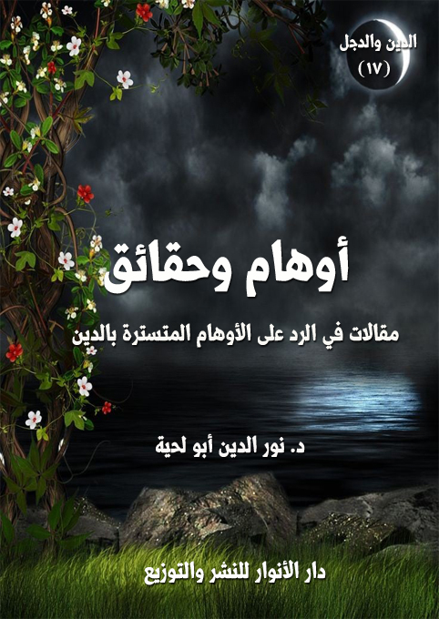

الكتاب: أوهام.. وحقائق
المؤلف: أ.د. نور الدين أبو لحية
الناشر: دار الأنوار للنشر والتوزيع
الطبعة: الأولى، 1438 هـ
عدد الصفحات: 128.
ISBN: 978-620-2-34307-7
لمطالعة الكتاب من تطبيق مؤلفاتي المجاني وهو أحسن وأيسر: هنا

التعريف بالكتاب
هذه مقالات متفرقة تجتمع حول الدعوة إلى شيء واحد، وهو العودة لمصدر الحقيقة الصافية الذي لم يتلبس بوهم، ولم يختلط بهوى، ولم يلم به الشيطان، ولا أذناب الشيطان.
وذلك المصدر المقدس لا يتمثل إلا في الوحي الإلهي المعصوم، والذي جعله الله مرجعا عند التنازع، وعدم التنازع..
لكنه ـ عند تتبع مسار الأمة من خلال تاريخها وتراثها ـ نجد هجرا مقصودا أو غير مقصود لذلك المصدر المقدس، واللجوء بدله إلى الكثير من المصادر الممتلئة بالوهم، وتحت أسماء مختلفة، كالسلف أو الخلف أو الكشف أو الشهود أو الإلهام.. أو غير ذلك من الأسماء.
ولأجل مراعاة كل تلك المصادر البديلة التي زرعت الأوهام في واقعنا وديننا تعرض القرآن الكريم للكثير من التأويل والتعطيل والهجر..
وهذا الكتاب تذكير بالعودة إليه.. وبالبعد عن كل مصادر الأوهام في واقعنا وتراثنا.
أوهام.. وحقائق (5)
هذه مقالات كتبتها في مناسبات مختلفة، لكنها تجتمع جميعا حول الدعوة إلى شيء واحد، وهو العودة لمصدر الحقيقة الصافية الذي لم يتلبس بوهم، ولم يختلط بهوى، ولم يلم به الشيطان، ولا أذناب الشيطان.
وذلك المصدر المقدس لا يتمثل إلا في الوحي الإلهي المعصوم، والذي جعله الله تعالى مرجعا عند التنازع، وعدم التنازع.. كما جعله مرجعا لنعرف من خلاله حقائق الإنسان والكون والحياة، ونسير وفق سنن الله وقوانينه ونظامه الذي وضعه لها جميعا.
لكنه ـ عند تتبع مسار الأمة من خلال تاريخها وتراثها ـ نجد هجرا مقصودا أو غير مقصود لذلك المصدر المقدس، واللجوء بدله إلى الكثير من المصادر الممتلئة بالوهم، وتحت أسماء مختلفة، كالسلف أو الخلف أو الكشف أو الشهود أو الإلهام.. أو غير ذلك من الأسماء.
ولأجل مراعاة كل تلك المصادر البديلة التي زرعت الأوهام في واقعنا وديننا تعرض القرآن الكريم للكثير من التأويل والتعطيل والهجر..
وبما أنه لا يمكن حصر مظاهر الوهم، وكيفية تسلطها على الحقائق وتشويهها لها، فقد اقتصرنا على نماذج متفرقة منها، لتدل على غيرها.. ذلك أن كل هذه السلسلة [الدين والدجل] محاولة للبحث عن مصادر الوهم ومظاهره في المدارس الإسلامية المختلفة، وبيان وجوه مخالفتها أو صراعها مع الحقائق.
وأحب أن أذكر هنا لأولئك المثبطين الذين يرون في نشر مثل هذا نشرا لغسيل هذه الأمة، وتشويها لها، وأننا بذلك نناقض ما ورد في النصوص المقدسة من خيرية هذه الأمة، كقوله تعالى: {كُنتُمْ خَيْرَ أُمَّةٍ أُخْرِجَتْ لِلنَّاسِ} [آل عمران:110]، وقد غفل هؤلاء عن
أوهام.. وحقائق (6)
سر من أسرار هذه الخيرية، أو سبب من أسبابها، وهو ما ورد في تكملة الآية من قوله تعالى: {تَأْمُرُونَ بِالْمَعْرُوفِ وَتَنْهَوْنَ عَنِ الْمُنكَرِ} [آل عمران:110]
فالآية تضع شرطا لهذه الخيرية، وهو الأمر بالمعروف والنهي عن المنكر، وهما أخطر من أن يتعلقا بفروع المسائل، ويقصرا في أصولها.. أو أن يرتبطا بعامة الناس البسطاء، ويقصرا في خواصهم وأهل الرأي والعلم والحكم فيهم.
وقد أخبر القرآن الكريم عن المصير الذي آل إليه بنو إسرائيل، والتحريف الذي وقع لدينهم، وكل ذلك بسبب السكون عن محاربة الدجل، أو التحذير منه، بحجة حفظ حرمة الأحبار والرهبان، كما قال تعالى: {لُعِنَ الَّذِينَ كَفَرُوا مِنْ بَنِي إِسْرَائِيلَ عَلَى لِسَانِ دَاوُودَ وَعِيسَى ابْنِ مَرْيَمَ ذَلِكَ بِمَا عَصَوْا وَكَانُوا يَعْتَدُونَ (78) كَانُوا لَا يَتَنَاهَوْنَ عَنْ مُنْكَرٍ فَعَلُوهُ لَبِئْسَ مَا كَانُوا يَفْعَلُونَ (79) تَرَى كَثِيرًا مِنْهُمْ يَتَوَلَّوْنَ الَّذِينَ كَفَرُوا لَبِئْسَ مَا قَدَّمَتْ لَهُمْ أَنْفُسُهُمْ أَنْ سَخِطَ اللَّهُ عَلَيْهِمْ وَفِي الْعَذَابِ هُمْ خَالِدُونَ (80)} [المائدة: 78 - 81]
وقد ورد في الحديث تفسير لبعض مظاهر ذلك، حيث قال صلى الله عليه وآله وسلم: (إن بنى إسرائيل لما وقع فيهم النقص كان الرجل فيهم يرى أخاه يقع على الذنب فينهاه عنه فإذا كان الغد لم يمنعه ما رأى منه أن يكون أكيله وشريبه وخليطه فضرب الله قلوب بعضهم ببعض ونزل فيهم القرآن {لُعِنَ الَّذِينَ كَفَرُوا مِنْ بَنِي إِسْرَائِيلَ} الآيات لا حتى تأخذوا على يد الظالم فتأطروه على الحق أطرا) (1)
بل إن الله تعالى اعتبر الإسرائيليين الذين لم ينكروا على تلاعب قومهم بحرمة السبت، وهي شريعة شرعت لهم، حاولوا الاحتيال عليها، بكونهم مشاركين لأصحاب الحيلة أنفسهم.
__________
(1) الترمذى (5/ 252، رقم 3048)، وابن ماجه (2/ 1327، رقم 4006)، الطبرانى فى الأوسط (1/ 166، رقم 519)
أوهام.. وحقائق (7)
فقد قسم الله تعالى أهل السبت إلى ثلاثة أقسام، قسم ارتكبوا جرم المخالفة، وقسم نهوهم، وقسم سكتوا عنهم، لكنه عند ذكر عقوبته لهم ذكر أنه لم ينجو إلا المنكرون.. وهذا يعني أن الساكتين والفاعلين نالتهم نفس العقوبة، قال تعالى: {وَإِذْ قَالَتْ أُمَّةٌ مِنْهُمْ لِمَ تَعِظُونَ قَوْمًا اللَّهُ مُهْلِكُهُمْ أَوْ مُعَذِّبُهُمْ عَذَابًا شَدِيدًا قَالُوا مَعْذِرَةً إِلَى رَبِّكُمْ وَلَعَلَّهُمْ يَتَّقُونَ (164) فَلَمَّا نَسُوا مَا ذُكِّرُوا بِهِ أَنْجَيْنَا الَّذِينَ يَنْهَوْنَ عَنِ السُّوءِ وَأَخَذْنَا الَّذِينَ ظَلَمُوا بِعَذَابٍ بَئِيسٍ بِمَا كَانُوا يَفْسُقُونَ (165)} [الأعراف: 164، 165]
بناء على هذا، فإن الواجب الذي نرى أنفسنا مكلفين به هو الوقوف في وجه الدجل والاحتيال والتلاعب بالدين من غير أن يكون لنا انحياز لأي مدرسة من المدارس أو جهة من الجهات.. ولذلك شملت المقالات الكثير من المدارس والتوجهات مع اختلافاتها الشديدة بينها..
أوهام.. وحقائق (8)
من أعظم الحجب الحائلة بين ملايير الناس في واقعنا، وفي جميع التاريخ، وبين دين الله الأقوم، ما يمكن تسميته [الدين الوراثي].. وهو دين ينطلق من الأنا وكبريائها، ليرسم لصاحبها أنه ومن ولد معه في تلك البيئة، أو من شاركه في ذلك الدين، ومارس معه تلك الطقوس.. وحدهم فقط على الحق المجرد، وغيرهم على ضلالة.
وقد كان هذا الدين هو الذين اعتنقته عاد وثمود وقوم فرعون.. الذين رددوا جميعا، ـ وهم يواجهون أنبياءهم بكل كبرياء ـ ما ذكره القرآن الكريم عنهم، قال تعالى: {قَالُوا وَجَدْنَا آبَاءنَا لَهَا عَابِدِين} [الأنبياء:53]، وقال: {قَالُوا بَلْ وَجَدْنَا آبَاءنَا كَذَلِكَ يَفْعَلُون} [الشعراء:74]، وقال: {بَلْ قَالُوا إِنَّا وَجَدْنَا آبَاءنَا عَلَى أُمَّةٍ وَإِنَّا عَلَى آثَارِهِم مُّهْتَدُون} [الزخرف:22].
وهكذا أعطى القاعدة العامة لهؤلاء جميعا، فقال: {وَكَذَلِكَ مَا أَرْسَلْنَا مِن قَبْلِكَ فِي قَرْيَةٍ مِّن نَّذِيرٍ إِلاَّ قَالَ مُتْرَفُوهَا إِنَّا وَجَدْنَا آبَاءنَا عَلَى أُمَّةٍ وَإِنَّا عَلَى آثَارِهِم مُّقْتَدُون} [الزخرف:23]
وما ذكره الله عن سنته في الأمم السالفة هو نفسه الذي وجد في هذه الأمة.. فما كان لهذه الأمة أن تتخلف عن سنن الله.. ولذلك دب فيها هذا النوع من الدين.. وكان سببا لصراعات كثيرة بينها وبين نفسها، وبينها وبين الأمم الأخرى.. وحل هذا الدين في الأخير بديلا لدين الله الأقوم الذي لم يختلط بالبيئات ولم تؤثر فيه الأجيال.
وأول علامات هذا الدين هو الكبرياء والفخر والتباهي.. مع أن دين الله الأقوم هو الذي يملأ صاحبه بالتواضع والمحبة والإحساس بالحزن والألم على كل المخلوقات، كما كان رسول الله صلى الله عليه وآله وسلم صاحب الدين الأقوم الذي قال له ربه: {فَلَعَلَّكَ بَاخِعٌ نَّفْسَكَ عَلَى
أوهام.. وحقائق (9)
آثَارِهِمْ إِن لَّمْ يُؤْمِنُوا بِهَذَا الْحَدِيثِ أَسَفًا} [الكهف:6]، وقال له: {لَعَلَّكَ بَاخِعٌ نَّفْسَكَ أَلاَّ يَكُونُوا مُؤْمِنِين} [الشعراء:3]
وثاني علامات هذا الدين أن صاحبه يعتقد أن الجنة خلقت له، ولطائفته، لأنهم شعب الله المختار، وأنهم لا يدخلون النار في حال دخلوها إلا أياما معدودات.. وما بعدها لن يدخلوا الجنة فقط.. وإنما سيدخلون الفردوس الأعلى.. وسيتكلف رسول الله صلى الله عليه وآله وسلم نفسه بأن يسقيهم.
هذه هي الأماني التي يتعلق بها أصحاب الدين الوراثي، ولذلك ينحجبون بها عن كل مكرمة، ويندفعون بها إلى كل مثلبة.
وثالث علامات هؤلاء.. وهي علامة عجيبة.. أنك تجد أحدهم أميا غارقا في جهله إلى أذنيه، لكنه إن رأى أحدا يصلي خلافا صلاته، أو يتوضأ خلاف وضوئه أقام الدنيا عليه.. وطالبه بالدليل، مع أن كل عقائده وعباداته ومعاملاته مبنية على التقليد المجرد.. بل على أسوأ أنواع التقليد، وهي تقليد جاره أو صديقه.. لكنه إن رأى خلاف ما علمه صديقه أو جاره تصور أن الدين قد قوض من أساسه.. وكأن الدين هو دين جاره أو صديقه أو جهله المركب.
ورابع علامات هؤلاء أنك تجد أحدهم يسمع كل ألوان السبب لله ورسوله، فلا يتحرك له جفن، ولا ينتفض له عرق.. لكنه إن رأى عالما أو محققا أو باحثا يدقق في بعض مسائل العلم التي لا يطيقها عقله، راح يتهمه بالمروق والزندقة والضلال.. وكأن الذين يسبون الله ورسوله أمامه صباح مساء عابدون في محاربيهم، أو ناسكون في خلواتهم.
لكن الدين الوراثي هو الذي فعل به ذلك.. وهو الذي جعله يردد ما ردده فرعون: {مَا أُرِيكُمْ إِلاَّ مَا أَرَى وَمَا أَهْدِيكُمْ إِلاَّ سَبِيلَ الرَّشَاد} [غافر:29]
أوهام.. وحقائق (10)
يتوهم البعض أن دعوتنا لإعمال البحث العقلي في الدين ليست سوى إعطاء للعقل مجالا غير مجاله، وصلاحيات غير صلاحياته.. فالعقل معقول ومقيد، ويستحيل عليه أن يتعرف على المعارف العليا التي لا تخضع لمجاله.
وهذا كلام صحيح من نواح كثيرة.. ولكنه ليس صحيحا مطلقا.. لأن القرآن الكريم دعا إلى إعمال العقل في أمهات قضايا الدين.. ولا يصح أن نرمي هذه الدعوات سلة المهملات.
إذن ما هي علاقة الدين بالعقل.. وكيف نعمل العقل في مجاله.. والدين في مجاله.. وكيف نسمح لأنفسنا بمناقشة العقل للدين؟
وللإجابة على هذه الأسئلة نستحضر بعض الأمثلة التي نوقشنا فيها كما نوقش فيها الدعاة إلى إخضاع النصوص الروائية ـ خصوصا ـ للعقل..
وكمثال على ذلك الموقف من حديث الذباب أو حديث البكتريا اللذين رواهما أصحاب الصحاح عن أبي هريرة.. وانتقدناهما نقدا شديدا، واستعملنا العقل في النقد.. وتصور البعض أننا بنقدنا لذلك ننقد رسول الله صلى الله عليه وآله وسلم نفسه.. ولم يضع في حسابه أننا ننقد رواة الحديث، ولا يهمنا من كان منهم هل هو أبو هريرة أو البخاري أو غيرهما..
ونقدنا ذلك منطلق من مقدمات عقلية وقرآنية غاية في الدقة.. فرسول الله صلى الله عليه وآله وسلم الذي أخبر الله تعالى عنه أنه لا ينطق عن الهوى، وأن كل معارفه معصومة ومستمدة من الوحي الإلهي يستحيل أن يقع في مثل هذا الخطأ.. ولذلك فنحن استعملنا العقل، لا لضرب الوحي، وإنما لحمايته من الخرافة والدجل الذي تسرب إليه.
وحجتنا في الرد أيضا عقلية وشرعية.. ذلك أن الوهم الذي دخل تلك الأحاديث
أوهام.. وحقائق (11)
لابد أن يكون له أحد مصدرين: إما أن يكون رسول الله صلى الله عليه وآله وسلم.. وذلك مستحيل لمقدمات عقلية كثيرة.. وإما أن يكون مصدره أبو هريرة أو الرواة عنه.. وذلك جائز، وباتفاق الناقدين لنا.. لأن أبا هريرة أو غيره من الرواة لا يستحيل عليهم الخطأ، لا عقلا ولا شرعا، بل قد وقع منهم ذلك، ووقع التصحيح لهم من طرف الصحابة أنفسهم..
ثم إنه لا ضرر في نسبة الخطأ إليهم إذا ما ناقشنا المستشرقون أو المستغربون الذين يتهمون رسول الله صلى الله عليه وآله وسلم بسبب تلك الأحاديث.. لأننا لم نزعم لهم أننا نقول بعصمة النقلة والرواة والأسانيد.
وهذا الموقف يعطينا قوة كبيرة في مواجهة الحداثيين أو اللادينيين أو غيرهم ممن يثيرون الشبهات علينا بسبب أمثال تلك النصوص.. لأن مساحة دفاعنا ستبقى مختصة بالمقدس، لا ما عداه.
ولذلك فإنه من المستحيل على من يقدس التراث أو يقدس التاريخ أو يقدس أمثال تلك الروايات أن تكون له القدرة على مواجهة مثيري الشبهات على الإسلام.. إلا إذا استعمل المنهج الذي نراه في الواقع.. وهو منهج السباب والتضليل والتكفير.. وهو منهج يزيد في تشويه الإسلام أكثر مما يساهم في رد الشبهات عنه.
هذا هو موقفنا.. وهو موقف شرعي عقلاني أخلاقي.. يقدم رسول الله صلى الله عليه وآله وسلم على أي كان صحابيا أو تابعيا.. سلفيا أو خلفيا.
بينما موقف الآخرين موقف هش ضعيف، لا شرعي ولا عقلاني، بل إن الجرأة وصلت بهم في سبيل حفظ عصمة أبي هريرة والرواة عنه إلى اتهام رسول الله صلى الله عليه وآله وسلم نفسه..
وقد ذكرنا في كتابنا عن أبي هريرة ذلك الموقف المخزي الذي وقفه المحدثون من تلك الرواية العجيبة المتناقضة والتي يروي فيها أبو هريرة أن رسول الله صلى الله عليه وآله وسلم قال: (فقدت أمة من بني إسرائيل، لم يدر ما فعلت، وإني لا أراها إلا الفأر، ألا ترونها إذا وضع لها ألبان
أوهام.. وحقائق (12)
الإبل لا تشربه، وإذا وضع لها ألبان الشاء شربته)، قال أبو هريرة: حدثت بهذا الحديث كعبا، فقال: سمعته من رسول الله صلى الله عليه وآله وسلم؟ فقلت: نعم، فقال لي ذلك مرارا، فقلت: أتقرأ التوراة؟!) (1)
فقد ذكر السلفيون والمحدثون قبلهم أن معلومات رسول الله صلى الله عليه وآله وسلم التي ذكرها في هذا خاطئة، وأنها كانت باجتهاد منه، لأن الحديث يتعارض مع حديث آخر يذكر أنه لا عقب للمسخ.
وقد عبر بجرأة كبيرة عن هذا المعنى الشيخ عبد العزيز الراجحي، فقال ـ تعليقا على الحديث ـ: (يعني: أن الفأر مسخ، لأمة من بني إسرائيل مسخوا فأرا، وهذا قاله النبي صلى الله عليه وآله وسلم بظنه واجتهاده، حيث قال: ولا أراها -بضم الهمزة- أي: أظنها. وهذا قاله قبل أن يوحى إليه أن الممسوخ لا يعيش أكثر من ثلاثة أيام، وإنما مسخ بنو إسرائيل قردة وخنازير ثم لم يعيشوا أكثر من ثلاثة أيام كما قال الله: {فَلَمَّا عَتَوْا عَنْ مَا نُهُوا عَنْهُ قُلْنَا لَهُمْ كُونُوا قِرَدَةً خَاسِئِينَ} أما الفأر فهو أمة من الأمم، وكذا القردة أمة، وكذا الخنازير والكلاب أمة، أما الممسوخون فإنهم لم يكن لهم نسل ولا عقب، بل ماتوا بعد ثلاثة أيام) (2)
وللأسف فإن هذا الراجحي لم ينكر عليه أحد هذه الجرأة، لأنه لم يتجرأ على تخطئة أبي هريرة، وإنم تجرأ على تخطئة رسول الله صلى الله عليه وآله وسلم.. والمهم عند السلفية وأتباعهم أن تبرأ ساحة أبي هريرة.. ولا يهم أن تدنس ساحة رسول الله صلى الله عليه وآله وسلم.
وهؤلاء الذين يقولون هذا لم يقرأوا قوله تعالى: {وَلَا تَقْفُ مَا لَيْسَ لَكَ بِهِ عِلْمٌ إِنَّ السَّمْعَ وَالْبَصَرَ وَالْفُؤَادَ كُلُّ أُولَئِكَ كَانَ عَنْهُ مَسْئُولًا} [الإسراء: 36]، فهل يمكن لرسول
__________
(1) رواه أحمد (2/ 234، رقم 7196)، والبخارى (3/ 1203، رقم 3129)، ومسلم (4/ 2294، رقم 2997) وأبو يعلى (10/ 420، رقم 6031)، والديلمى (3/ 126، رقم 4340)، وغيرهم.
(2) انظر موقعه على النت.
أوهام.. وحقائق (13)
الله صلى الله عليه وآله وسلم أن يقفو ما ليس له به علم.. وهل يمكن أن يخبر عن ذلك أصحابه، وكأنه حقيقة علمية ثابتة؟
هذا هو موقفنا من علاقة الدين بالعقل.. ولذلك فإن المجادلين الذين يتصورون أن إنكار مثل هذه الروايات إنكار لكل عالم الغيب الذي لم يدل عليه العقل لم يفهموا دور العقل.. فنحن لم نقل بأن للعقل القدرة على التوصل على معرفة الغيب.. فذلك مستحيل.. وإنما دور العقل قاصر على معرفة صدق الرسول عن طريق البراهين والمعجزات.. فإذا صدق الرسول صدق كل ما جاء به من باب الضرورة العقلية..
مثلما نصدق نحن رواد الفضاء الذين يخبروننا عما رأوا في القمر وغيره، لثقتنا بهم، حتى لو لم نر ما لم يروا.
ومصدر كل هذا الوهم هو عدم التفريق بين أحكام العقل.. فأحكام العقل المرتبطة بالغيب هي الجواز.. أي أنه يجوز كل شيء يخبر عنه المعصوم.. بشرط أن يكون الخبر صحيحا، وعن طريق قطعي، وألا يتعارض مع الواقع والحس.
فالسلفي الذي يؤمن بأن الأرض ثابتة أو أن الشمس تدور حولها بناء على نصوص يراها مقدسة واهم، لأن النصوص المقدسة القطعية لا تقول بذلك.. والعقل والواقع لا يقول بذلك.. ولذلك فإن العقل والشرع يقتضيان أن نطرح كل النصوص التي تدل على ذلك، أو نؤولها التأويل المتناسب مع مقتضيات العقل.
وأحب أن أنهي هذا التوضيح الذي لم نكن بحاجة إليه، لولا الجدل الذي أثير حول المسألة بكلمات جميلة لأبي حامد الغزالي يقول فيها: (اعلم أن العقل لن يهتدي إلا بالشرع، والشرع لم يتبين إلا بالعقل، فالعقل كالأس، والشرع كالبناء، ولن يغني أس ما لم يكن بناء، ولن يثبت بناء ما لم يكن أس) (1)
__________
(1) معارج القدس في مدارج معرفه النفس (ص: 57)
أوهام.. وحقائق (14)
ثم شبه العلاقة بينهما تشبيها آخر، فقال: (وأيضا فالعقل كالبصر والشرع كالشعاع، ولن يغني البصر ما لم يكن شعاع من خارج ولن يغني الشعاع ما لم يكن بصر)
ثم شبه العلاقة بينهما تشبيها ثالثا، فقال: (وأيضا فالعقل كالسراج والشرع كالزيت الذي يمده فما لم يكن زيت لم يحصل السراج وما لم يكن سراج لم يضئ الزيت)
ثم استدل لذلك بقوله تعالى: {اللَّهُ نُورُ السَّمَاوَاتِ وَالْأَرْضِ مَثَلُ نُورِهِ كَمِشْكَاةٍ فِيهَا مِصْبَاحٌ الْمِصْبَاحُ فِي زُجَاجَةٍ الزُّجَاجَةُ كَأَنَّهَا كَوْكَبٌ دُرِّيٌّ يُوقَدُ مِنْ شَجَرَةٍ مُبَارَكَةٍ زَيْتُونَةٍ لَا شَرْقِيَّةٍ وَلَا غَرْبِيَّةٍ يَكَادُ زَيْتُهَا يُضِيءُ وَلَوْ لَمْ تَمْسَسْهُ نَارٌ نُورٌ عَلَى نُورٍ} [النور: 35]
وعلق على الآية الكريمة بقوله: (فالشرع عقل من خارج والعقل شرع من داخل، وهما متعاضدان بل متحدان.. ولكون الشرع عقلا من خارج سلب الله تعالى اسم العقل من الكافر في غير موضع القرآن نحو قوله تعالى: {صُمٌّ بُكْمٌ عُمْيٌ فَهُمْ لَا يَعْقِلُونَ} [البقرة: 171] ولكون العقل شرعا من داخل قال تعالى في صفة العقل: {فِطْرَتَ الله الَّتِي فَطَرَ النَّاسَ عَلَيْهَا لَا تَبْدِيلَ لِخَلْقِ الله ذَلِكَ الدِّينُ الْقَيِّمُ} [الروم: 30]، فسمى العقل دينا ولكونهما متحدين قال: {نُورٌ عَلَى نُورٍ} [النور: 35]} أي نور العقل ونور الشرع، ثم قال: {يَهْدِي الله لِنُورِهِ مَنْ يَشَاءُ} [النور: 35] فجعلها نورا واحدا، فالشرع إذا فقد العقل لم يظهر به شيء وصار ضائعا ضياع الشعاع عند فقد نور البصر، والعقل إذا فقد الشرع عجز عن أكثر الأمور عجز العين عند فقد النور) (1)
هكذا يفهم علماء الإسلام الحقيقيين لا المزيفين علاقة العقل بالشرع.. فلا ينفون أحدهما لأجل الآخر.. ولا يقدمون أحدهما على الآخر.. لأن كليهما شرع.. فمسلمات العقول هي شريعة الله التي شرعها الله لها في جبلتها وفطرتها، وإلا ما دعا صلى الله عليه وآله وسلم إلى استفتاء العقول والقلوب.
__________
(1) معارج القدس في مدارج معرفه النفس (ص: 57)
أوهام.. وحقائق (15)
ففي الحديث عن وابصة الأسدي قال: أتيت رسول الله صلى الله عليه وآله وسلم، وأنا أريد أن لا أدع شيئا من البر والإثم إلا سألته، فأتيته في عصابة من الناس يستفتونه، فجعلت أتخطاهم، فقالوا: إليك يا وابصة عن رسول الله صلى الله عليه وآله وسلم، فقلت: دعوني أدنو من رسول الله صلى الله عليه وآله وسلم، فإنه أحب الناس إلي أن أدنو منه، قال: (دعوا وابصة، ادن يا وابصة، استفت قلبك، واستفت نفسك، استفت قلبك، واستفت نفسك، البر ما اطمأنت إليه النفس، واطمأن إليه القلب، والإثم ما حاك فى النفس، وتردد في الصدر، وإن أفتاك الناس وأفتوك، ثلاثا) (1)
والحديث صريح في الدلالة على أن على المتلقي ألا يضع نفسه بين يدي المفتي كالميت بين يدي الغسال كما يشاع، وإنما عليه أن يناقش ويبحث ويتأكد، ويستفتي قلبه ونفسه، حتى لا يقع فيمن ذكرهم الله تعالى، فقال: {إِذْ تَبَرَّأَ الَّذِينَ اتُّبِعُوا مِنَ الَّذِينَ اتَّبَعُوا وَرَأَوُا الْعَذَابَ وَتَقَطَّعَتْ بِهِمُ الأَسْبَاب (166) وَقَالَ الَّذِينَ اتَّبَعُوا لَوْ أَنَّ لَنَا كَرَّةً فَنَتَبَرَّأَ مِنْهُمْ كَمَا تَبَرَّؤُوا مِنَّا كَذَلِكَ يُرِيهِمُ اللّهُ أَعْمَالَهُمْ حَسَرَاتٍ عَلَيْهِمْ وَمَا هُم بِخَارِجِينَ مِنَ النَّار} [البقرة:166 - 167]
ولذلك فإن المقولة الشائعة: (ضعها في رقبة عالم واخرج منها سالم)، أو قولهم (ضع بينك وبين النار شيخ) غير صحيحة، بل متناقضة مع كل القيم العقلية والقرآنية.. لأن أقوام الأنبياء طبقوا هذه المقولات، وخضعوا للملأ من قومهم.. فأضلوهم سواء السبيل..
وكما أضل الملأ أقوامهم، فلا مانع عقلا ولا شرعا أن يمارس الملأ من هذه الأمة المهنة التي مارستها الأمم من قبلهم.. مهنة التضليل، كما صرح بذلك رسول الله صلى الله عليه وآله وسلم في أحاديث كثيرة.
منها ما رواه أبو ذر قال: كنت أمشي مع رسول الله صلى الله عليه وآله وسلم، فقال: (لغير الدجال أخوفني على أمتي)، قالها ثلاثا، قال: قلت: يا رسول الله، ما هذا الذي غير الدجال أخوفك على
__________
(1) رواه أحمد 4/ 228 (18164) وفي (18169)، والدارمي: 2533.
أوهام.. وحقائق (16)
أمتك؟ قال: (أئمة مضلين) (1)
__________
(1) رواه أحمد 5/ 145 (21621) وفي 5/ 145 (21622)
أوهام.. وحقائق (17)
هناك جانبان في حياة رسول الله صلى الله عليه وآله وسلم وفي وظائفه الدعوية، أحدهما يمكن التعبير عنه بالرسالة، وهو تلك التعاليم العقدية والسلوكية التي بلغها رسول الله صلى الله عليه وآله وسلم عن ربه، والتي اتفقت الأمة على قبولها، والأخذ بها.. وإن اختلفت في درجة ذلك.
والجانب الثاني، هو ما يمكن التعبير عنه بالنبوة.. أو هو معنى من معاني النبوة.. وهو كونه صلى الله عليه وآله وسلم مخبرا عن مستقبل هذه الأمة، وما ستمتحن به من أنواع الامتحان، وكيف تخرج منها سالمة، وهذا للأسف لقي إعراضا كبيرا من لدن الكثير من الناس.. وخصوصا الباحثين منهم، مع أن رسول الله صلى الله عليه وآله وسلم أدى ذلك على أحسن وجه وأكمله، ومع أن الكثير من ذلك قد بلغنا بوضوح ودقة لا يمكن الشك فيها.. ولكن مع ذلك كله نرى الأمة في هذا الجانب تعرض عن رسول الله صلى الله عليه وآله وسلم، فتذكر من العلل غير ما ذكره، بل تتهرب مما ذكره، وتحتال عليه بصنوف الحيل.
ومن أمثلة ذلك قوله صلى الله عليه وآله وسلم في الحديث الذي اتفق عليه الشيخان البخاري ومسلم، وهو ما رواه سعيد بن عمرو بن العاص قال: كنت مع مروان وأبي هريرة في مسجد النبي صلى الله عليه وآله وسلم، فسمعت أبا هريرة يقول: سمعت الصادق المصدوق يقول: (هلاك أمتي على يدي أغيلمة من قريش، فقال مروان: غلمة، قال أبو هريرة: (إن شئت أن أسميهم بني فلان وبني فلان) (1)
فمع صحة الحديث، ومع كونه إخبارا من رسول الله صلى الله عليه وآله وسلم عن دور أولئك الأغيلمة من قريش، والذين ورد في تفسيرهم في روايات أخرى بكونهم من بني أمية الذين يشملون معاوية ومن بعده.. ولكن مع ذلك لا نرى اهتماما بالبحث عن هؤلاء الأغيلمة، ولا عن
__________
(1) أحمد (2/ 324) والبخاري (4/ 242).
أوهام.. وحقائق (18)
أسرار إهلاكهم للأمة، ولا إفسادهم لها، في نفس الوقت الذي نجري فيه وراء روايات كاذبة عن شخص يهودي اسمه عبد الله بن سبأ لنستبدل به أولئك الأغيلمة الذين رفعنا من شأنهم، وحولهم سلفنا إلى أئمة وهداة.. وحول ملكهم المستبد إلى خلافة راشدة تمثل الإسلام.
وهكذا نتعامل مع إخباره صلى الله عليه وآله وسلم عن مواطن الفتن والزلازل، والذي حدده بدقة في قوله: (اللهم بارك لنا في شامنا، اللهم بارك لنا في يمننا)، فقالوا: وفي نجدنا يا رسول الله، قال رسول الله صلى الله عليه وآله وسلم: (اللهم بارك لنا في شامنا، اللهم بارك لنا في يمننا)، فقال الناس: وفي نجدنا يا رسول الله؟ فقال رسول الله صلى الله عليه وآله وسلم: (الزلازل والفتن هناك: وهناك يطلع قرن الشيطان) (1)
فمع صحة الحديث، ووضوحه، وانطباقه تماما على المنطقة التي ظهرت فيها الوهابية، وآل سعود.. ومع الدلائل التاريخية والواقعية الكثيرة التي تبرهن على ذلك، إلا أن الحيل الشرعية التي تعلمناها جعلتنا ننصرف عن ذلك كله.. فنسمي بلاد الفتن ومركزها [بلاد التوحيد]، ونسمي الملوك الذين دنسوا الحرمين بـ[خدام الحرمين]
وهكذا نتعامل مع قوله صلى الله عليه وآله وسلم: (إن بعدي من أمتي ـ أو سيكون بعدي من أمتي ـ قومٌ يقرؤون القرآن، لا يجاوز حلاقيمهم، يخرجون من الدِّين كما يخرج السهم من الرميِّة، ثم لا يعودون فيه، هم شرُّ الخلق والخليقة) (2)، وكان ابن عمر ـ أحد رواة الحديث ـ يصفهم، فيقول: (إنهم انطلقوا إلى آيات الله نزلت في الكفار، فجعلوها على المؤمنين) (3)
وهذا لا ينطبق إلا على فئة محدودة معلومة، هي وحدها من ترمي المسلمين بالشرك،
__________
(1) رواه البخاري ومسلم وغيرهما
(2) رواه مسلم.
(3) رواه البخاري.
أوهام.. وحقائق (19)
وهي وحدها من تشبههم بالمشركين، بل تفضل المشركين عليهم، ومع ذلك نظل ندافع عنها، بل نعتبرها تمثل السنة، وكأن نبوءة رسول الله صلى الله عليه وآله وسلم حولها كانت كنبوءات سجاح ومسيلمة تفسر بعكسها.
وهكذا نظل نتلاعب بكل نبوءاته صلى الله عليه وآله وسلم.. التي لم تترك شيئا.. حتى ما يحصل الآن في بلاد الشام واليمن وغيرها كله مذكور وبتفاصيله في كتب الدلائل وغيرها.. وكان الأولى به أن يدرس ويحقق فيه، لأن رسول الله صلى الله عليه وآله وسلم الحريص على هذه الأمة ما كان ليترك شيئا يؤذيها إلا ذكره وحذر منه..
لكن أولئك الذين يقتدون ببني إسرائيل في الكتمان لا يزالون يحيون تلك السنة، ويتهربون من كل النبوءات التي تلاحقهم.. فإن جاء باحث أو محقق وأخرج لهم تلك النبوءات ودعاهم إلى تفعيلها رموه بالرفض وما تشتهيه نفوسهم من ألقاب.. مع أن الكتب التي وردت فيها تلك الأحاديث هي كتبهم.. والعلماء الذين صححوها هم علماؤهم الذين ملأوا الدنيا ضجيجا بالدعوة إليهم.
أوهام.. وحقائق (20)
[اجتهد فأخطأأخ] عبارة نسمعها كثيرا ممن يدافعون عن الجرائم التاريخية التي ارتكبها من يضعون لهم قداسة خاصة.. ويتوهمون أن هؤلاء وحدهم لهم الحق في أن يجتهدوا ويخطئوا، حتى لو جر ذلك الاجتهاد إلى خراب البلاد والعباد.. وحتى لو جر لتحريف الدين نفسه.. وحتى لو جر إلى ارتكاب الموبقات التي ارتكبها الفراعنة والطغاة المجرمون.
في نفس الوقت الذي يقف فيه أولئك المتسامحون مع تلك الجرائم التاريخية بشدة وقسوة وغلظة مع كل من اجتهد في بيان جرائمهم، وحاول أن يوثقها، أو يقف منها موقفا سلبيا من باب الشهادة لله، كما قال تعالى: {وَلاَ تَرْكَنُوا إِلَى الَّذِينَ ظَلَمُوا فَتَمَسَّكُمُ النَّارُ وَمَا لَكُم مِّن دُونِ اللّهِ مِنْ أَوْلِيَاء ثُمَّ لاَ تُنصَرُون} [هود:113]
وهذه مواقف عجيبة ومتناقضة ولا تتناسب مع عدالة الله، ولا تتناسب مع السماحة التي يزعمون أنهم يتصفون بها.
أما عدم تناسبها مع عدالة الله، ولا سننه في خلقه، ولا القيم التي تضبط الكون والحياة، وتجعل منهما كائنا منسجما تمام الانسجام، فواضح فالله تعالى يقول: {مَّا تَرَى فِي خَلْقِ الرَّحْمَنِ مِن تَفَاوُتٍ فَارْجِعِ الْبَصَرَ هَلْ تَرَى مِن فُطُور} [الملك:3]، وقال: {إِنَّا كُلَّ شَيْءٍ خَلَقْنَاهُ بِقَدَر} [القمر:49]
ومن مقتضيات هذه الآيات الكريمة أن سنته في خلقه جميعا واحدة.. فهل يمكن أن تسمح العدالة الإلهية لمجرم مسلم، ولا تسمح لمجرم غير مسلم.. أم أنها يمكن أن تتساهل مع جريمة عاش صاحبها في القرن الأول، ولا تسمح لجريمة عاش صاحبها في القرن العاشر.. أم أنها يمكن أن تسمح فيمن اجتهد فأخطأ، وقتل الآلاف، ولاتسمح لمن اجتهد فأخطأ برأي أو بوجهة نظر، ولم يسفك قطرة دم واحدة.
أوهام.. وحقائق (21)
أما عدم تناسب موقفهم مع السماحة التي يزعمونها لأنفسهم، فهو أنه من مقتضيات الأخلاق العموم.. فالذي يصدق مع صديقه، ولا يصدق مع غيره لا يسمى صادقا، بل قد يسمى منافقا.. والذي يتسامح مع قوم، ويتشدد مع آخرين لا يسمى متسامحا، بل يسمى محابيا ومطففا وصاحب شهادة زور.
ولذلك، فإن من العجائب أن هؤلاء الذين نسمعهم الآن يكفرون ويبدعون ويصرخون في وجه كل من يدعو لنفي الدجل عن الدين، وتحرير التراث من العفن، وتحرير عقل المسلم من القيود التي قعدت به عن كل مكرمة..
هؤلاء الذين يفعلون ذلك، هم الذين يبتسمون بكل هدوء عندما تخبرهم أن عدد قتلى يوم صفين كانوا ـ كما يذكر المؤرخون ـ مائة وعشرة آلاف، وفيهم كبار الصحابة والتابعين.. وعدد قتلى معركة الجمل يتراوح ما بين ستة آلاف وخمسة وعشرين ألفا.
ثم يجيبك بكل هدوء: لا بأس.. ليس في ذلك شيء.. هذا مجرد اجتهاد خاطئ.. والله رحيم بعباده.. وقد غفر الله للجميع، بل إنه أعطى المخطئين أجورا على خطئهم.. وتلك دماء طهر الله منها أيدينا، فلنطهر منها ألسنتنا.
فإذا قلت له: فما تقول في قوله تعالى: {وَمَن يَقْتُلْ مُؤْمِنًا مُّتَعَمِّدًا فَجَزَاؤُهُ جَهَنَّمُ خَالِدًا فِيهَا وَغَضِبَ اللّهُ عَلَيْهِ وَلَعَنَهُ وَأَعَدَّ لَهُ عَذَابًا عَظِيمًا} [النساء:93]، فالله قد توعد القاتل بكل هذه العقوبات الشديدة إذا قتل مؤمنا واحدا، فكيف بمن تسبب في قتل الآلاف؟
قال لك بكل برودة وهدوء: ذاك في القاتل الذي لم يجتهد.. أما القاتل الذي اجتهد وأخطأ فستبدل سيئاته حسنات.. ألا تقرأ القرآن؟
فإذا قلت له: إذن يمكن لأي شخص أن يفعل ذلك.. ويجتهد في أن يجد أي مثلبة في أي جهة ليمعن فيها سيفه كما كان يفعل بسر بن أرطأة.. ذلك الذي قال فيه ابن العماد: (بسر بن أرطاة العامري أمير معاوية في أهل البيت من القتل والتشريد، حتى خدّ لهم
أوهام.. وحقائق (22)
الأخاديد، وكانت له أخبار شنيعة في عليّ وقتل ولدي عبيد الله بن عبّاس وهما صغيران على يدي أمّهما، ففقدت عقلها، وهامت على وجهها، فدعا عليه عليّ أن يطيل الله عمره، ويذهب عقله، فكان كذلك) (1)
قال لك بكل برودة: بسر بن أرطأة صحابي جليل.. والصحابة كلهم عدول مهما فعلوا..
فإذا قلت له: ما دامت رحمة الله بهذه السعة.. فلم لا تشمل إسلام البحيري وغيره ممن أودعتموهم السجون بسبب آراء ذكروها؟
قال لك بعنف وشدة وقسوة: لا تحدثني عن أولئك الزنادقة.. فشتان بينهم وبين الصحابة الأجلاء الذي تشرفوا برؤية رسول الله صلى الله عليه وآله وسلم.
فإذا قلت له: فهل جاء رسول الله صلى الله عليه وآله وسلم لقومه ليروه، أم جاء ليهتدوا بهديه.. ألم يذكر الله تعالى أن عقوبة من عاش مع رسول الله صلى الله عليه وآله وسلم ورأى المعجزات بعينيه أشد من عقوبة غيره، كما قال تعالى: {يَانِسَاء النَّبِيِّ مَن يَأْتِ مِنكُنَّ بِفَاحِشَةٍ مُّبَيِّنَةٍ يُضَاعَفْ لَهَا الْعَذَابُ ضِعْفَيْنِ وَكَانَ ذَلِكَ عَلَى الله يَسِيرًا} [الأحزاب:30]؟
قال لك والزبد يتطاير من فمه: أنت زنديق.. ضال.. مجرم.. تسب الصحابة.. رافضي.. مجوسي..
ويظل يردد ذلك، وكأنه إله مستو على عرشه.
__________
(1) شذرات الذهب في أخبار من ذهب، (1/ 277)
أوهام.. وحقائق (23)
يتوهم الكثيرون أن الدين هو مجموعة عواطف وانفعالات وجدانية تجعلهم يتحركون ويهتزون، أو يمارسون أي سلوك لتلبية ما تتطلبه تلك العواطف من أفعال.
لكنهم يخطئون كثيرا في ذلك.. فالعواطف المجردة عن العلم والعقل والتحقيق أوهام كاذبة، وشباك يصطادهم بهم الشيطان، ليوقعهم في دجله وانحرافاته، ويجعلهم سدنة لخدمة مشروعه.
ولذلك بدأ الله تعالى رسالة نبيه صلى الله عليه وآله وسلم بالأمر بالقراءة.. والقراءة تقتضي التدبر.. والتدبر يقتضي تفعيل العقل، كما قال تعالى: {قُلْ إِنَّمَا أَعِظُكُمْ بِوَاحِدَةٍ أَنْ تَقُومُوا لِلَّهِ مَثْنَى وَفُرَادَى ثُمَّ تَتَفَكَّرُوا} [سبأ: 46]
ولذلك فإن القلب في القرآن الكريم لا يعني المحل الذي تتنزل فيه العواطف، وتتحرك فيه المواجيد فقط.. بل يعني قبل ذلك المحل الذي تصنع فيه الأفكار.. فالمواجيد المجردة عن العقل هوى كاذب، وتلبيس شيطاني ماكر، قال تعالى: {أَفَلَا يَتَدَبَّرُونَ الْقُرْآنَ أَمْ عَلَى قُلُوبٍ أَقْفَالُهَا} [محمد: 24]
بناء على هذا المعنى انطلق الشيطان ليخرب المشروع الإلهي الذي جاء به رسول الله صلى الله عليه وآله وسلم عبر إشعال تلك الغرائز الكاذبة المسماة عواطف.. وكان أول ذلك أن أخرج معاوية للناس قميص عثمان، وهو ملطخ بالدماء ليحرك عواطفهم لحرب الإمام علي، والسابقين الأولين من المهاجرين والأنصار..
والتفتت تلك العواطف الباردة لتلك الدماء التي امتلأ بها القميص.. وبكوا كثيرا.. واستغل الشيطان بكاءهم ليملأهم بالأحقاد.. وليرسلهم لحرب بقية الصدق التي بقيت في الأمة.. واستطاع أن يحقق مشروعه بعد ذلك بنجاح.
أوهام.. وحقائق (24)
وهكذا ظل الشيطان يجلب عبيد العواطف الكاذبة بأمثال هذه الأمور، حتى أنه استطاع أن يصدع وحدة هذه الأمة عبر مسائل بسيطة، وقضايا وهمية، ولكنه عجنها بمعجون العاطفة الكاذبة التي لا عقل معها.. فصار يخرج لكل نفر من الناس قميصا من القمصان، ويدعوهم إلى إثارة الفتن لأجله.. مثلما يفعل المتلاعبون بالثيران الهائجة.
وكثمال على ذلك.. الموقف من أبي هريرة.. والذي دعا الكثير من المتنورين من أصحاب التدين العقلاني إلى ترك تقديسه، والتعامل مع أحاديثه وفق المعايير القرآنية، لا بطرحها جميعا، ولكن بتنقيتها حتى لا تصبح تلك الأحاديث معاول يهدم بها الإسلام.
لكن الشيطان أسرع إلى عواطف هؤلاء يحركها، ويظهر لهم قميص أبي هريرة المضرج بالدماء.. فراحوا بدل التحقيق فيما ذكره المتنورون يدافعون عن كل دجل، وينتصرون لكل خرافة حتى لو كان في ذلك تشويها لرسول الله صلى الله عليه وآله وسلم نفسه.
ومن الأمثلة على ذلك الموقف من أحاديث أبي هريرة الواردة في فتح القسطنطينية، والمروية في كتب الصحاح، وهي أحاديث مرتبطة بالنبوءات، وهي مصدر من مصادر الدلالة على النبوة، والنبوءة الكاذبة دليل على النبوة الكاذبة.
ومع أن النبوءات التي ذكرها أبو هريرة تتنافى مع الواقع تماما، فقد ذكر في حديثه خلاف ما وقع في فتح القسطنطينية تماما، ومع ذلك راح أصحاب العواطف الكاذبة بدل تكذيب حديثه أو تكذيب رواته، يؤولون بأصناف التأويلات الباردة، ليوقعوا رسول الله صلى الله عليه وآله وسلم نفسه في الحرج، وكأن أبا هريرة أهم عندهم من مصداقية رسول الله صلى الله عليه وآله وسلم نفسه.
وحتى لا أتهم بالدجل والكذب، فهذا حديث أبي هريرة أمامكم، وأمامكم القسطنطينية، والتي لم تفتح بعد بحسب حديث أبي هريرة.. فهل نصدق أعيننا أم نصدق حديثه؟
لقد ورد في حديثه الذي رواه عن النبي صلى الله عليه وآله وسلم أنه قال: (سمعتم بمدينة، جانب منها في
أوهام.. وحقائق (25)
البر، وجانب منها في البحر؟ قالوا: نعم يا رسول الله، قال: لا تقوم الساعة حتى يغزوها سبعون ألفا من بني إسحاق، فإذا جاؤوها نزلوا، فلم يقاتلوا بسلاح، ولم يرموا بسهم، قالوا: لا إله إلا الله، والله أكبر، فيسقط أحد جانبيها - قال ثور بن يزيد: لا أعلمه إلا قال: الذي في البحر - ثم يقولون الثانية: لا إله إلا الله، والله أكبر، فيسقط جانبها الآخر، ثم يقولون الثالثة: لا إله إلا الله، والله أكبر، فيفرج فيدخلونها فيغنمون، فبينما هم يقتسمون المغانم، إذ جاءهم الصريخ، فقال: إن الدجال قد خرج، فيتركون كل شيء ويرجعون) (1)
والحديث في صحيح مسلم وغيره من كتب السنة، وقد تلقته الأمة بالقبول.. ومع ذلك هو يزعم أن بمجرد فتح القسطنطينية يظهر الدجال وينزل المسيح.. فهل حصل ذلك؟.. وهو يزعم أن القسطنطينية فتحها أولاد إسحاق، فهل كان ذلك كذلك؟.. وهو يزعم أنها فتحت من غير سلاح، فهل حصل ذلك؟
ومثله حديث آخر.. وهو أكثر خطرا من هذا الحديث، وقد وقف أصحاب العواطف الكاذبة فيه في صف أبي هريرة ضد رسول الله صلى الله عليه وآله وسلم، والحديث هو ما رواه عن رسول الله صلى الله عليه وآله وسلم أنه قال: (فقدت أمة من بني إسرائيل، لم يدر ما فعلت، وإني لا أراها إلا الفأر، ألا ترونها إذا وضع لها ألبان الإبل لا تشربه، وإذا وضع لها ألبان الشاء شربته)، قال أبو هريرة: حدثت بهذا الحديث كعبا، فقال: سمعته من رسول الله صلى الله عليه وآله وسلم؟ فقلت: نعم، فقال لي ذلك مرارا، فقلت: أتقرأ التوراة؟!) (2)
وموقف أصحاب العواطف الباردة من من هذا الحديث عجيب جدا، وهو دليل على تعظيمهم لأبي هريرة وغيره من الصحابة أكثر من تعظيمهم لرسول الله صلى الله عليه وآله وسلم نفسه، ذلك
__________
(1) رواه مسلم في الفتن (18: 33)
(2) رواه أحمد (2/ 234، رقم 7196)، والبخارى (3/ 1203، رقم 3129)، ومسلم (4/ 2294، رقم 2997) وأبو يعلى (10/ 420، رقم 6031)، والديلمى (3/ 126، رقم 4340)، وغيرهم.
أوهام.. وحقائق (26)
أنه يتناقض ويتعارض معارضة تامة مع حديث آخر يروونه عن رسول الله صلى الله عليه وآله وسلم يقول فيه: (إن الله لم يجعل لمسخ نسلاً ولا عقباً. وقد كانت القردة والخنازير قبل ذلك) (1)
وذلك ما يستدعي تكذيب حديث أبي هريرة بالضرورة، وهو ما فعلوه، لكنم لم ينسبوا الكذب والوهم لأبي هريرة، وإنما نسبوه لرسول الله صلى الله عليه وآله وسلم، واعتذروا لذلك بأنه صلى الله عليه وآله وسلم اجتهد في ذلك، ولم يقل عن علم أو وحي..
وقد عبر عن هذا المعنى الشيخ عبد العزيز الراجحي، فقال ـ تعليقا على الحديث ـ: (يعني: أن الفأر مسخ، لأمة من بني إسرائيل مسخوا فأرا، وهذا قاله النبي صلى الله عليه وآله وسلم بظنه واجتهاده، حيث قال: ولا أراها -بضم الهمزة- أي: أظنها. وهذا قاله قبل أن يوحى إليه أن الممسوخ لا يعيش أكثر من ثلاثة أيام، وإنما مسخ بنو إسرائيل قردة وخنازير ثم لم يعيشوا أكثر من ثلاثة أيام كما قال الله: {فَلَمَّا عَتَوْا عَنْ مَا نُهُوا عَنْهُ قُلْنَا لَهُمْ كُونُوا قِرَدَةً خَاسِئِينَ} أما الفأر فهو أمة من الأمم، وكذا القردة أمة، وكذا الخنازير والكلاب أمة، أما الممسوخون فإنهم لم يكن لهم نسل ولا عقب، بل ماتوا بعد ثلاثة أيام) (2)
وقبله قال قال بن حجر: (وذكر عند النبي صلى الله عليه وآله وسلم القردة والخنازير فقال أن الله لم يجعل للمسخ نسلاً ولا عقباً وقد كانت القردة والخنازير قبل ذلك وعلى هذا يحمل قوله صلى الله عليه وآله وسلم لا أراها إلا الفأر وكأنه كان يظن ذلك ثم أعلم بأنها ليست هي) (3)
وهذا التعليل المشوه لرسول الله صلى الله عليه وآله وسلم يتناقض مع كل تلك القيم التي دعا إليها القرآن الكريم، وقد كان خلق رسول الله صلى الله عليه وآله وسلم القرآن، وأولها تناقضه مع قوله تعالى: {وَلَا تَقْفُ مَا لَيْسَ لَكَ بِهِ عِلْمٌ إِنَّ السَّمْعَ وَالْبَصَرَ وَالْفُؤَادَ كُلُّ أُولَئِكَ كَانَ عَنْهُ مَسْئُولًا} [الإسراء: 36]
__________
(1) فتح الباري 353/ 6.
(2) انظر موقعه على النت.
(3) فتح الباري 353/ 6.
أوهام.. وحقائق (27)
ويتناقض مع قوله تعالى: {وَمَا يَنْطِقُ عَنِ الْهَوَى (3) إِنْ هُوَ إِلَّا وَحْيٌ يُوحَى} [النجم: 3، 4]
ويتناقض مع كل تلك الأحاديث الصحيحة المتواترة، التي تبين أن رسول الله صلى الله عليه وآله وسلم لا يقول إلا حقا، ومنها قوله صلى الله عليه وآله وسلم في الحديث الذي رواه عبد الله بن عمرو، قال: قلت: يا رسول الله، إنى أسمع منك أشياء أفأكتبها؟ قال: نعم. قلت: فى الغضب والرضا؟ قال: (نعم، فإنى لا أقول فيهما إلا حقا) (1)
وهكذا نراهم يدافعون عن أبي هريرة وكل التشويهات والتحريفات التي وردت في أحاديثه، والتي يحكم العقل والعلم ببطلانها.. ومع ذلك فإن العقول المقيدة بتلك العواطف الكاذبة يستحيل عليها أن تسمع صوت العقل والحكمة، وكيف تسمعها، وهي تظل تصرخ وتصيح من غير علم ولا هدى.
__________
(1) هذا الحديث ورواياته التالية في: أحمد (2/ 162) (6510) و(2/ 192) (6802). والدارمي (490) وأبو داود (3646)، وابن خزيمة (2280)، وغيرهم.
أوهام.. وحقائق (28)
من أكبر الأوهام خطرا تلك التي تتعلق بالقلب، محل العواطف والمواجيد.. فهو لا يتحمل اجتماع النقائض، لأنه مرآة الروح، والمرآة لا تستطيع أن تتوجه لجهتين متناقضتين في نفس الوقت.
ولذلك نرى في الواقع أن من أحب شخصا أبغض كل أعدائه، وأبغض كل من يؤذيه، ولو بكلمة، ثم نرى ذلك البغض يتحول إلى حقد، ثم قد يتحول إلى عنف حسي أو معنوي.. وقد لا يتحول.
ولعل أقوى الأدلة على ذلك هو ذلك الموقف الشديد الذي اتخذه الكثير من الذين لا يسعني إلا أن أحترمهم، وإن كنت أختلف معهم، بسبب موقفي من معاوية أو غيره ممن يتتيمون محبة وعشقا لهم.. ولذلك أنا أقدر وضعهم، فحب الشيء يعمي ويصم، والعشق يستبد بصاحبه، حتى لا يبقى له مجال للتفكير أو البحث أو التعقل.
وأنا مثلهم أيضا عاشق ولهان، ولكني وجهت قلبي إلى قبلة غير التي وجهوا لها قلوبهم.. لقد اجتهدت كثيرا في أن أبحث لقلبي عن قبلة طاهرة حتى يتقدس بذلك التوجه.. وبعد البحث الطويل لم أر سوى تلك العترة الطاهرة التي أوصانا بها رسول الله صلى الله عليه وآله وسلم.. بل أوصانا بها قبله الله تعالى عندما قال: {قُلْ لَا أَسْأَلُكُمْ عَلَيْهِ أَجْرًا إِلَّا الْمَوَدَّةَ فِي الْقُرْبَى} [الشورى: 23]
وقد جرني ذلك إلى البحث عن القيم التي تحملها، فوجدتها نفس القيم التي تنادي بها فطرتي السليمة، ونفس القيم التي نادى بها القرآن الكريم، ونادى بها رسول الله صلى الله عليه وآله وسلم.. لأنهم بذرته التي سقاها وتعهدها.. فازداد تعلقي بهم، وخرج حبي لهم من طور العاطفة المجردة إلى طور التعقل والاستبصار.
أوهام.. وحقائق (29)
وقد كان أول من سرى إليهم أثر حبي لهم أولئك الصحابة الصادقين من المهاجرين والأنصار الذين عاشوا الإسلام بقيمه النبيلة الطاهرة، وضحوا في سبيله بكل شيء، وفدوا رسول الله صلى الله عليه وآله وسلم بأموالهم وأنفسهم، وقد ازداد حبي لهم عندما رأيتهم يقفون بقوة مع إمام العترة الطاهرة الإمام علي في صفين وفي غيرها من المواقف ليذودوا عن حمى الإسلام الأصيل من أن تمتد إليه يد التحريف والتأويل والتعطيل.
وبما أن الحب ينتج بغضا للجهة المعاكسة للمحبوب، فقد كان من الطبيعي أن أبغض كل الذين سولت لهم أنفسهم أن يشهروا أسلحتهم الحاقدة على ذلك الإمام العظيم، إمام المتقين، وحبيب الله ورسوله صلى الله عليه وآله وسلم.
وقد كان على رأس قائمة الذين أبغضتهم في الله ـ نتيجة حبي لولي الله ـ معاوية ذلك الطليق الذي لم يستحيي من نفسه ولا من تاريخه ولا من تاريخ أسرته حتى راح ينازع الكبار الذين لا يرقى مثله لمثلهم.
وقد كان من الطبيعي.. بل من بديهيات المحبة الصادقة أن أنتصر لمن أحب، وأن أحارب من أبغض.. ولذلك كنت ـ ومن غير شعور مني ـ أشدو في كل مجلس بقصائد عشقي للطاهرين، وأتلو قصائد الهجاء في المحاربين لهم..
وأنا أطمئن كل أصدقائي الذين يخشون على مصيري يوم القيامة، لأقول لهم ـ وأنا واثق في فضل الله ـ لا تخافوا.. فالمرء مع من أحب.. وأنا بحمد الله واثق في أن من أحبهم وتنعمت بالتأذي بسببهم، لن يتركوني هملا.. وسيشفعون لي عند ربي.
وإذا سئلت في عرصات القيامة عن معاوية.. فجوابي بسيط جدا، وهو أسهل علي من شرب الماء.. لأني سأقول: يا رب.. لقد أمرنا نبيك بحب الإمام علي، وبغض أعدائه.. وأن نكون سلما لمن سالم، وحربا لمن حارب.. وكان موقفي من معاوية من مقتضيات ذلك.. لأن قلبي الذي خلقته لا يتحمل أن يجتمع فيه ولي الله وعدوه.
أوهام.. وحقائق (30)
وأنا أطمئن كذلك أحباب معاوية، أنه يمكنهم أيضا أن يجدوه يوم القيامة، ويطلبوا شفاعته، وأن يستظلوا بظله الذي لا أعرفه جيدا.. ولكني موقن تماما أن له ظل، فلكل إمام من أئمة الحق أو الباطل ظل يستظل به أتباعه..
قد يقولون لي: نحن نحب الإمام علي أيضا، ولذلك نحن جمعنا بين الحسنيين.. فقد ربحنا عليا، ولم نخسر معاوية، ولا الطلقاء.
وأقول لهم: هذا كذب.. بل خداع.. لا العقل يتعقله.. ولا القلب يقبله.. وإن شئتم أن تختبروا أنفسهم، فانظروا إلى مواقفكم الواضحة التي يدل عليها كل شيء..
فأنتم تسارعون إلى كل حديث ورد في معاوية مهما كان ضعيفا تصححونه، وتؤولونه، لينسجم مع أهواء قلوبكم.. وتسارعون إلى كل حديث عن الإمام علي تضعفونه، وتكذبونه، وتحرفونه عن مساره..
وهكذا تسرعون إلى كل من يتملق معاوية، ويكذب لأجله، تحتضنونه، وتعانقونه، وتنصرونه.. وتذهبون لكل من يناصر الإمام علي والثلة الطاهرة معه تناصبونه العداء، وتحذرون منه.
بل إن حب معاوية طغا على قلوبكم حتى صرتم تعرضون على أحاديث رسول الله صلى الله عليه وآله وسلم نفسها، تلك التي تحذر منه.. بل تعرضون عن كبار الصحابة الذين امتلأت بتحذيراتهم من الفئة الباغية الدواوين.
ألا يكفي هذا وحده لتعرفوا القبلة التي تتوجه لها قلوبكم؟
أوهام.. وحقائق (31)
من أخطر المفاهيم التي تنتشر بين الكثيرمن الدعاة تصورهم أن الدين يفرض فرضا، ويلزم إلزاما، وأن على المتلقي له أن يصيخ سمعه، ويمتد كالميت بين يدي الغسال عندما يتحدث إليه الداعية، فلا يحرك لسانه ببنت شفة، ولا يقول له: لم.. ولا كيف.. ولا غيرها من الأسئلة، فإن قال ذلك، فالويل له من سوط الداعية ولسانه البذيء وأحكامه الممتلئة بالتعسف.
هذا حال الكثير من الدعاة الحداد الشداد أصحاب الوجوه المكفهرة، واللسان السليط.. وهم يتصورون أنفسهم دعاة لله.. وهم حجب عنه.. بل هم دعاة الشيطان.. فالشيطان يستعملهم لتبغيض الخلق في الدين، وتنفيرهم منه.. ويستعملهم مع المغفلين ليحولهم من دين الله إلى دينه، ومن قيم الشريعة إلى قيمه.
وسبب هذا السلوك الخاطئ، بل الإجرامي هو هجر القرآن الكريم والسنة المطهرة، والرجوع للمشايخ سواء كانوا سلفا أو خلفا.. والذين اتخذوهم أندادا من دون الله.
فالقرآن الكريم ينهى عن فرض دين الله بالإلزام، أو بالتعسف والتشدد، بل يدعو إلى إقامة الحجج والاكتفاء بالتبليغ، ثم ترك الأمر بعدها لصاحب العقل، ليستعمل عقله في تلك الحجج، وقد يقتنع حينها، أو يقتنع بعدها، أو لا يقتنع أصلا.. وكل ذلك لا يهم الداعية في شيء، لأن دوره أن يضع دين الله في قالب جميل ممتلئ بالعقلانية، وممتلئ بالطهر والجمال.. وبعدها يترك الحرية للمدعو في أن يقبل ما عرض عليه أو يرفضه..
هو يتعامل في ذلك تماما مثل الشركات المحترمة التي تسوق بضائعها بطريقة مهذبة، وتختار لإشهارها أجمل العبارات، وتسوقها تسويقا لطيفا جميلا مملوءا بالمحفزات، لتكون الحرية بعدها للمشتري.
أوهام.. وحقائق (32)
وقد أشار القرآن الكريم إلى هذا في مواضع كثيرة جدا.. بل صرح به.. فقد ذكر العقل باسمه ومشتقاته نحو خمسين مرة (1)، وذكر أولي الألباب ستة عشر مرة (2)، ومثلهم ذكر أولي النهى (3).
بل إن خطاباته مملوءة بالحجاج والبراهين المختلفة، والتساؤلات الكثيرة التي يدع للعقول بعدها الحرية في التفكير في الإجابة عليها، كما قال تعالى في آخر سورة الطور: {فَذَكِّرْ فَمَا أَنْتَ بِنِعْمَتِ رَبِّكَ بِكَاهِنٍ وَلَا مَجْنُونٍ (29) أَمْ يَقُولُونَ شَاعِرٌ نَتَرَبَّصُ بِهِ رَيْبَ الْمَنُونِ (30) قُلْ تَرَبَّصُوا فَإِنِّي مَعَكُمْ مِنَ الْمُتَرَبِّصِينَ (31) أَمْ تَأْمُرُهُمْ أَحْلَامُهُمْ بِهَذَا أَمْ هُمْ قَوْمٌ طَاغُونَ (32) أَمْ يَقُولُونَ تَقَوَّلَهُ بَلْ لَا يُؤْمِنُونَ (33) فَلْيَأْتُوا بِحَدِيثٍ مِثْلِهِ إِنْ كَانُوا صَادِقِينَ (34) أَمْ خُلِقُوا مِنْ غَيْرِ شَيْءٍ أَمْ هُمُ الْخَالِقُونَ (35) أَمْ خَلَقُوا السَّمَاوَاتِ وَالْأَرْضَ بَلْ لَا يُوقِنُونَ (36) أَمْ عِنْدَهُمْ خَزَائِنُ رَبِّكَ أَمْ هُمُ الْمُصَيْطِرُونَ (37) أَمْ لَهُمْ سُلَّمٌ يَسْتَمِعُونَ فِيهِ فَلْيَأْتِ مُسْتَمِعُهُمْ بِسُلْطَانٍ مُبِينٍ (38) أَمْ لَهُ الْبَنَاتُ وَلَكُمُ الْبَنُونَ (39) أَمْ تَسْأَلُهُمْ أَجْرًا فَهُمْ مِنْ مَغْرَمٍ مُثْقَلُونَ (40) أَمْ عِنْدَهُمُ الْغَيْبُ فَهُمْ يَكْتُبُونَ (41) أَمْ يُرِيدُونَ كَيْدًا فَالَّذِينَ كَفَرُوا هُمُ الْمَكِيدُونَ (42) أَمْ لَهُمْ إِلَهٌ غَيْرُ الله سُبْحَانَ الله عَمَّا يُشْرِكُونَ (43)} [الطور: 29 - 43]
وكل هذه تساؤلات عميقة يحتاج العقل للتدبر فيها، ومحاولة الإجابة عنها ليصل إلى الحقيقة بنفسه، وبحرية، ومن غير أن يلزمه أحد.. لأن الإلزام لا ينشئ مؤمنا، وإنما ينشئ منافقا يحتال على نفسه، أو يحتال على الناس.
ولهذا أخبر الله تعالى رسوله صلى الله عليه وآله وسلم أن مهمته قاصرة على البلاغ والتبيين وإقامة الحجة بالدليل والبرهان.. وليس عليه بعدها أن يحرك العقول لتقتنع أو لاتقتنع لأن ذلك يخضع
__________
(1) انظر المعجم المفهرس لألفاظ القرآن الكريم ص 468، 469.
(2) المعجم المفهرس، ص 644.
(3) المعجم المفهرس، ص 722.
أوهام.. وحقائق (33)
لاعتبارات نفسية كثيرة.. فقد لا يقتنع الشخص حين إقامة الحجة عليه، ولكنه بعد أن يعمل عقله، ويفكر في البراهين، يتغلب على نفسه، ويؤمن بعد ذلك.
ومن الآيات الواردة في ذلك، والتي تحدد بدقة دور سيد الدعاة وإمامهم وقدوتهم رسول الله صلى الله عليه وآله وسلم، قوله تعالى: {فَذَكِّرْ إِنَّمَا أَنْتَ مُذَكِّرٌ (21) لَسْتَ عَلَيْهِمْ بِمُصَيْطِرٍ (22)} [الغاشية: 21 - 22]، وقوله: {فَإِنْ أَعْرَضُوا فَمَا أَرْسَلْنَاكَ عَلَيْهِمْ حَفِيظًا إِنْ عَلَيْكَ إِلاَّ الْبَلاَغُ} [الشورى:48].
فالله تعالى في هذه الآيات الكريمة يحدد وظائف رسول لله صلى الله عليه وآله وسلم بدقة.. وأنه ليس عليه ولا علي أي داعية يستن بسنته أن يمارس استبداده وتسلطه مع أي كان.. لأن الهداية من الله، والجزاء لله، قال تعالى: {إِنَّكَ لَا تَهْدِي مَنْ أَحْبَبْتَ وَلَكِنَّ الله يَهْدِي مَنْ يَشَاءُ وَهُوَ أَعْلَمُ بِالْمُهْتَدِينَ} [القصص: 56]
وهكذا كان يفعل رسول الله صلى الله عليه وآله وسلم.. فلم يكن يستعمل إلا هذه الأساليب التي كلف برعايتها.. وقد ورد في الحديث أن شابا جاء يستأذن رسول الله صلى الله عليه وآله وسلم في الزنا، وبكل جرأة وصراحة، فهمَّ الصحابة أن يوقعوا به؛ فنهاهم صلى الله عليه وآله وسلم ثم أدناه بتلطف، وقال له: (أترضاه لأمك؟!)، قال: لا، فقال رسول الله صلى الله عليه وآله وسلم: (فإن الناس لا يرضونه لأمهاتهم)، ثم قال: (أترضاه لأختك؟!)، قال: لا، فقال صلى الله عليه وآله وسلم: (فإن الناس لا يرضونه لأخواتهم) (1)، وهكذا صار الزنى أبغض شيء إلى ذلك الشاب فيما بعد، بسبب هذا الإقناع العقلي.
وفي حديث آخر عن بعض الصحابة قال: بينما أنا أصلي مع رسول الله صلى الله عليه وآله وسلم إذ عطس رجل من القوم فقلت: (يرحمك الله)، فرماني القوم بأبصارهم فقلت: (ما شأنكم تنظرون إلي)، فجعلوا يضربون بأيديهم على أفخاذهم، فلما رأيتهم يصمتونني سكت، فلما صلى رسول الله صلى الله عليه وآله وسلم، فبأبي هو وأمي ما رأيت معلماً قبله ولا بعده أحسن تعليماً منه، فوالله ما نهرني
__________
(1) رواه أحمد: 5/ 256، وغيره.
أوهام.. وحقائق (34)
ولا ضربني ولا شتمني، قال: (إن هذه الصلاة لا يصلح فيها شيء من كلام الناس، إنما هي التسبيح والتكبير وقراءة القرآن) (1)
لكن الكثير من الدعاة للأسف تصوروا أن لهم من الصلاحيات ما ليس لرسول الله صلى الله عليه وآله وسلم نفسه، فلذلك راحوا يستعملون كل ما في قلوبهم من كبرياء مع من يتصورون أنفسهم أوصياء عليهم.. ولا يكتفون فقط بدعوتهم.. وإنما يضيفون إليه كل ألوان البذاءة والوقاحة والعنف.. ثم يتصورون بعد ذلك أن القلوب والعقول تقتنع بحججهم.. وهل يمكن لعاقل أن يقبل حجة تفرض عليه؟
ولذلك نراهم يتركون هدي القرآن الكريم في الدعوة، والذي بينه رسول الله صلى الله عليه وآله وسلم خير بيان.. ويستدلون بسلفهم وخلفهم على ذلك الاستبداد الدعوي، والتسلط الذي يلبس لباس الدين.
ومن الأمثلة على ذلك إشادتهم بما فعله الظالم المستبد خالد القسري الذي كان واليا علي العراق لهشام بن عبدالملك، والذي ذبح الجعد بن درهم يوم العيد بسبب بعض آرائه العقدية، ثم خطب الناس وقال: (أيها الناس! ضحوا، تقبل الله ضحاياكم، فإني مضح بالجعد بن درهم، إنه زعم أن الله لم يتخذ إبراهيم خليلا، ولم يكلم موسي تكليما)، ثم نزل وذبحه أمام الناس (2).
فقد أثنى على هذا السلوك الداعشي الإجرامي كل سلف هؤلاء السلفية ابتداء من ابن تيمية وابن القيم وانتهاء بابن عثيمين الذي قال في درس من دروسه العمومية: (جزاه الله خيرا، فالناس يضحون بالغنم والشاة والمعز والبعير والبقر.. وهذا ضحي بشر منها، فإنه شر من الإبل والغنم والحمير والخنازير.. وإني أسأل الآن: البعير عن سبع، والبقر عن
__________
(1) رواه مسلم، ح (537)
(2) البخاري في (خلق أفعال العباد) ص 69..
أوهام.. وحقائق (35)
سبع، وهذا الرجل عن كم.. عن آلاف آلاف وقي الله شرا كبيرا، لكن بعض الناس _ والعياذ بالله_ يقولون إن هذا العمل من خالد بن عبد الله القسري ليس دينا، ولكنه سياسي، ونقول لهم هذا كذب، لأن الرجل صرح أمام الناس أنه قتله من أجل هذه البدعة) (1)
هذه هي سنة الدعاة الفتانين الذين تركوا رسول الله صلى الله عليه وآله وسلم وتعلقوا بخالد القسري وابن بطة والبربهاري وابن عثيمين ووجدي غنيم والقرضاوي والقرني والعريفي وغيرهم من الحجب.
__________
(1) هذا الكلام للشيخ محمد بن صالح العثيمين في شرح العقيدة الواسطية..
أوهام.. وحقائق (36)
يتوهم الكثير أنه عندما يفتش في بطون التاريخ، ليكشف المجرمين والدجالين والمشوهين لدين الله.. أو عندما يبحث في الواقع، ويحطم بعض الأصنام التي تعلق بها البعض واحتجبوا بها عن الحقيقة.. يتوهم أن فعله ذلك مضاد للتقوى، ومخالف للورع.
ويتوهم أو يوسوس له الشيطان أن الورع هو أن يقف مع الظلمة حكاما كانوا أو علماء، أو يكون حياديا، لا مع هؤلاء، ولا مع هؤلاء.. وهذا هو الورع الشيطاني البارد.
فنحن مطالبون بالأمرين جميعا:
مطالبون بالتفتيش والتنقيب عن كل مشوه لدين الله أو محرف للقيم الإنسانية الرفيعة التي جاء بها، سواء كان في واقعنا الذي نعيشه، أو كان في غابر التاريخ.
ونحن مطالبون كذلك بأن ندلي بشهادتنا بحسب ما أوصلنا إليه اجتهادنا.. لأن الساكت عن الحق شيطان أخرس.. والسكوت عن الجريمة تثبيت لها، بل ربط لها بدين الله.
والغرض من هذه الشهادة ليس تنفيسا عن أحقاد تختزنها الصدور، وإنما هو تطهير لدين الله من كل الرواسب والأشواك التي علقت به، فحولته من حديقة غناء ممتلئة بزهور القيم الجميلة إلى مفازة ممتلئة بالأشواك والعقارب والحيات التي تنهش كل من دخلها لتخلصه من إنسانيته.
لقد نص القرآن الكريم على هذه الوظيفة من وظائف الأمة، فقال: {وَكَذَلِكَ جَعَلْنَاكُمْ أُمَّةً وَسَطًا لِّتَكُونُوا شُهَدَاء عَلَى النَّاسِ وَيَكُونَ الرَّسُولُ عَلَيْكُمْ شَهِيدًا} [البقرة:143]
والعجب أننا نقرأ هذه الآية، ونفخر بما فيها من معان، ونتصور أننا نحن المقصودون.. بل إننا نضيف إلى تفسير هذه الآية قوله صلى الله عليه وآله وسلم: (يُدعى نوح يوم القيامة، فيقول:
أوهام.. وحقائق (37)
لبيك وسعديك يا رب، فيقول: هل بلغت؟ فيقول: نعم، فيقال لأمته: هل بلغكم؟ فيقولون: ما أتانا من نذير؟ فيقول: من يشهد لك؟ فيقول: محمد وأمته، فيشهدون أنه قد بلغ) (1)
ونؤكد هذا التفسير بما قال المفسرون.. كقول القرطبي: (قال علماؤنا: أنبأنا ربنا تبارك وتعالى في كتابه بما أنعم علينا من تفضيله لنا باسم العدالة، وتوليه خطير الشهادة على جميع خلقه، فجعلنا أولاً مكاناً، وإن كنا آخراً زماناً..) (2)
ومثله قال ابن القيم: (أخبر أنه كما جعلهم أمة وسطاً خياراً اختار لهم أوسط جهات الاستقبال وخيرها، كما اختار لهم خير الأنبياء، وشرع لهم خير الأديان، وأنزل عليهم خير الكتب، وجعلهم شهداء على الناس كلهم لكمال فضلهم وعلمهم وعدالتهم، وظهرت حكمته في أن اختار لهم أفضل قبلة، وأشرفها لتتكامل جهات الفضل في حقهم بالقبلة، والرسول، والكتاب، والشريعة) (3)
ونحن لا ننكر كل هذا.. لا الحديث.. ولا أقوال المفسرين.. ولكنا ننكر ذلك التقزيم والتحقير لهذه الوظيفة العظيمة التي كلفت بها هذه الأمة، واختصارها في الشهادة على الأمم الأخرى، وكأننا شعب الله المختار المعصوم الذي يشهد على الآخرين، ولا يشهد على نفسه.. ولا يشهد عليه أحد.
فهل يعقل أن نشهد يوم القيامة على جرائم فرعون وقارون والنمروذ ونيرون ولينين وهتلر وشارون.. ثم نسكت عن جرائم لا تقل عنها ارتكبها معاوية ويزيد ومروان والمتوكل وغيرهم من طواغيت التاريخ؟
__________
(1) رواه البخاري (4217)
(2) الجامع لأحكام القرآن (2/ 148)
(3) مفتاح دار السعادة (2/ 31)
أوهام.. وحقائق (38)
أم أن الدماء التي سفكها الطواغيت من المسلمين دماء حلال، يصح أن نسكت عليها، بينما الدماء التي سفكها هتلر دماء حرام، لا يصح السكوت عليها؟
وهكذا يقال في العلماء الذين اتخذناهم أندادا من دون الله.. فهل يصح عقلا وشرعا أن نشهد على ما ارتكبه الأحبار والرهبان من تبديل دين الله وأكل أموال الناس بالباطل، كما أخبرنا القرآن الكريم بذلك.. ثم نسكت عن جرائم لا تقل عنها ارتكبها بعض علماء هذه الأمة في حق الأمة، وفي حق الإنسانية جميعا؟
الكثير يتناول الأمور بعاطفية وهوى مجرد.. ويعزل العقل تماما.. وقد رأيت بعضهم ينافح عن شيخ الفتنة في هذا العصر يوسف القرضاوي الذي أفتى بخراب ليبيا وسوريا والعراق.. ولو أتيحت له الفرصة لأفتى بخراب كل شبر على هذه الأرض..
قلت له ـ وهو سكران في غمرة عواطفه الباردة ـ: ألم تعلم كم قتل هذا الرجل الذي تدافع عنه بفتاواه؟.. ألا تخشى أن تتحمل ما تحمل من جرائم؟.. ألا تخشى أن يخاصمك يوم القيامة كل من أساء إليهم وشردهم وخرب أوطانهم؟
قال: هو عالم مجتهد.. وحتى لو وقع في بعض الأخطاء فسيظل عالما.. بل سيؤجر على خطئه.. هو مأجور على كل حال.. ولو ذكرت شيئا يسوؤه لصرت أنا المدان، لأني تعرضت للحوم العلماء المسمومة.
قلت له: إن من مقتضيات الأخلاق الإسلامية، والوحدة التي تجمع بين المؤمنين، بل من مقتضيات العقل والفطرة السليمة أن نضع أنفسنا محل المظلومين والمستضعفين.. فتصور أن القرضاوي الذي تدافع عنه أفتى بمصادرة مالك.. وقتل ولدك.. أكان موقفك منه نفس الموقف؟
قال لي ـ وهو يكذب على نفسه ـ: أنا لا أتعامل معه بمثل ما يتعامل معي.. ولا أحمل الحقد عليه.
أوهام.. وحقائق (39)
قلت له: ليست القضية قضية حقد ولا عاطفة.. نحن مطالبون بالشهادة لله.. مطالبون بأن نقول للمجرم: قد أجرمت.. لا فرق بين من وضع التاج على رأسه، أو وضع العمامة.. بل إن من وضع العمامة وراح يتاجر بها أخطر.. فما كان لصاحب التاج أن يظل في استبداده لولا صاحب العمامة.. وقد قال فولتير عبارته المشهور: (اشنقوا آخر ملك بأمعاء آخر قسيس)
قال لي ـ وهو يكذب على نفسه ـ: اسكت يا رجل.. فلحوم العموم مسمومة.
قلت له ـ وأنا لم أملك نفسي من الغضب على هذه الموازين العجيبة ـ: ولحوم الذين قتلهم وشردهم ونكل بهم وخرب بلادهم.. أهي لحوم حلال؟
سكت، ولم يجب.. فأردفت أقول: أنت بين ورعين: بين أن تتورع عن شخص مجرم واحد، أو مجموعة أفراد، ولديك الأدلة الكافية التي تحضرها معك يوم القيامة إذا خوصمت في شهادتك.. وبين أن تتورع عن السكوت عن الجرائم التي لحقت بمئات الآلاف، بل بالملايين.. بل بدين الله نفسه.. فدين الله صار بضاعة لكل مجرم يتاجر به، اقتداء بهذا الطاغوت الذي تدافع عنه.
كاد صاحبي ينفجر من حديثي هذا، فقلت له: رويدك، وأخبرني عن الشيخ علي جمعة.
فغضب غضبا شديدا، وراح يلعنه ويسبه.. فقلت له: لم لم تتورع عن هذا الشيخ الجليل، وهو عالم فقيه أصولي.. بل هو أكثر علما من قرضاويك بدرجات.. وهو فوقه صلاحا وورعا وزهدا؟
قال لي: لو كان ورعا لما أفتى الشرطة بأن تضرب بالمليان.
قلت له: نعم هو أفتى بذلك لسلطة شرعية حتى تحفظ أمن بلدها في وجه الذين يريدون إثارة الفتن فيها.. ولم ير سبيلا لوقف الشغب إلا هذه الوسيلة، فأفتى بها.. أما
أوهام.. وحقائق (40)
قرضاويك ومن معه من طواغيت العلماء، فقد أعطوا فتاواهم للإرهابيين ولعامة الناس ليقضوا على كل من يخالفهم في الموقف من الحاكم.. وفتواه لم تكن في محل خاص، ولقوم خاصين وفي وضع خاص.. ولم تسرب كما سربت فتوى الشيخ علي جمعة، وإنما نطق بها على الملأ، وفي قناة يشاهدها عشرات الملايين.. وكان في إمكانه ـ وهو الذي يزعم لنفسه الشجاعة والإخلاص ـ أن يذهب لسورية، ويلتقي برئيسها، ويحاول أن يجري صلحا بينه وبين المعارضين له.. لكنه لم يفعل، في الوقت الذي ذهب فيه إلى كابول ليتوسط لدى طالبان ليحموا تماثيل بوذا.. فهل تماثيل بوذا أكثر حرمة من الشعب السوري، والدولة السورية، والمؤسسات السورية؟
وأيهما أكثر جرما.. ذاك الذي وضع لفتواه محلها الخاص بها، وفي حدود الضرورة.. أم ذاك الذي راح يعطي المبرر الشرعي لكل الجماعات الإرهابية.. وعلى الملأ.. ومن دون تمييز؟
ثم قلت له: لم لا ترجع لأقوال القرضاوي نفسها، والتي يذكر فيها أن علماء كل بلدة أدرى بها، وأدرى بكيفية التعامل مع أوضاعها.. وقد كان البوطي في سورية، وهو أكثر علما وورعا من القرضاوي بكثير.. فلم لم يجلس إليه، ويستشيره في هذا؟
أو لم لم يترك لعلماء سورية الكبار كالشيخ البوطي والشيخ حسون وغيرهم كثير الحق في أن يتعاملوا مع النازلة التي نزلت ببلادهم، ليخلصوها منها وفق ما تقتضيه الحكمة والعقل والإسلام؟ ما لكم كيف تحكمون؟.. وأين هي العدالة التي تقتضيها الشهادة؟.. وأين هو الورع الذي يجعل مصلحة الدين ونقائه وطهره أهم من كل مصلحة؟
أم أنكم تتلاعبون بالورع، وتتاجرون به.. وتصرفونه لمن يملكون الثروات والقنوات وتحرمون منه أولئك العلماء البسطاء الذين رغبوا عن كل ثروة في سبيل الحفاظ على قيمهم ومبادئهم، حتى استشهدوا في سبيلها؟
أوهام.. وحقائق (41)
من أخطر أنواع الكذب على الذات، أو خداعها، توهم أن الموقف السليم في الاختبارات التي يضعنا الله فيها موقف الحياد.. لأنه موقف متناقض تماما مع القيم الإلهية التي كلفنا بأن نحياها، وأن نربي أنفسنا عليها، لنلقى الله وليس فينا ذرة من غيره.
ذلك أن المحايد يريد رضى الطرفين، وينسى أن الله تعالى كلفه بأن يقف مع صاحب الحق لنصرته، وضد صاحب الباطل لمواجهته أو الرد عليه، وليس هناك مسافة رمادية لا حق فيها ولا باطل.. كما قال تعالى: {وَإِن طَائِفَتَانِ مِنَ الْمُؤْمِنِينَ اقْتَتَلُوا فَأَصْلِحُوا بَيْنَهُمَا فَإِن بَغَتْ إِحْدَاهُمَا عَلَى الأُخْرَى فَقَاتِلُوا الَّتِي تَبْغِي حَتَّى تَفِيءَ إِلَى أَمْرِ الله فَإِن فَاءتْ فَأَصْلِحُوا بَيْنَهُمَا بِالْعَدْلِ وَأَقْسِطُوا إِنَّ الله يُحِبُّ الْمُقْسِطِين} [الحجرات:9]
وعند التحليل النفسي لهؤلاء الذين يتصورون أنهم على الحياد، نجدهم يكذبون على أنفسهم، ذلك أنهم رأوا الباطل في صفهم، وفي صف من جعلوهم أندادا من دون الله، فلذلك، بدل أن يختاروا مواجهتهم ـ كما تقتضي الأوامر القرآنية ـ راحوا يتخلون عن مبادئهم، فيسكتوا عن باطلهم، بحجة طيبتهم، وصفاء سريرتهم، وأنهم لا يحملون حقدا على أحد.
مثلما يعبرون عما حصل في صدر الإسلام من انقلاب الفئة الباغية على الإمام الحق الإمام علي، فيقولون عند ذكر ذلك التاريخ: (تلك دماء طهر الله منها أيدينا، أفلا نطهر منها ألسنتنا).. وكذبوا في ذلك لأننا مطالبون بأن نقف مع الحق في أي زمان كان.. فالله يسألنا عن مواقفنا كما يسألنا عن صلواتنا وعباداتنا.
وهؤلاء ـ بفعلهم هذا ـ ينسون أن من سكت عن الباطل شيطان أخرس.. وأن من سكت عن نصرة الحق ـ في أي زمان ومكان يحتاج إليه فيه ـ لا يختلف عمن تولى عن الزحف.
أوهام.. وحقائق (42)
وقد ذكر القرآن الكريم هذا عن أولئك الخوالف الذين لم ينضموا للمشركين في قتال المسلمين، لكنهم أيضا لم ينضموا للمسلمين لنصرتهم عندما تألبت عليهم الأحزاب، فقال: {يَحْسَبُونَ الأَحْزَابَ لَمْ يَذْهَبُوا وَإِن يَأْتِ الأَحْزَابُ يَوَدُّوا لَوْ أَنَّهُم بَادُونَ فِي الأَعْرَابِ يَسْأَلُونَ عَنْ أَنبَائِكُمْ وَلَوْ كَانُوا فِيكُم مَّا قَاتَلُوا إِلاَّ قَلِيلاً} [الأحزاب:20]
وهذا النوع من التفكير والحياد هو الذي وقع فيه من توقفوا عن نصرة أمير المؤمنين علي بن أبي طالب مع علمهم بأنه الإمام الحق.. بل مع علمهم أن رسول الله صلى الله عليه وآله وسلم نفسه أخبرهم بأن الناكثين والقاسطين والمارقين يجتمعون على حربه، ومع ذلك راح البعض يكسرون سيوفهم، ويتوهمون أنهم محايدون، وينسون أنهم قد خذلوا الحق، لتتمكن دولة الباطل، ولتخرج الإمامة من السابقين الصادقين أصحاب الزهد والورع إلى البغاة الطلقاء أصحاب الحرص والجشع.
وقد كان الإمام علي يذكرهم كثيرا في خطبه، ويشنع عليهم، ويذكرهم بتقاعسهم عن نصرة الحق بحجة الورع البارد.
ومن كلماته في ذلك قوله: (ظهر الفساد، فلا منكر مغير، ولا زاجر مزدجر، أفبهذا تريدون أن تجاوروا الله في دار قدسه، وتكونوا أعز أوليائه عنده هيهات لا يخدع الله عن جنته، ولا تنال مرضاته إلا بطاعته)، وقوله: (وإنما عقر ناقة ثمود رجل واحد فعمهم الله بالعذاب لما عموه بالرضى)، وقوله: (الراضي بفعل قوم كالداخل فيه معهم، وعلى كل داخل في باطل إثمان: إثم العمل به، وإثم الرضى به)، وقوله: لا يترك الناس شيئا من أمر دينهم لاستصلاح دنياهم إلا فتح الله عليهم ما هو أضر منه)
وقوله ـ وهو ممتلئ ألما من أولئك المتخاذلين ـ: (أيها الناس، لو لم تتخاذلوا عن نصر الحق، ولم تهنوا عن توهين الباطل، لم يطمع فيكم من ليس مثلكم، ولم يقو من قوي عليكم. لكنكم تهتم متاه بني إسرائيل. ولعمري، ليضعفن لكم التيه من بعدي أضعافا بما خلفتم
أوهام.. وحقائق (43)
الحق وراء ظهوركم، وقطعتم الأدنى، ووصلتم الأبعد. واعلموا أنكم إن اتبعتم الداعي لكم، سلك بكم منهاج الرسول، وكفيتم مئونة الاعتساف، ونبذتم الثقل الفادح عن الأعناق)
وهذا الذي قاله سيد البلغاء، وحكيم الإسلام يعبر بدقة عن أولئك الذين يسكتون عن الجرائم التي يرتكبها من يتصورون أنهم إخوانهم في الإسلام، أو علماءهم ومشايخهم، بحجة حرمة الحديث في أعراض العلماء.. ولست أدري أيهما أحق بالاحترام: الإسلام نفسه.. أم حرمة أولئك الذين راحوا يفتون بقتل المسلمين، وتدمير بلادهم، وهتك أعراضهم.
وهل حرمة المسلمين المستضعفين الفقراء الذين يبادون في اليمن وسورية والعراق أهم، أم أولئك المتربعين على عروش الفتوى والخطابة، يملأون بطونهم وجيوبهم من عرق المستضعفين ودماءهم؟
وهل استطاع هؤلاء الطيبون أن يصدروا بيانا واحدا يستهجنون فيه الكوليرا في اليمن، ويتساءلون عن سببها، ويتساءلون عن أولئك العلماء الذين نشروا البيانات الكثيرة في تأييد أولئك المعتدين؟.. لكن عندما وصل الأمر إلى أولئك العلماء، واتهموا بالإرهاب قاموا لنصرتهم، وقد نسوا أنهم هم من أوقد نيران الباطل، وهم من أصدر البيانات تلو البيانات، والفتاوى تلو الفتاوى لحرب المستضعفين ونصرة المستكبرين.
وعندما نسأل الإمام علي الذي ابتلي بهذا النوع من المحايدين نجده يخبرنا أنه نفس السبب الذي وقع فيه المشركون عندما تصوروا أن الحق لا يتجاوز آباءهم وأجدادهم، أو عظماءهم، فقال لمن استغرب أن يكون محاربوه مخطئين مع كون بعضهم كان من أصحاب رسول الله صلى الله عليه وآله وسلم، بل من المقربين إليه: (إنك لمبلوس عليك، إن الحق والباطل لا يعرفان بأقدار الرجال، اعرف الحق تعرف أهله، واعرف الباطل تعرف أهله)
أوهام.. وحقائق (44)
وهذا نفس ما نطق به القرآن الكريم عندما دعانا إلى تخليص أنفسنا من كل الحواجز التي تحول بيننا وبين الحق، وأخطرها حاجز الرجال، كما قال تعالى: {قُلْ إِن كَانَ آبَاؤُكُمْ وَأَبْنَاؤُكُمْ وَإِخْوَانُكُمْ وَأَزْوَاجُكُمْ وَعَشِيرَتُكُمْ وَأَمْوَالٌ اقْتَرَفْتُمُوهَا وَتِجَارَةٌ تَخْشَوْنَ كَسَادَهَا وَمَسَاكِنُ تَرْضَوْنَهَا أَحَبَّ إِلَيْكُم مِّنَ اللّهِ وَرَسُولِهِ وَجِهَادٍ فِي سَبِيلِهِ فَتَرَبَّصُوا حَتَّى يَأْتِيَ اللّهُ بِأَمْرِهِ وَاللّهُ لاَ يَهْدِي الْقَوْمَ الْفَاسِقِين} [التوبة:24]
وعلى منوال هذه الآية الكريمة يقال: (قل إن كانت مذاهبكم وطوائفكم ومدارسكم وعلماؤكم ومشايخكم أحب إليكم من الله ورسوله.. فتربصوا)
أوهام.. وحقائق (45)
مثلما توجد الظاهرة السلفية في المجتمعات السنية، فإننا نجد هذه الظاهرة كذلك في المجتمعات الشيعية في القديم والحديث..
ومثلما لهذه الظاهرة رجالها وكتبها وقنواتها في المدرسة السنية، نجد هؤلاء جميعا في المدرسة الشيعية.. فالشيطان لن يترك طائفة دون أن يضع بينها من يؤدي رسالته ومشروعه على هذه الأرض.
لكن المشكلة هي أننا في المدرسة السنية نميز السلفية عن غيرهم، بل نميز أتباع السلفية أنفسهم فنفرق بين الجامي والمدخلي والسرور والحدادي والمسالم والعنيف.. فنضع لكل فريق منهم اسمه الخاص، ودوره الخاص.. فإذا ما انتقد أحدنا أي سلوك سلفي، قيل له: لا تعمم، فالسلفية ليسوا شيئا واحدا.
لكن إن تعلق الأمر بالشيعة، فإنهم يحملونهم جميعا، وعلى بكرة أبيهم كل أخطاء التاريخ والجغرافيا.. بل حتى ابن العلقمي وهو لا عالم ولا مرجع، وإنما مجرد وزير في دولة، لا زالوا يحملون وزره ـ إن صح ما يروى عنه ـ كل المجتمعات الشيعية.
وهذا خطأ منهجي في التفكير والمواقف يتنافى مع قوله تعالى، وهو يخبر عن أهل الكتاب من اليهود والنصارى: {لَيْسُوا سَوَاء مِّنْ أَهْلِ الْكِتَابِ أُمَّةٌ قَائِمَةٌ يَتْلُونَ آيَاتِ اللّهِ آنَاء اللَّيْلِ وَهُمْ يَسْجُدُون} [آل عمران:113]، ويقول: {وَمِنْ أَهْلِ الْكِتَابِ مَنْ إِن تَأْمَنْهُ بِقِنطَارٍ يُؤَدِّهِ إِلَيْكَ وَمِنْهُم مَّنْ إِن تَأْمَنْهُ بِدِينَارٍ لاَّ يُؤَدِّهِ إِلَيْكَ إِلاَّ مَا دُمْتَ عَلَيْهِ قَائِمًا} [آل عمران:75]
بناء على هذا، فإن السلفية توجد في المدرسة الشيعية مثلما توجد تماما في المدرسة السنية، ففيها من يلغي عقله وقرآنه، ليتبنى حكايات وخرافات وضلالات لا معنى لها..
أوهام.. وحقائق (46)
فإن دعي إلى إعمال عقله، صاح بما يصيح به كل السلفية (العقل حجاب، وليست عقولنا بأفضل من عقول سلفنا)
وهذا النوع من السلفية الشيعية هو الذي يخالف وعد الله تعالى بحفظ كتابه، باعتباره النور الهادي للأمة، كما قال تعالى: {إِنَّا نَحْنُ نَزَّلْنَا الذِّكْرَ وَإِنَّا لَهُ لَحَافِظُون} [الحجر:9]، فيدعون أن كتاب الله حرف.. وأن تحريفه لا يقتصر على المعنى، بل يشمل اللفظ أيضا، وهذا كله انتصار لأنفسهم ضد غيرهم ممن يسمونهم نواصب، والأمثلة على هذا ذلك الكتاب الذي يرمي به السلفية كل الشيعة، مع أن مؤلفه شخص واحد، ومن مدرسة محددة من المدارس الشيعية هي المدرسة الإخبارية، وهي مثل المدرسة السلفية تماما، تنزل الأخبار منزلة القرآن، بل إنها ترى تعطيل القرآن لأجلها.
وهذا النوع من السلفية الشيعية هو الذي ترك الدعوة لدين الله، والدعوة للمشتركات التي تتفق الأمة جميعا عليها، وراح، وفي البلاد التي صدرت لنا كل أنواع الفتن، يتكلم في عرض أمهات المؤمنين ليستثير الأحقاد، ويصدع وحدة الأمة، غافلا عن أن حقده جره إلى تشويه عرض رسول الله صلى الله عليه وآله وسلم نفسه.. فمن يتكلم في زوجة أي رجل كان، هو في الحقيقة يتكلم في الرجل نفسه..
وهذا النوع من السلفية الشيعية هو الذي يردد ما ردده قبله أئمة السلفية السنة، من أنه (من لم يكن معنا فهو ضدنا)، فيعتبرون كل الأمة بعلمائها وصالحيها نواصب.. ويطبقون عليهم كل ما تمليه أحقادهم من أحكام، ومن رمي في جهنم، ويبدؤون في ذلك بالصحابة أنفسم، باعتبارهم جميعا ـ إلا عددا محدودا ـ من النواصب من دون دليل إلا تلك النصوص الواهية التي لا سند لها، ولا قوة تحميها، وهذا خلاف ما يردده أئمتهم وإخوانهم في المذهب أنفسهم.
بل إن هؤلاء ولكبريائهم لا يستثنون أصحاب مدرستهم أنفسهم.. ومن شاء أن
أوهام.. وحقائق (47)
يتأكد من ذلك، فليذهب وليستمع إلى مواقف ياسر الحبيب واللهياري من السيد حسن نصر الله، أو السيد على الخامنائي، أو السيد السيستاني، أو غيرهم من مراجع الشيعة، فهم يضعونهم جميعا مع من يسمونهم نواصب في سلة واحدة.
وهذا النوع من السلفية الشيعية هو الذي يقدس كتبه الحديثية أكثر من تقديسه للقرآن الكريم، فلا يقبل أي جدال حول أي حديث، حتى لو تنافى مع العقل، ومع كل شيء، وهم يمارسون مع من ينتقد هذا من أصحاب مذهبهم، ذلك العنف الذي تمارسه السلفية السنية مع منتقدي أي حديث لا يقبله العقل أو يعارضه القرآن.
وهذا النوع من السلفية الشيعية هو الذي يشوه تلك العلاقة العاطفية التي تربطه بمن يزعم أنه يأتم بهم من أئمة أهل البيت.. فيجرح نفسه، ويرمي صدره وظهره بالسلاسل، ويتصور أنه بتلك الدماء التي تسيل منه يتقرب من أئمته، بينما هو لا يزداد منهم إلا بعدا، بل هو يمارس كل أنواع العداوة لهم، ويضع كل الحجب بين الأمة وبينهم.
وهذا النوع من السلفية الشيعية يمارس نفس ما يمارسه إخوانه من السلفية السنية من حرب كل جهة تدعو إلى المشتركات، أو التقارب بين المذاهب الإسلامية، أو التعايش بينهم، لأنهم يتصورون أن ذلك سيلغي خصوصيتهم، وهم أحرص على خصوصيتهم من حرص على الأمة نفسها.
وهذا النوع من السلفية الشيعية هو الذي يتصور ببلاهته وحمقه أنه بمجرد أن تقبض روحه سيلاقيه أئمته، ويأخذون بيده مباشرة إلى الجنة، فيكفيه من العمل محبتهم، ويكفيه من السلوك تلك الدماء التي سالت منه، وهو يمارس طقوس الحزن عليهم.. وهذا وهم كبير فلا أحد في هذه الأمة يرفع عنه القلم، والموازين التي يضعها الله لعباده، لن يفضل فيها شخص على شخص، ولا جهة على جهة، ولا مدرسة على مدرسة.
هذه بعض مظاهر السلفية الشيعية.. والدجل موجود بينها وسار فيها، كما هو
أوهام.. وحقائق (48)
موجود وسار بين أخواتها من أنواع السلفيات.. ونحن مع كل من يواجه هذا النوع من الدجل الشيعي، ولكنا لسنا مع ذلك التعميم الخاطئ.. فالشهادة لله تدعونا إلى التمييز بين الذي يعطي القرآن الكريم مركزيته الكبرى في هذا الدين، ويعتبره الثقل الأكبر، والمحل الذي يرد إليه عند التنازع، وبين غيره ممن يغلب الأخبار، أو يغلب من يراهم من أئمته على حساب عقله وقرآنه.
أوهام.. وحقائق (49)
يتوهم الكثير أن السلفية لقب يطلق على طائفة محدودة من الناس، والتي تتميز بأفكارها، ومظهرها، وأساليبها الخاصة في التعامل مع الآخر.
وهذا صحيح من جهة التسمية، فلقب السلفية مخصوص بتلك الطائفة، فهي التي رضيته لنفسها، وهكذا عرفها الناس.. لكن ذلك غير صحيح من حيث الواقع.. ذلك أن السلفية كظاهرة نفسية واجتماعية نراها في الواقع أعظم من أن تنحصر في طائفة دون طائفة أو مذهب دون مذهب.. فيمكن أن يكون أكثر الناس حربا للسلفية سلفي ولا يدري، بل قد يكون أشد عنادا منهم، وأكثر عصبية وحدة.. ونحن نرى ذلك في الواقع بوضوح لا يحتاج معه إلى دليل.
فالصوفي الذي يتوهم أنه متحرر من رق السلفية، لا يكون كذلك إلا إذا تحرر عقله من شيوخه وأئمته وسلفه ومن يسميهم أهل الله.. فلا يسلمهم عقله بالمجان، بل ينتظر منهم الحجة والبرهان، وقد قال الإمام الجنيد، وهو من يسمونه [سيد الطائفة]: (إن النكتة لتقع في قلبي من جهة الكشف فلا أقبلها إلا بشاهدى عدل من الكتاب والسنة)، وقال الشيخ عبد القادر الجيلاني مؤسس الطريقة القادرية: (كل حقيقة لا تشهد لها الشريعة فهي زندقة.. طِرْ إِلى الحق عز وجل بجناحي الكتاب والسنة، ادخل عليه ويدك في يد الرسول)
ولذلك فإن كل أولئك الذين يتلقون عقائدهم ومعارفهم الإلهية من ابن عربي أو الجيلي أو القونوي أو الدباغ أو غيرهم من غير تمريرها على محك الكتاب والسنة الموافقة للكتاب، ومن غير تمريره على العقل المقدس الذي أنزله الله على كل إنسان ليعرفه به، لا يختلف عن السلفية إلا في شيء واحد.. وهو أن شيخ السلفية هو ابن تيمية.. وشيخه هو ابن عربي أو غيره من المشايخ.
أوهام.. وحقائق (50)
وقد عجبت لبعض أصدقائي من الصوفية حين ذكر لي أنه لا عذاب في الآخرة، وأن كل أولئك العتاة المتجرين الظلمة الذين قضوا حياتهم في حرب أولياء الله، لن يعيشوا في الآخرة إلا السعادة، مثلهم مثل المؤمنين، ولا فارق بينهم سوى المحل الذين يكونون فيه، فالمؤمنون في الجنة، وغيرهم من العتاة في النار.. وكأن الآخرة مجموعة فنادق راقية: للتقاة فنادقهم، وللفجرة فنادقهم.
لم أستعجل في الرد عليه حتى لا أقع في شباك السلفية المتسرعة، بل رحت أطلب منه أن يدلي بحجته، وأثبت له براءة صدري، وأني مستعد لو أقنعني بالعقل والمنطق أو بالكتاب والسنة الموافقة للكتاب أن أتبنى رؤيته، وأبشر بها في كل محل.
التفت إلي بصلف وكبرياء، وقال: إن بقيت تتبع عقلك، فسيحجبك عن الله..
قلت: لا بأس قد رميت عقلي.. فهلم بالدليل من الكتاب؟
قال: الكتاب أعظم من أن يتنزل فهمه على صدرك الممتلئ بالأغيار، والمشحون بالحجب التي تبعده عن الواحد القهار.
قلت: إن لم أرجع للكتاب.. ولا السنة.. ولا العقل.. فلمن أرجع؟
قال: لأهل الله... العارفين بالله.. أولئك الذين كشفت لهم الأسرار، وزالت عنهم الأغيار.. فشاهدوا الحقائق أوضح من نور النهار.
قلت: لا بأس.. فأسمعني كلامهم.. فلعل فيه من الحجة ما يجعلني أنقاد له.
قال: كلهم متفقون على ذلك.. لقد قال شيخنا عبد الغني النابلسي في شرحه على الفصوص، وفي [الفص الإسماعيلي]: (إذا دخل أهل الجنة الجنة وأهل النار النار انقضى يوم القيامة، وجاء يوم الخلود كما قال تعالى: {ادْخُلُوهَا بِسَلاَمٍ ذَلِكَ يَوْمُ الْخُلُود} [ق:34]، فإذا زال الحجاب بالتجلي على أهل النار، المكنى عنه في الحديث بوضع القدم، والمشار إليه في قوله تعالى: {فَضُرِبَ بَيْنَهُم بِسُورٍ لَّهُ بَابٌ بَاطِنُهُ فِيهِ الرَّحْمَةُ وَظَاهِرُهُ مِن قِبَلِهِ الْعَذَاب}
أوهام.. وحقائق (51)
[الحديد:13] الآية، فالباطن الذي فيه الرحمة هو التجلي، والعذاب في الظاهر، فعند ذلك ينقلب العذاب عذوبة لهم مع بقائه كما كان على الأبد، ولهذا قال: (يسمى) أي ذلك العذاب عذاب أهل النار (عذابا) مشتقا (من) العذوبة وهي الحلاوة لأجل (عذوبة طعمه) في أذواقهم وإن بقيت عينه في الظاهر معاقبة وإيجاعا (وذاك) أي ما هو في الظاهر من صورة المعاقبة (له) أي لما في الباطن من اللذة والعذوبة (كالقشر) الذي يكون للبوب والحبوب (والقشر صائن)، أي حافظ ساتر لما في داخله من اللب، وذلك بعد استيفاء مدة ما هم فيه من استيلاء الأوهام على خيالاتهم الفاسدة حتى يتحققوا بالواحد الحق في كل ما التبس عليهم فيه، ويشهدونه في الظواهر والبواطن، ويرجهون إلى ما كانوا فيه من البواطن) (1)
قلت له: هذا كلام خطير، وهو يتنافى تماما مع ما ورد في القرآن الكريم وفي السنة المطهرة من وصف العذاب والألم والشدة التي يعانيها أهل جهنم، فقد قال تعالى في وصف عذاب أهل النار، وعظم ما هم فيه: {إِنَّ اللَّهَ لَعَنَ الْكَافِرِينَ وَأَعَدَّ لَهُمْ سَعِيرًا خَالِدِينَ فِيهَا أَبَدًا لّا يَجِدُونَ وَلِيًّا وَلا نَصِيرًا} [الأحزاب:64 - 65]، فهل هذه اللعنة التي أخبر الله عن تنزلها عليهم رحمة؟
وقال تعالى في وصف حالهم وألمهم: {إِنَّ الَّذِينَ كَفَرُوا لَوْ أَنَّ لَهُم مَّا فِي الأَرْضِ جَمِيعًا وَمِثْلَهُ مَعَهُ لِيَفْتَدُوا بِهِ مِنْ عَذَابِ يَوْمِ الْقِيَامَةِ مَا تُقُبِّلَ مِنْهُمْ وَلَهُمْ عَذَابٌ أَلِيمٌ يرِيدُونَ أَن يَخْرُجُوا مِنَ النَّارِ وَمَا هُم بِخَارِجِينَ مِنْهَا وَلَهُمْ عَذَابٌ مُّقِيمٌ} [المائدة:36 - 37]، فهل يمكن لمن ينزل فندقا ممتلئا بالعذوبة أن يطلب مغادرته؟
وقال تعالى في وصف طعامهم: {لَّيْسَ لَهُمْ طَعَامٌ إِلاَّ مِن ضَرِيعٍ لا يُسْمِنُ وَلا يُغْنِي مِن جُوعٍ} [الغاشية:6 - 7]، وقال: {ثُمَّ إِنَّكُمْ أَيُّهَا الضالُّونَ الْمُكَذِّبُونَ لآكِلُونَ مِن شَجَرٍ مِّن زَقُّومٍ فَمَالِؤُونَ مِنْهَا الْبُطُونَ فَشَارِبُونَ عَلَيْهِ مِنَ الْحَمِيمِ فَشَارِبُونَ شُرْبَ الْهِيمِ هَذَا نُزُلُهُمْ
__________
(1) الفصوص (1/ 333)
أوهام.. وحقائق (52)
يَوْمَ الدِّينِ} [الواقعة:51 - 56]، وقال: {إِنَّ لَدَيْنَا أَنكَالًا وَجَحِيمًا وَطَعَامًا ذَا غُصَّةٍ وَعَذَابًا أَلِيمًا} [المزمل:12 - 13]، فهل هذا وصف لعذاب أم لنعمة؟ وهل هو وصف لسجن ممتلئ بزنزانات التعذيب، أم هو وصف لفنادق ممتلئة باللذة والعذوبة؟
وقال تعالى في وصف آلامهم وصياحهم وعذابهم: {وَالَّذِينَ كَفَرُوا لَهُمْ نَارُ جَهَنَّمَ لا يُقْضَى عَلَيْهِمْ فَيَمُوتُوا وَلا يُخَفَّفُ عَنْهُم مِّنْ عَذَابِهَا كَذَلِكَ نَجْزِي كُلَّ كَفُورٍ وَهُمْ يَصْطَرِخُونَ فِيهَا رَبَّنَا أَخْرِجْنَا نَعْمَلْ صَالِحًا غَيْرَ الَّذِي كُنَّا نَعْمَلُ أَوَلَمْ نُعَمِّرْكُم مَّا يَتَذَكَّرُ فِيهِ مَن تَذَكَّرَ وَجَاءَكُمُ النَّذِيرُ فَذُوقُوا فَمَا لِلظَّالِمِينَ مِن نَّصِيرٍ} [فاطر:36 - 37]، وقال: {إِنا أَعْتَدْنَا لِلظالِمِينَ نَارًا أَحَاطَ بِهِمْ سُرَادِقُهَا وَإِن يَسْتَغِيثُوا يُغَاثُوا بِمَاء كَالْمُهْلِ يَشْوِي الْوُجُوهَ بِئْسَ الشَّرَابُ وَسَاءتْ مُرْتَفَقًا} [الكهف:29]، فهل يمكن لمن نزل الفنادق الممتلئة بالعذوبة أن يندم أو يطلب الخروج منها؟
بعد أن ذكرت له هذا وغيره، قال لي: أنت تقرأ القرآن بعقلك، وفي منزلتك.. لكن عندما ترقى إلى المنازل العليا، وتكشف لك الحقائق.. فستفهم من هذه الآيات التي كنت تقرؤها خلاف ما تفهم الآن.
قلت: لا بأس.. فهل وصلت أنت إلى تلك المحال، واكتشفت بنفسك تلك الحقائق؟
قال: أنا لا أحتاج لكل ذلك، فحبي لأهل الله وأوليائه، وتصديقي المطلق لهم، يجعلني أرى الحقائق بعيونهم، وأسمعها بآذانهم.. لقد قال الإمام الجنيد: (لو علمتُ أن لله عِلماً تحت أديم السَّماء أشرف من هذا العلم الذي نتكلم فيه مع أصحابنا وإخواننا، لَسَعيتُ إليه وأخذته)، وقال: (التصديق بعلمنا هذا: ولايَةٌ)، وقال الإمام أبو عبد الرحمن السُّلمي: (إن الصوفية: أمان الله في أرضه، وأخدانُ أسراره وعِلمِه، وصفوته من خلقِه، وهم ممدوحون بلسان النبوة.. فمن أنكر هذا المذهب فلقلة معرفته، وقِلة الاهتداء لحقائقه.. قال تعالى: {وَإِذْ لَمْ يَهْتَدُوا بِهِ فَسَيَقُولُونَ هَذَا إِفْكٌ قَدِيم} [الأحقاف:11])
أوهام.. وحقائق (53)
قلت له: لا بأس.. أليس الإمام علي من أهل الله، ومن العارفين به؟
غضب، وقال: ومن قال خلاف ذلك.. إننا معشر الصوفية نحب أهل البيت، ونعظمهم، بل إنه لا يوجد في الدنيا من يعظمهم مثلنا، وكل أسانيدنا لمشايخنا ترجع للإمام علي.
قلت: أعرف ذلك منكم، ولكن ليس الشأن في أن تحبه بقلبك، ثم تخالفه بفعلك حتى لا تصير كمن قال فيهم الفرزدق: (قلوبهم معك، وسيوفهم مع بني أمية)
قال: أولئك هم الروافض الكذبة أدعياء محبة أهل البيت.. أما نحن فنحبهم بصدق.
قلت: فقد قال الإمام علي خلاف ما قال أهل الله الذين نسبت لهم تلك الأقوال.. لقد قال مخاطبا أصحابه: (اعلموا أنه ليس لهذا الجلد الرقيق صبر على النار فارحموا نفوسكم، فإنكم قد جربتموها في مصائب الدنيا، أفرأيتم جزع أحدكم من الشوكة تصيبه، والعثرة تدميه، والرمضاء تحرقه؟! فكيف إذا كان بين طابقين من نار، ضجيع حجر، وقرين شيطان؟!) (1)
وقال مخاطبا الأحنف بن قيس: (فلو رأيتهم يا أحنف! ينحدرون في أوديتها ويصعدون جبالها، وقد ألبسوا المقطعات من القطران، واقرنوا مع فجارها وشياطينها، فإذا استغاثوا بأسوأ أخذ من حريق شدت عليهم عقاربها وحياتها)
قال صاحبي الصوفي: ما ذكرته صحيح.. وكلام الإمام علي كان مع العوام، لا مع الخواص.. فهذه العلوم أسرار.. ولا تباح لكل الناس.
قلت: فكيف أباحها هؤلاء ونشروها، ولم يستنوا فيها بسنة إمامهم الذي يزعمون انتسابهم إليه؟
نظر إلي نظرة طويلة تصورت أنه قد رجع فيها للحق، وأعمل فيها عقله وكلام ربه
__________
(1) نهج البلاغة: الخطبة 183.
أوهام.. وحقائق (54)
وكلام أهل الله الذي لا يقدم بين يدي الله.. لكني فوجئت به يصيح في وجهي صيحة شديدة، ويقول: لن أجادلك أكثر من هذا.. فأنت محجوب بعقلك.. وأنت أبعد الناس عن معاني أهل الله.. وأنت.. وأنت..
وبقي يردد ذلك، والزبد يتطاير من فمه كما يتطاير من أفواه من نراهم يطلقون على أنفسهم لقب السلفية.
أوهام.. وحقائق (55)
لعل السبب الأكبر في كل الانحرافات الكبرى التي وقعت فيها هذه الأمة، وبسببها انحدرت إلى هذه المنحدرات السحيقة هو الإعراض عن القرآن الكريم.. الإعراض عن تدبره.. وعن التفاعل مع مقتضياته.. وعن استنباط سنن الله من خلاله، كما قال تعالى عن أهل الكتاب من قبلنا: {وَلَوْ أَنَّهُمْ أَقَامُوا التَّوْرَاةَ وَالْإِنْجِيلَ وَمَا أُنْزِلَ إِلَيْهِمْ مِنْ رَبِّهِمْ لَأَكَلُوا مِنْ فَوْقِهِمْ وَمِنْ تَحْتِ أَرْجُلِهِمْ} [المائدة: 66]
ومن أخطر أنواع الإعراض محادة الله في كتابه، والتقديم بين يديه، ومخالفة مقاصده.. وقد وقع هذا كثيرا للأسف في واقعنا التاريخي، كما وقع في واقعنا التراثي، ومن لدن أكثر مدارس الأمة، وبأسماء مختلفة.
ومن أخطر تلك التقديمات تقديم فهوم الشيوخ وأوهامهم على كتاب الله، ونصوصه القطعية الصريحة التي لا تحتمل محلا للجدل.
ومن الأمثلة القريبة على ذلك الموقف من فرعون.. فعند تدبر القرآن الكريم نجده يذكر فرعون باعتباره نموذجا للطغيان والعتو في أقصى درجاته.
وكان الأصل في هذه الأمة، وفي رجال دينها أن يتدبروا القرآن الكريم ليستخلصوا السنن المرتبطة بذلك، ليخلصوا الأمة من الطغاة الذين انحرفوا بشريعة الله العادلة، وحرفوها لتنسجم مع أهوائهم، لأن قول الله تعالى لموسى عليه السلام: {اذْهَبْ إِلَى فِرْعَوْنَ إِنَّهُ طَغَى} [طه: 24] ليس خاصا بموسى عليه السلام، بل هو يشمل كل ورثة الأنبياء لينقذوا الأمة من هؤلاء الطغاة.
وقد ذكر القرآن الكريم الجرائم الكبرى التي قام بها فرعون في محال كثيرة منه، ومن ذلك قوله تعالى، وهو يصور مدى الكبرياء والتجبر والطغيان الذي وصل إليه فرعون: {
أوهام.. وحقائق (56)
فَكَذَّبَ وَعَصَى (21) ثُمَّ أَدْبَرَ يَسْعَى (22) فَحَشَرَ فَنَادَى (23) فَقَالَ أَنَا رَبُّكُمُ الْأَعْلَى (24)} [النازعات:21 - 24]
ولم يكتف فرعون بتلك الدعاوى، ولا بمجرد ترديدها، بل كان يمارس الطغيان بأبشع صوره، كما قال تعالى يصور ذلك: {وَإِذْ أَنْجَيْنَاكُمْ مِنْ آلِ فِرْعَوْنَ يَسُومُونَكُمْ سُوءَ الْعَذَابِ يُقَتِّلُونَ أَبْنَاءَكُمْ وَيَسْتَحْيُونَ نِسَاءَكُمْ وَفِي ذَلِكُمْ بَلَاءٌ مِنْ رَبِّكُمْ عَظِيمٌ} [الأعراف: 141]
وفي آية أخرى يصور الجريمة بصورة أبشع: {وَإِذْ نَجَّيْنَاكُمْ مِنْ آلِ فِرْعَوْنَ يَسُومُونَكُمْ سُوءَ الْعَذَابِ يُذَبِّحُونَ أَبْنَاءَكُمْ وَيَسْتَحْيُونَ نِسَاءَكُمْ وَفِي ذَلِكُمْ بَلَاءٌ مِنْ رَبِّكُمْ عَظِيمٌ} [البقرة: 49]
ففرعون وملأه الذين كانوا يأتمرون بأمره لم يكونوا يقتلون الأبناء فقط، وإنما كانوا يذبحونهم، ويعذبونهم بذلك الذبح.. ويعذبونهم أكثر عندما يستحيون نساءهم، ليتنهكوا من خلالها أعراضهم.. وهل هناك جرائم أعظم من هذه الجريمة.. أن يباد شعب كامل، وأن تنتهك أعراضه.
ولم يكن يكتفي بكل ذلك، بل كان يقتل ويعذب كل من يقف في وجهه، ولو بكلمة، حتى لو كان من أقرب المقربين إليه، وقد ضرب لنا القرآن الكريم نموذجا عن ذلك بما فعله مع السحرة، كما قال تعالى: {قَالَ فِرْعَوْنُ آمَنْتُمْ بِهِ قَبْلَ أَنْ آذَنَ لَكُمْ إِنَّ هَذَا لَمَكْرٌ مَكَرْتُمُوهُ فِي الْمَدِينَةِ لِتُخْرِجُوا مِنْهَا أَهْلَهَا فَسَوْفَ تَعْلَمُونَ (123) لَأُقَطِّعَنَّ أَيْدِيَكُمْ وَأَرْجُلَكُمْ مِنْ خِلَافٍ ثُمَّ لَأُصَلِّبَنَّكُمْ أَجْمَعِينَ} [الأعراف: 123، 124]
ولم يكتف فرعون بذلك كله، بل إنه كان جدارا منيعا حال بين المصريين والدخول في دين الله، كما قال تعالى: {وَأَضَلَّ فِرْعَوْنُ قَوْمَهُ وَمَا هَدَى} [طه: 79]
ولنتصور لو أن فرعون آمن، أو ترك قومه يؤمنون كيف يكون حال المصريين،
أوهام.. وحقائق (57)
وكيف سيكون أمر مشروع الله لعباده.. لكن فرعون وقف في وجه ذلك كله.. ولذلك، ووفق سنن الله، يتحمل جرائر كل ذلك.
بل إنه لم يكتف بأن يكون حجابا بين قومه وبين الإيمان، بل راح، وبعد أن شاهد الآيات العجيبة التي آمن بها السحرة، يحاول أن يفتك بموسى عليه السلام وبني إسرائيل، واستعمل في ذلك كل مكره وكيده كما قال تعالى: {فَتَوَلَّى فِرْعَوْنُ فَجَمَعَ كَيْدَهُ ثُمَّ أَتَى} [طه: 60]
وحينذاك رأى فرعون معجزة أخرى عظيمة.. لكنه لم يهتم بها، ولم يؤمن، بل كان الكبرياء والطغيان اللذان جثما على صدره حجابا بينه وبين الإيمان، كما قال تعالى: {فأَتْبَعَهُمْ فِرْعَوْنُ بِجُنُودِهِ فَغَشِيَهُمْ مِنَ الْيَمِّ مَا غَشِيَهُمْ (78) وَأَضَلَّ فِرْعَوْنُ قَوْمَهُ وَمَا هَدَى} [طه: 78، 79]
هذه بعض المعاني التي ذكرها القرآن الكريم عن فرعون، وهو لذلك لا يختلف في حس المؤمن الذي يعيش القرآن عن إبليس.. فإن كان إبليس قد تكبر عن السجود لآدم، ففرعون كذلك تكبر عن الخضوع والاستسلام لموسى.. وكلاهما منعه الكبر.. وكلاهما يستحق أن يطرد من رحمة الله، كما جرت سنة الله على عباده.
لكن للأسف.. حصل الجدل في التاريخ الإسلامي، وفي التراث الإسلامي حول فرعون.. وهل كان مؤمنا أو غير مؤمن؟
وهذا عجيب جدا، وهو من المحادة لله.. فالله يذكر طغيانه وعتوه وظلمه وجرائمه، لنكتشف منها أسرار كل ذلك، ونحن نتجادل في إيمانه.. ونقدم أقوال المشايخ في ذلك.
وللأسف فإن الشيخ الذي فتح أبواب هذه البدعة هو من يسمونه الشيخ الأكبر محيي الدين بن عربي، ونحن مع احترامنا لكل باحث ومحقق إلا أننا لا نرضى أبدا أن يقدم بين يدي كتاب الله، أو يحرف عن معانيه ومقاصده.
أوهام.. وحقائق (58)
وهذا الشيخ للأسف - مع الكثير من المعاني الطيبة التي ذكرها في كتبه - وقع في محادة الله في هذه القضية، وفي قضايا أخرى كثيرة.
والمتأثرون به للأسف ينصرفون عن كل معاني القرآن الكريم، ويأخذون كلامه، وكأنه وحي منزل، وهم يقولون بعصمته، شعروا أو لم يشعروا، وهم يخطّئون حينذاك القرآن الكريم شعروا أو لم يشعروا.
ومن العجيب أن أتباع هذا الرجل في أكثر المحال التي يناقَشون فيها يردون بكبرياء على المنكرين عليهم بدعوى أن تلك المعارف معارف كشف وإلهام، ولا يمكن للعقل أن يدركها.. ولست أدري هل يمكن للكشف والإلهام أن يتحول إلى عقيدة؟.. وهل الكشف والإلهام شأن شخصي يتذوقه من عاشه، أم أنه دعوى عريضة يدعيها أي شخص لحصولها لغيره؟
وهؤلاء الذين يستندون إليه لا يعلمون البيئة التي كان يعيش فيها، والتي أثرت في الكثير من كشوفاته، وحولتها إلى أداة صادمة للقرآن الكريم.. فقد كان يعيش في الأندلس، وفي بيئة أثرت فيها الثقافة الأموية، وانتشرت بينها الكثير من الخرافات والأساطير اليهودية.. وقد دخل ذلك كله إلى التصوف باسم الكشف والإلهام.
ولهذا نجده يدافع عن الفئة الباغية، وينتصر لمعاوية، ويسميه خال المؤمنين، وينتصر للكثير من الطغاة عبر التاريخ، وينسى جرائمهم، وينسى تحكيم حكم الله فيهم.
وأخطر من ذلك كله هو تهوينه من أمر الإيمان، عندما قال بإيمان فرعون، فقد قال في ذلك في الفتوحات المكية: (فقبضَ ـ أي الله سبحانه وتعالى ـ فرعونَ ولم يُؤخر في أجله في حال إيمانه لئلا يرجع إلى ما كان عليه من الدعوى.. فلم يكن عذابه أكثر من غم الماء الأجاج، وقبضه على أحسن صفة هذا ما يعطي ظاهر اللفظ وهذا معنى قوله: {إِنَّ فِي ذَلِكَ
أوهام.. وحقائق (59)
لَعِبْرَةً لِمَنْ يَخْشَى} [النازعات: 26]) (1)
وقال: (ثم إن الله صدقه في إيمانه بقوله {آلْآنَ وَقَدْ عَصَيْتَ قَبْلُ وَكُنْتَ مِنَ الْمُفْسِدِينَ} [يونس: 91] فدل على إخلاصه في إيمانه ولو لم يكن مخلصاً لقال فيه تعالى كما قال في الأعراب الذين قالوا آمنا {قُلْ لَمْ تُؤْمِنُوا وَلَكِنْ قُولُوا أَسْلَمْنَا وَلَمَّا يَدْخُلِ الْإِيمَانُ فِي قُلُوبِكُمْ} [الحجرات: 14] فقد شهد الله لفرعون بالإيمان وما كان الله ليشهد لأحد بالصدق في توحيده إلا ويجازيه به) (2)
وقد تلقى تلاميذ الشيخ الأكبر هذه الكلمات، كما تلقى تلاميذ شيخ الإسلام كلمات شيخهم، وكأنه وحي منزل لا يصح البحث فيه، ولا التحقيق، حتى لو كان مضادا للقرآن الكريم ومقاصده.
وقد غاب عنهم أن الإيمان ليس المراد به تلك المعرفة الذهنية المحدودة، وإنما هو الإذعان والتسليم لله.. لأن المعرفة وحدها قد تتحقق للكافر، لكنه بجحوده لا يذعن لها، كما قال تعالى: {وَجَحَدُوا بِهَا وَاسْتَيْقَنَتْهَا أَنْفُسُهُمْ ظُلْمًا وَعُلُوًّا فَانْظُرْ كَيْفَ كَانَ عَاقِبَةُ الْمُفْسِدِينَ} [النمل: 14]
ولذلك فإن لقب الإيمان لقب عظيم لا يستحقه إلا من وفى بحق الإذعان التام، والتسليم المطلق، كما قال تعالى: {وَمَا كَانَ لِمُؤْمِنٍ وَلَا مُؤْمِنَةٍ إِذَا قَضَى الله وَرَسُولُهُ أَمْرًا أَنْ يَكُونَ لَهُمُ الْخِيَرَةُ مِنْ أَمْرِهِمْ وَمَنْ يَعْصِ الله وَرَسُولَهُ فَقَدْ ضَلَّ ضَلَالًا مُبِينًا} [الأحزاب: 36]
بل إن الله تعالى أخبر أن هناك محال لا يقبل فيها الإيمان، لأن الاختبار قد انتهى أجله، كما قال تعالى: {هَلْ يَنْظُرُونَ إِلَّا أَنْ تَأْتِيَهُمُ الْمَلَائِكَةُ أَوْ يَأْتِيَ رَبُّكَ أَوْ يَأْتِيَ بَعْضُ آيَاتِ رَبِّكَ
__________
(1) الفتوحات المكية، ج 2، ص: 277.
(2) الفتوحات المكية (4 ـ 72)
أوهام.. وحقائق (60)
يَوْمَ يَأْتِي بَعْضُ آيَاتِ رَبِّكَ لَا يَنْفَعُ نَفْسًا إِيمَانُهَا لَمْ تَكُنْ آمَنَتْ مِنْ قَبْلُ أَوْ كَسَبَتْ فِي إِيمَانِهَا خَيْرًا قُلِ انْتَظِرُوا إِنَّا مُنْتَظِرُونَ} [الأنعام: 158]
وهكذا فإن فرعون بعد أن رأى ما رأى لا ينفعه ذلك، بنص القرآن الكريم نفسه، فالله تعالى أخبر أن موسى عليه السلام دعا عليه وعلى المتكبرين ممن معه، فقال: {رَبَّنَا إِنَّكَ آتَيْتَ فِرْعَوْنَ وَمَلَأَهُ زِينَةً وَأَمْوَالًا فِي الْحَيَاةِ الدُّنْيَا رَبَّنَا لِيُضِلُّوا عَنْ سَبِيلِكَ رَبَّنَا اطْمِسْ عَلَى أَمْوَالِهِمْ وَاشْدُدْ عَلَى قُلُوبِهِمْ فَلَا يُؤْمِنُوا حَتَّى يَرَوُا الْعَذَابَ الْأَلِيمَ} [يونس: 88]
بل أخبر الله تعالى أن هذه سنته في الطغاة، وأنهم لا يؤمنون حتى يروا العذاب الأليم: {إِنَّ الَّذِينَ حَقَّتْ عَلَيْهِمْ كَلِمَتُ رَبِّكَ لَا يُؤْمِنُونَ (96) وَلَوْ جَاءَتْهُمْ كُلُّ آيَةٍ حَتَّى يَرَوُا الْعَذَابَ الْأَلِيمَ} [يونس: 96، 97]
وهكذا أخبر في آية أخرى، وعن قوم هم أقل بكثير من فرعون، وجرائمهم أقل بكثير من جرائمه، ومع ذلك أخبر الله تعالى أنه لم يرد أن يطهر قلوبهم، لأن الران الذي استولى عليهم حرمهم من هداية الله، قال تعالى: {يَاأَيُّهَا الرَّسُولُ لَا يَحْزُنْكَ الَّذِينَ يُسَارِعُونَ فِي الْكُفْرِ مِنَ الَّذِينَ قَالُوا آمَنَّا بِأَفْوَاهِهِمْ وَلَمْ تُؤْمِنْ قُلُوبُهُمْ وَمِنَ الَّذِينَ هَادُوا سَمَّاعُونَ لِلْكَذِبِ سَمَّاعُونَ لِقَوْمٍ آخَرِينَ لَمْ يَأْتُوكَ يُحَرِّفُونَ الْكَلِمَ مِنْ بَعْدِ مَوَاضِعِهِ يَقُولُونَ إِنْ أُوتِيتُمْ هَذَا فَخُذُوهُ وَإِنْ لَمْ تُؤْتَوْهُ فَاحْذَرُوا وَمَنْ يُرِدِ الله فِتْنَتَهُ فَلَنْ تَمْلِكَ لَهُ مِنَ الله شَيْئًا أُولَئِكَ الَّذِينَ لَمْ يُرِدِ الله أَنْ يُطَهِّرَ قُلُوبَهُمْ لَهُمْ فِي الدُّنْيَا خِزْيٌ وَلَهُمْ فِي الْآخِرَةِ عَذَابٌ عَظِيمٌ} [المائدة: 41]
ولهذا فإن الإيمان المزعوم لفرعون لا ينفع صاحبه، بل هو معرفة تقام بها الحجة عليه، ولا تنفعه كما يزعم أتباع ابن عربي، الذين لم يكتفوا بما قال شيخهم، بل راحوا يضيفون إليه الكثير من التوابل والمسوغات التي حولت فرعون من عدو من أعداء الله إلى ولي من أوليائه.
ومن العجيب أن الشيخ الأكبر راح يحطم كل معاني العدالة الإلهية ليصور رحمة الله
أوهام.. وحقائق (61)
بفرعون، وأنه أسرع بقبض روحه بأحسن حالة، حتى لا يعود إلى كبريائه.. وكأن كل جرائمه التي مارسها لم تكن لتتسبب في الطبع على قلبه والختم عليه.. وكأن الله يدلل بعض عباده، ويعذب بعضهم.
وهذا كله ناتج من تلك الثقافة الإرجائية التي تصورت أن جميع الجرائم التي يقوم بها الطغاة، وكل الدماء التي سالت بسببهم، تمحى عنهم جميعا بمجرد أن يذرفوا بعض الدموع قبل موتهم..
وقد غفلوا عن كون العدالة الإلهية لا يضيع عندها شيء، كما قال تعالى: {وَنَضَعُ الْمَوَازِينَ الْقِسْطَ لِيَوْمِ الْقِيَامَةِ فَلا تُظْلَمُ نَفْسٌ شَيْئاً وَإِنْ كَانَ مِثْقَالَ حَبَّةٍ مِنْ خَرْدَلٍ أَتَيْنَا بِهَا وَكَفَى بِنَا حَاسِبِينَ} (الانبياء:47)
وتناسوا كذلك أن من سنن الله تعالى الطبع على قلوب الذين عتوا وبغوا وطغوا، لأن الإيمان نعمة كبرى، وهي لا يستحقها إلا المتواضعون الطيبون، كما قال تعالى: {كَلَّا بَلْ رَانَ عَلَى قُلُوبِهِمْ مَا كَانُوا يَكْسِبُونَ} (المطففين:14)
وكما فسر ذلك رسول الله صلى الله عليه وآله وسلم ذلك بقوله: (إن العبد إذا أذنب ذنباً كانت نكتة سوداء في قلبه، فإن تاب منها صقل قلبه، وإن زاد زادت، فذلك قول اللّه تعالى: {كَلَّا بَلْ رَانَ عَلَى قُلُوبِهِم مَّا كَانُوا يَكْسِبُونَ}) (1)
ومن العجيب أن هؤلاء الذين يرددون مثل هذا الكلام، ويرددون مثله أن معاوية خال المؤمنين ويدافعون عنه وعن كل الطغاة، ينسون أنهم هم أنفسهم من يقول: (من قال لشيخه لم لا يفلحه أبدا؟)، فيعتبرون مجرد القول بهذا، بل مجرد الهم به سببا في ختم قلب المريد.. ويحكون الحكايات الكثيرة الدالة على ذلك.
فهل مشايخهم أعظم عند الله من موسى والإمام علي اللذين وقف فرعون ومعاوية
__________
(1) رواه الترمذي والنسائي، وقال الترمذي: حسن صحيح.
أوهام.. وحقائق (62)
في وجهيهما، بل حاربا بكل الوسائل مشروعهما الإلهي.
المشكلة الكبرى في هؤلاء أنهم لا يعرفون شيئا اسمه [المشروع الإلهي للإنسان]، والذي يقابله [المشروع الشيطاني].. ولو أنهم فقهوا هذين المشروعين لفهموا القرآن الكريم، ولم يقدموا عليه شيئا من أوهام مشايخهم.
أوهام.. وحقائق (63)
على الرغم من أن الصوفية مثلوا القيم الدينية في أرقى صورها فترة طويلة، بما حرصوا عليه من الاهتمام بالسلوك والأخلاق والترقي في معارج القرب والاتصال بالله تعالى..
وعلى الرغم من أنهم استطاعوا أن يمثلوا الإسلام في الكثير من المجتمعات، بل استطاعوا أن يصلوا به إلى أماكن كثيرة، لم يكن ليصل إليها لولا جهودهم وصدقهم وسماحتهم وأخلاقهم العالية.
على الرغم من كل ذلك إلا أننا لا نستطيع أن ننكر أن الدجل قد ولج إليهم، أو إلى بعضهم، كما ولج إلى سائر طوائف المسلمين، فما كان الشيطان ليترك تلك الثلة التي آمنت بأرقى القيم الدينية لتؤدي رسالتها على هذه الأرض من غير أن يعكر صفوها، ويفسد عليها أمرها، ويدخل فيها ما ليس منها.
والخلل الأكبر الذي أحدثه الشيطان في هذه الطائفة، والذي لا نزال نراه بين أعيننا هو ما أشار إليه الطوسي في اللمع، فقال: (واعلم أن في زماننا هذا قد كثر الخائضون في علوم هذه الطائفة، وقد كثر أيضا المتشبهون بأهل التصوف والمشيرون إليها والمجيبون عنها وعن مسائلها، وكل واحد منهم يضيف إلى نفسه كتابا قد زخرفه، وكلاما ألفه، وليس بمستحسَن منهم ذلك؛ لأن الأوائل والمشايخ الذين تكلموا في هذه المسائل وأشاروا إلى هذه الإشارات ونطقوا بهذه الحِكَم، إنما تكلموا بعد قطع العلائق، وإماتة النفوس بالمجاهدات والرياضات والمنازلات والوجد والاحتراق، والمبادرة والاشتياق إلى قطع كل علاقة قطعتهم عن الله -عزَّ وجلَّ- طرفة عين، وقاموا بشرط العلم، ثم عملوا به، ثم تحققوا
أوهام.. وحقائق (64)
في العمل فجمعوا بين العلم والحقيقة والعمل) (1)
وهو وصف دقيق لأولئك الذين راحوا يقرؤون كتب ابن عربي أو الجيلي أو القونوي أو غيرهم من الصوفية.. وتصوروا أنهم بقراءتهم لها صاروا محققين، بل أولياء وصديقين، من غير أن يجهدوا أنفسهم لا برياضة ولا بسلوك ولا بمجاهدة ولا بذكر ولا بخلوة، ولا بأي شيء مما كان يمارسه الصوفية الصادقون المحققون.
وليتهم اكتفوا بذلك، بل راحوا إلى أعلام الصوفية الكبار أمثال أبي حامد الغزالي يسخرون منه، وينتقصون من قدره.. ويقولون عنه: (من دلك على العمل فقد غشك.. ومن دلك على الله، فقد نصحك)
ولم يكتفوا بهذا، بل راحوا يرطنون بالشطحات، يفسرون بها القرآن، ويخرجون بها عن ظواهره الواضحة القطعية.. كما وصفهم بذلك، وبدقة الغزالي، عند حديثه عن الشطح، فقال: (وهذا فن من الكلام عظيم ضرره في العوام، حتى ترك جماعة من أهل الفلاحة فلاحتهم، وأظهروا مثل هذه الدعاوي، فان هذا الكلام يستلذه الطبع، إذ فيه البطالة من الأعمال مع تزكية النفس بدرك المقامات والأحوال، فلا تعجز الأغبياء عن دعوى ذلك لأنفسهم، ولا عن تلقف كلمات مخبطة مزخرفة) (2)
بل إنه أشار إلى اللغة المستكبرة التي يستعملها هؤلاء مع من ينتقدهم، أو ينصحهم، فقال: (ومهما أنكر عليهم ذلك لم يعجزوا عن أن يقولوا: هذا إنكار مصدره العلم والجدل، والعلم حجاب، والجدل عمل النفس. وهذا الحديث لا يلوح إلا من الباطن بمكاشفة نور الحق)
ثم ذكر الغزالي مدى انتشار هذه الظاهرة في عصره، فقال: (فهذا ومثله مما قد استطار
__________
(1) اللمع، ص 19.
(2) إحياء علوم الدين، 1/ 61.
أوهام.. وحقائق (65)
في البلاد شرره وعظم في العوام ضرره حتى من نطق بشي ء منه فقتله أفضل في دين الله من إحياء عشرة)
ومثله ذكر في رسالته المعروفة بـ[أيها الولد المحب]، والتي أشار فيها إلى هذه الظاهرة، وقال: (أيها الولد.. ينبغي لك أن يكون قولك وفعلك موافقا للشرع، إذ العلم والعمل بلا اقتداء الشرع ضلال. وينبغي لك ألا تغترّ بشطح الصوفية وطاماتهم؛ لأن سلوك هذا الطريق يكون بالمجاهدة وقطع شهوة النفس وقتل هواها بسيف الرياضة، لا بالطامات والترهات. واعلم أن اللسان المطلق والقلب المطبق المملوء بالغفلة والشهوة علامة الشقاوة، حتى لا تقتل النفس بصدق المجاهدة لن يحيى قلبك بأنوار المعرفة) (1)
وقال: (أيها الولد.. لا تكن من الأعمال مفلسا، ولا من الأحوال خاليا، وتيقّن أن العلم المجرد لا يأخذ باليد. مثاله لو كان على رجل في برية عشرة أسياف هندية مع أسلحة أخرى، وكان الرجل شجاعا وأهل حرب، فحمل عليه أسد [عظيم] مهيب، فما ظنّك؟ هل تدفع الأسلحة شره عنه بلا استعمالها وضربها؟! ومن المعلوم أنها لا تدفع إلا بالتحريك والضرب. فكذا لو قرأ رجل مائة ألف مسألة علمية وتعلمها، ولم يعمل بها، لا تفيده إلا بالعمل) (2)
وهو يعود إلى المصادر المقدسة ليؤكد هذا المعنى، فيقول: (أيها الولد.. لو قرأت العلم مائة سنة، وجمعت ألف كتاب، لا تكون مستعدا لرحمة الله تعالى إلا بالعمل لقوله تعالى: {وَأَن لَّيْسَ لِلإِنسَانِ إِلاَّ مَا سَعَى} [النجم:39]، وقوله تعالى: {فَمَن كَانَ يَرْجُو لِقَاء رَبِّهِ فَلْيَعْمَلْ عَمَلاً صَالِحًا وَلاَ يُشْرِكْ بِعِبَادَةِ رَبِّهِ أَحَدًا} [الكهف:110]، وقوله تعالى: {فَلْيَضْحَكُوا قَلِيلاً وَلْيَبْكُوا كَثِيرًا جَزَاء بِمَا كَانُوا يَكْسِبُون} [التوبة:82]، وقوله تعالى: {
__________
(1) رسالة أيها الولد.
(2) رسالة أيها الولد.
أوهام.. وحقائق (66)
إنَّ الَّذِينَ آمَنُوا وَعَمِلُوا الصَّالِحَاتِ كَانَتْ لَهُمْ جَنَّاتُ الْفِرْدَوْسِ نُزُلاً (107) خالِدِينَ فِيهَا لاَ يَبْغُونَ عَنْهَا حِوَلاً} [الكهف:107 - 108]، وقوله تعالى: {إِلاَّ مَن تَابَ وَآمَنَ وَعَمِلَ عَمَلاً صَالِحًا} [الفرقان:70].. ودليل الأعمال أكثر من أن يحصى، وإن كان العبد يبلغ الجنة بفضل الله تعالى وكرمه، لكن بعد أن يستعد بطاعته وعبادته؛ لأن رحمة الله قريب من المحسنين) (1)
وما ذكره الغزالي وحذر منه ـ للأسف ـ هو ما نراه في واقعنا، حيث رغب أمثال هؤلاء عن ذلك التصوف القيمي الموافق للقرآن الكريم، والذي ذكره الغزالي في [إحياء علوم الدين]، ونقله عن كبار الصوفية ممن سبقوه.
وراحوا إلى تصوف آخر، ابتدعه من يسمونه الشيخ الأكبر، والممتلئ بالطامات والشطحات العجيبة التي تتناقض تماما مع كل القيم القرآنية.. بل حتى مع القيم العقلية.
فقد عمد هذا النوع من التصوف إلى قبول كل الخرافات والأكاذيث والدجل والأساطير.. وراح يتكلف تأويلها ليجعل منها عقائد مقبولة صحيحة.. لا حرج على القائلين بها.. بل الحرج على المنكرين عليهم.
وراح هذا النوع من التصوف إلى تلك الأساطير الفلكية التي كان يؤمن بها اليونان والرومان والبدائيون، والتي أثبت العلم الحديث فسادها وبطلانها، يقبلونها، وينكرون على العلم الحديث ما قاله.. لأن الأساطير عندهم مصدر للدين، لا يقل عن القرآن نفسه.. بل إن القرآن يؤول لينسجم مع الأساطير.
ولم يكتفوا بهذا.. بل راحوا إلى القيم الدينية نفسها يعبثون بها.. ويصورون أن كل الترهيبات القرآنية لا مبرر لها.. ولا وجود لها في الواقع.. لأن العذاب ليس سوى العذوبة..
__________
(1) رسالة أيها الولد.
أوهام.. وحقائق (67)
والنار ليست سوى النور.
وراحو إلى من يذكر لهم أنه يخاف من عذاب الله، ويخشى عقابه، يضحكون عليه، ويسخرون منه.. ويغفلون عن أن أكبر أولياء هذه الأمة ـ على حسب ما يؤمنون ـ وهو الإمام علي لم تكن تخلو خطبة من خطبه من التحذير من النار.. ولم يكن يخلو دعاء من أدعيته من الاستعاذة منها.
فهو الذي يقول: (لو تعلمون ما أعلم مما طوي عنكم غيبه، إذا لخرجتم إلى الصعدات تبكون على أعمالكم، وتلتدمون على أنفسكم. ولتركتم أموالكم لا حارس لها ولا خالف عليها، ولهمت كل امرى ء منكم نفسه، لا يلتفت إلى غيرها، ولكنكم نسيتم ما ذكرتم، وأمنتم ما حذرتم، فتاه عنكم رأيكم، وتشتت عليكم أمركم) (1)
ويقول في خطبة أخرى: (فاتقوا الله عباد الله تقية ذي لب شغل التفكر قلبه، وأنصب الخوف بدنه، وأسهر التهجد غرار نومه، وأظمأ الرجاء هواجر يومه... وقدم الخوف لأمانه، وراقب في يومه غده، ونظر قدما أمامه) (2)
ويقول في وصف أصحاب رسول الله صلى الله عليه وآله وسلم: (إذا ذكر الله هملت أعينهم... خوفا من العقاب، ورجاء للثواب) (3)
ويقول في وصف المتقين: (لو لا الأجل الذي كتب عليهم لم تستقر أرواحهم في أجسادهم طرفة عين، شوقا إلى الثواب، وخوفا من العقاب... فهم والجنة كمن قد رآها فهم فيها منعمون، وهم والنار كمن قد رآها، فهم فيها معذبون.. فإذا مروا بآية فيها تشويق، ركنوا إليها طمعا، وتطلعت نفوسهم إليها شوقا، وظنوا أنها نصب أعينهم. وإذا مروا بآية
__________
(1) نهج البلاغة: الخطبة 116.
(2) نهج البلاغة: الخطبة 83.
(3) نهج البلاغة: الخطبة 97.
أوهام.. وحقائق (68)
فيها تخويف، أصغوا إليها مسامع قلوبهم، وظنوا أن زفير جهنم وشهيقها في أصول آذانهم، فهم حانون على أوساطهم، مفترشون لجباههم وأكفهم وركبهم، وأطراف أقدامهم، يطلبون إلى الله تعالى في فكاك رقابهم... قد براهم الخوف بري القداح، ينظر إليهم الناظر فيحسبهم مرضى، وما بالقوم من مرض، ويقول: لقد خولطوا ولقد خالطهم أمر عظيم لا يرضون من أعمالهم القليل، ولا يستكثرون الكثير. فهم لأنفسهم متهمون، ومن أعمالهم مشفقون... فمن علامة أحدهم... يعمل الأعمال الصالحة وهو على وجل... يبيت حذرا ويصبح فرحا، حذرا لما حذرا من الغفلة، وفرحا لما أصاب من الفضل والرحمة) (1)
وليس ذلك خاصا بحديثه مع عامة الناس، كما قد يؤوله أمثال هؤلاء.. بل كان مع نفسه.. ومع مناجياته وأدعيته لربه.. فأشهر أدعيته ذلك الذي نقله كميل نجده مملوءا بذكر النار، وخشية الله، ودعاء الله، والتضرع إلى الله.. وليس فيه أي حرف من تلك الطامات التي يجاهر بها من يريدون تخطي رقاب الصديقين.
فمما ورد في دعاء كميل قوله: (اللهم عظم بلائي، وأفرط بي سوء حالي، وقصرت بي أعمالي، وقعدت بي أغلالي وحبسني عن نفعي بعد أملي، وخدعتني الدنيا بغرورها، ونفسي بخيانتها، ومطالي يا سيدي فأسألك بعزتك أن لا يحجب عنك دعائي سوء عملي وفعالي، ولا تفضحني بخفي ما اطلعت عليه من سري، ولا تعاجلني بالعقوبة على ما عملته في خلواتي من سوء فعلي وإساءتي، ودوام تفريطي وجهالتي، وكثرة شهواتي وغفلتي، وكن اللهم بعزتك لي في كل الأحوال رؤوفا، وعلي في جميع الأمور عطوفا. إلهي وربي من لي غيرك أسأله كشف ضري والنظر في أمري. إلهي ومولاي أجريت علي حكما اتبعت فيه هوى نفسي، ولم أحترس فيه من تزيين عدوي، فغرني بما أهوى وأسعده على ذلك القضاء، فتجاوزت بما جرى علي من ذلك بعض حدودك، وخالفت بعض أوامرك، فلك الحمد علي
__________
(1) نهج البلاغة: الخطبة 193.
أوهام.. وحقائق (69)
في جميع ذلك ولا حجة لي فيما جرى علي فيه قضاؤك، وألزمني حكمك وبلاؤك، وقد أتيتك يا إلهي بعد تقصيري وإسرافي على نفسي معتذرا نادما منكسرا مستقيلا مستغفرا منيبا مقرا مذعنا معترفا، لا أجد مفرا مما كان مني ولا مفزعا أتوجه إليه في أمري، غير قبولك عذري وإدخالك إياي في سعة من رحمتك. اللهم فاقبل عذري، وارحم شدة ضري وفكني من شد وثاقي، يا رب ارحم ضعف بدني، ورقة جلدي ودقة عظمي، يامن بدأ خلقي وذكري وتربيتي وبري وتغذيتي، هبني لابتداء كرمك وسالف برك بي)
وفيه يقول: (إلهي وسيدي وربي، أتراك معذبي بنارك بعد توحيدك، وبعدما انطوى عليه قلبي من معرفتك، ولهج به لساني من ذكرك، واعتقده ضميري من حبك، وبعد صدق اعترافي ودعائي خاضعا لربوبيتك، هيهات! أنت أكرم من أن تضيع من ربيته، أو تبعد من أدنيته، أو تشرد من آويته، أو تسلم إلى البلاء من كفيته ورحمته، وليت شعري يا سيدي وإلهي ومولاي! أتسلط النار على وجوه خرت لعظمتك ساجدة، وعلى ألسن نطقت بتوحيدك صادقة وبشكرك مادحة، وعلى قلوب اعترفت بإلهيتك محققة، وعلى ضمائر حوت من العلم بك حتى صارت خاشعة، وعلى جوارح سعت إلى أوطان تعبدك طائعة، وأشارت باستغفارك مذعنة؟! ما هكذا الظن بك ولا أخبرنا بفضلك عنك يا كريم)
إلى آخر الدعاء الممتلئ بكل قيم العبودية.. والمتفق تماما مع ما ذكره القرآن الكريم من أدعية الصالحين وأولياء الله المقربين الذين وصفهم الله تعالى، فقال: {وَعِبَادُ الرَّحْمَنِ الَّذِينَ يَمْشُونَ عَلَى الْأَرْضِ هَوْنًا وَإِذَا خَاطَبَهُمُ الْجَاهِلُونَ قَالُوا سَلَامًا (63) وَالَّذِينَ يَبِيتُونَ لِرَبِّهِمْ سُجَّدًا وَقِيَامًا (64) وَالَّذِينَ يَقُولُونَ رَبَّنَا اصْرِفْ عَنَّا عَذَابَ جَهَنَّمَ إِنَّ عَذَابَهَا كَانَ غَرَامًا (65) إِنَّهَا سَاءَتْ مُسْتَقَرًّا وَمُقَامًا (66)} [الفرقان: 63 - 66]
لكن كل هذه المعاني الأخلاقية والعرفانية ذات المصادر المعصومة أهيلت عليها كل ألوان الحجب والتأويل والتحريف الصوفي، حتى أصبحوا يسخرون ممن يذكر النار
أوهام.. وحقائق (70)
وعذابها، أو يذكر الجنة ونعيمها.. ويتصورون أنهم قد ملكوا مفاتيح الوجود بكلمات حفظوها، وغرور تزينوا به.. مع أن أحدهم قد يقتل أخاه من أجل دينار أو درهم، ثم هو يكذب على نفسه وعلى الناس، ويزعم أنه زاهد في الجنة جميعا.. وليته قبل أن يزهد في الجنة زهد في تلك الدنانير القليلة التي يتكالب عليها.
أوهام.. وحقائق (71)
من المفاهيم التي اختلط فيها الحق بالباطل، والصواب بالخطأ.. وكان لها الأثر السلبي الكبير في انهيار القيم الإسلامية التي جاءت الشريعة لبناء حياة المسلم فردا وجماعة عليها: مفهوم الشفاعة ومجالها..
فمع كون هذا المفهوم مفهوما قرآنيا ورد تفصيله بدقة في آيات كثيرة محكمة واضحة.. إلا أن طوائف الأمة ـ للأسف ـ أعرضت عن ذلك التفسير القرآني، وراحت تفسره بفهمها الخاص، والأخطر من ذلك أنها راحت تستعمله في هدم القيم الإسلامية نفسها.
حيث أصبحت العقيدة في الشفاعة أكبر معول لهدم القيم التي جاء بها رسول الله صلى الله عليه وآله وسلم، مثلما كانت عقيدة الفداء التي جاء بها بولس أكبر معول لهدم القيم التي جاء بها المسيح عليه السلام.
ولعل أكبر من شرع هذا النوع من الفهم هو ذلك التراث الحديثي الذي استقبلناه بكل أريحية، ورحنا ننشره تحت مسميات كثيرة.. منها بيان رحمة الله وسعة لطفه بعباده.. ومنها بيان رحمة رسول الله صلى الله عليه وآله وسلم التي لا تحد.. ونحن في ذلك لا نختلف عن المسيحيين الذين يذكرون بأن الله ـ لرحمته بعباده ـ أرسل ابنه الوحيد ليصلب، ويكفر بصلبه كل خطايا بني آدم.
نعم نختلف معهم في صورة المشهد.. ولكنا لا نختلف معهم في النتيجة.. فالشيطان في كلا الدينين راح يشرع الخطيئة، وييسر أمرها، بل يدعو إليها.. إما بعقيدة الفداء، أو بعقيدة الشفاعة.
ومن الأمثلة الحديثية التي نراها في تفسير القرآن الكريم الذي يقرؤه العوام
أوهام.. وحقائق (72)
والخواص، ويرجع إليه الخطباء ليحضروا خطبهم ودروسهم هذا الحديث، بل هذا المعول الخطير الذي يقضي على كل القيم الإسلامية، وهو ما رواه عبد الرحمن بن ميمون، أن كعبا دخل يوما على عمر بن الخطاب، فقال له عمر: حدثني إلى ما تنتهي شفاعة محمد صلى الله عليه وآله وسلم يوم القيامة؟ فقال كعب: قد أخبرك الله في القرآن، إن الله يقول: {مَا سَلَكَكُمْ فِي سَقَر} [المدثر:42]، فيشفع يومئذ، حتى يبلغ من لم يصل صلاة قط، ولم يطعم مسكينا قط، ومن لم يؤمن ببعث قط، فإذا بلغت هؤلاء لم يبق أحد فيه خير) (1)
فهذا الحديث الذي حدث به كعب الأحبار اليهودي، يفسر به القرآن، ولسنا ندري من أين تلقاه، ولا من أين سمعه، يقضي على كل ما قصدته الآيات الكريمة من التحذير من ترك الصلاة، وترك إطعام المساكين، والخوض مع الخائضين.. وكل القيم المرتبطة بها.
ومثله ما رواه عبد الله بن عمر عن كعب من ذكره: (أن أمة محمد صلى الله عليه وآله وسلم ثلاثة أثلاث، فثلث يدخلون الجنة بغير حساب، وثلث يحاسبون حسابا يسيرا ثم يدخلون الجنة، وثلث يدخلون الجنة بشفاعة أحمد) (2)
وهذا يتفق تماما مع ما ورد في القرآن الكريم من الإخبار عن غرور اليهود وأمانيهم وأكاذيبهم التي حرفوا بها القيم التي جاء بها موسى عليه السلام والأنبياء من بعده، قال تعالى: {وَقَالُوا لَن تَمَسَّنَا النَّارُ إِلاَّ أَيَّاماً مَّعْدُودَةً قُلْ أَتَّخَذْتُمْ عِندَ اللّهِ عَهْدًا فَلَن يُخْلِفَ اللّهُ عَهْدَهُ أَمْ تَقُولُونَ عَلَى اللّهِ مَا لاَ تَعْلَمُون} [البقرة:80]، وقال: {ذَلِكَ بِأَنَّهُمْ قَالُوا لَن تَمَسَّنَا النَّارُ إِلاَّ أَيَّامًا مَّعْدُودَاتٍ وَغَرَّهُمْ فِي دِينِهِم مَّا كَانُوا يَفْتَرُون} [آل عمران:24].
والآية الكريمة تشير إلى ما نسميه [دين البشر]، والذي عبرت عنه بـ {وَغَرَّهُمْ فِي دِينِهِم مَّا كَانُوا يَفْتَرُون}، فدين البشر يعتمد على تلك الأكاذيب التي يكذبون بها على
__________
(1) رواه ابن مردويه، انظر: الدرالمنثور في التفسير للسيوطي ص 6، ص 286.
(2) رواه ابن جرير الطبري في جامع البيان (20/ 465).
أوهام.. وحقائق (73)
أنفسهم، ثم يفرضونها على ربهم، ويتصورون أن الجنة والنار صارت بيدهم، لا بيد ربهم.
وما ذكره القرآن الكريم عن اليهود، هو نفسه ما وقع فيه النصارى، فقد قال كعب أحبارهم: (يا أولادي أكتب إليكم هذا لكي لاتخطئوا وإن أخطأ أحدٌ فلنا شفيع عند الأب، يسوع المسيح البار، وهو كفارة لخطايانا. ليس لخطايانا فقط بل لخطايا كل العالم أيضاً) [رسالة يوحنا الرسول الأولى 2: 1)]
وللأسف فإننا عندما نبحث في التراث النصراني لا نجد إلا نصوصا محدودة جدا من أمثال النص السابق، لكنا عندما نبحث في تراثنا الحديثي نجد نصوصا كثيرة جدا، ترفع إلى رسول الله صلى الله عليه وآله وسلم، لتناقض كل القيم القرآنية، بل كل القيم التي جاءت النبوة لغرسها، والدعوة إليها.
فكيف يستقيم أن يقول النبي صلى الله عليه وآله وسلم في بيان المقصد الأكبر من مقاصد دعوته: (إنما بعثت لأتمم مكارم الأخلاق) (1)، ثم تأتي تلك النصوص لتهدم هذا المقصد من أساسه.
ذلك أنه من المعلوم أن الأخلاق تحتاج في فرضها والدعوة إليها إلى حوافز، تدفع إلى العمل بها، وعقوبات تنفر من الوقوع في أضدادها.. فإذا ما رفعت العقوبات.. ولم تبق إلا الحوافز التي يستوي فيها العاملون والمقصرون.. حينها لن تبقى أي قيمة.. بل لن يبقى أي دين.
فهل يمكن ـ على سبيل المثال ـ أن يستقيم أمر دولة تضع القوانين المشددة للجرائم.. ثم تضع بعدها قانونا واحدا يقول: كل العقوبات السابقة ليس لها من مقصد إلا التهديد والوعيد.. لكنها في الواقع لا أثر لها.. فيمكن لمن استحق العقوبات أن يأتي بمن شاء ليشفع له.. فإن لم يجد فالحاكم رحيم وصاحب قلب طيب.. وسيتولى هو نفسه الشفاعة له.
إن واقع هذه المدينة، وانهيار قيمها يشبه تماما ما فعلته أمثال تلك النصوص..
__________
(1) رواه أحمد (2/ 381، رقم 8939)، وابن سعد (1/ 192) البيهقى (10/ 191، رقم 20571)
أوهام.. وحقائق (74)
وتأملوا معي حال إنسان غلبته بهيميته أو سبعيته أو شيطانه، ثم يدخل المسجد، ويسمع الإمام يردد هذا الحديث الذي لا يعرف عواقبه.. فيذكر ـ وهو يشيد برحمة رسول الله صلى الله عليه وآله وسلم ـ أنه أمر أن يؤذن في الناس أنه: (من شهد أن لا إله إلا الله وحده لا شريك له مخلصاً دخل الجنة) (1)
ويسمع معها أن رسول الله صلى الله عليه وآله وسلم قال: (.. فيأتونني، فأستأذن على ربي، فيؤذن لي، فإذا أنا رأيته وقعت ساجدا، فيدعني ما شاء الله، فيقال: يا محمد، ارفع، قل يسمع، سل تعطه، اشفع تشفع، فأرفع رأسي، فأحمد ربي بتحميد يعلمنيه ربي، ثم أشفع، فيحد لي حدا، فأخرجهم من النار، وأدخلهم الجنة، ثم أعود فأقع ساجدا، فيدعني ما شاء الله أن يدعني، ثم يقال لي: ارفع يا محمد، قل يسمع، سل تعطه، اشفع تشفع، فأرفع رأسي، فأحمد ربي بتحميد يعلمنيه، ثم أشفع، فيحد لي حدا، فأخرجهم من النار، وأدخلهم الجنة - قال: فلا أدري في الثالثة أو في الرابعة - فأقول: يا رب، ما بقي في النار إلا من حبسه القرآن، أي وجب عليه الخلود) (2)
ويسمع معها أن رسول الله صلى الله عليه وآله وسلم قال: (الحاج يشفع فى أربعمائة من أهل بيته ويخرج من ذنوبه كيوم ولدته أمه) (3)
ويسمع معها أن رسول الله صلى الله عليه وآله وسلم قال: (ما من مسلم يتوضأ فيسبغ الوضوء ثم يقوم فى صلاته فيعلم ما يقول إلا انفتل وهو كيوم ولدته أمه من الخطايا ليس عليه ذنب) (4)
ويسمع معها أن رسول الله صلى الله عليه وآله وسلم قال: (إذا مرض العبد ثلاثة أيام خرج من ذنوبه كيوم
__________
(1) مجمع الزوائد:1/ 16.
(2) رواه البخاري 13/ 395 - 397، ومسلم رقم (193)
(3) رواه البزار (8/ 169، رقم 3196). قال الهيثمى (3/ 211).
(4) رواه الحاكم (2/ 433، رقم 3508)
أوهام.. وحقائق (75)
ولدته أمه) (1)
ويسمع معها ما رواه عقبة بن عامر قال: جئت في اثني عشر راكباً حتى حللنا برسول الله صلى الله عليه وآله وسلم فقال أصحابي: من يرعى إبلنا وننطلق فنقتبس من رسول الله صلى الله عليه وآله وسلم، فإذا راح اقتبسناه ما سمعنا من رسول الله صلى الله عليه وآله وسلم؟ فقلت: أنا، ثم قلت في نفسي: لعلي مغبون، يسمع أصحابي ما لا أسمع من نبي الله صلى الله عليه وآله وسلم، فحضرت يوماً فسمعت رجلاً قال: قال رسول الله صلى الله عليه وآله وسلم: (من توضأ وضوء كاملاً ثم قام إلى صلاة كان من خطيئته كيوم ولدته أمه)، فتعجبت من ذلك، فقال عمر بن الخطاب: فكيف لو سمعت الكلام الآخر كنت أشد عجباً! فقلت: أردد عليَّ جعلني الله فداءك، فقال عمر بن الخطاب: إن نبي الله صلى الله عليه وآله وسلم قال: (من مات لايشرك بالله شيئاً فتحت له أبواب الجنة يدخل من أيها شاء، ولها ثمانية أبواب) (2)
ويسمع معها أن النبي صلى الله عليه وآله وسلم قال: (أمر بقوم من أمتي قد أمر بهم إلى النار، قال: فيقولون: يا محمد ننشدك الشفاعة، قال: فآمر الملائكة أن يقفوا بهم، قال: فأنطلق واستأذن على الرب عز وجل فيأذن لي فأسجد وأقول: يا رب قوم من أمتي قد أمر بهم إلى النار، قال: فيقول لي: انطلق فأخرج منهم قال: فانطلق وأخرج منهم من شاء الله أن أخرج..) (3)
ويسمع معها أن النبي صلى الله عليه وآله وسلم قال: (فيقول الله تعالى: شفعت الملائكة، وشفع النبيون، وشفع المؤمنون، ولم يبق إلا أرحم الراحمين، فيقبض قبضة من النار، فيخرج منها قوما لم يعملوا خيرا قط) (4)
ويسمع معها ما ورد في حديث الشفاعة الطويل: (يقول اللّه عزَّ وجلَّ ارجعوا فمن
__________
(1) رواه الطبرانى فى الصغير (1/ 314، رقم 19)
(2) رواه الطبراني في الأوسط، وابن عساكر (40/ 495)
(3) رواه ابن أبي الدنيا في كتاب الأهوال.
(4) قطعة من حديث مطول أخرجه مسلم ورقمه (183).
أوهام.. وحقائق (76)
وجدتم في قلبه مثقال حبة خردل من إيمان فأخرجوه من النار) (1)؛ وفي لفظ آخر: (أدنى أدنى أدنى مثقال ذرة من إيمان فأخرجوه من النار، فيخرجون خلقاً كثيرا)،
ويسمع معها هذا الحديث الذي رواه الشيخان اللذان يحرم نقد حديثهما: (أتانى جبريل فبشرنى أنه من مات من أمتك لا يشرك بالله شيئا دخل الجنة فقلت: وإن زنى وإن سرق؟ قال: وإن زنى وإن سرق) (2)
ويسمع معها هذا الحديث: (أتانى جبريل فخيرنى بين أن يدخل نصف أمتى الجنة وبين الشفاعة فاخترت الشفاعة وهى لمن شهد أن لا إله الله وأنى رسول الله) (3)
ويسمع معها (أتانى جبريل، فخيرنى بين الشفاعة وبين أن يغفر لنصف أمتى، فاخترت الشفاعة، فقيل: اشفع لنا فقال: شفاعتى لكم، فلما أكثروا عليه قال: (من لقى الله يشهد أن لا إله إلا الله دخل الجنة) (4)
وكأن جبريل عليه السلام الذي جاء بهذا الحديث يختلف عن جبريل الذي جاء بالقرآن الكريم، والمملوء بالترهيب من مخالفة القيم.. والذي نسمع فيه هذا الوعيد الشديد: {لَّيْسَ بِأَمَانِيِّكُمْ وَلا أَمَانِيِّ أَهْلِ الْكِتَابِ مَن يَعْمَلْ سُوءًا يُجْزَ بِهِ وَلاَ يَجِدْ لَهُ مِن دُونِ اللّهِ وَلِيًّا وَلاَ نَصِيرًا} [النساء:123]
بربكم.. من يسمع كل هذا.. كيف يمكن أن يتغلب على نفسه الأمارة بالسوء، وكيف يمكنه أن يحولها إلى الصراط المستقيم.. بل كيف يمكنه أن يذرف دمعة واحدة من خشية الله.. وهو يعلم أنه لن يلقى أي عقوبة، وأن كل جرائمه التي ارتكبها ستمسح عنه،
__________
(1) رواه البخاري ومسلم.
(2) رواه البخارى (6/ 2721، رقم 7049)، ومسلم (1/ 94، رقم 94)
(3) رواه البغوى (3/ 271 رقم 1210)، وأورده الحافظ فى الإصابة (3/ 165)
(4) رواه أحمد (4/ 404 رقم 19634) والطبرانى فى الصغير (2/ 62 رقم 784) قال الهيثمى (10/ 369): رواه أحمد والطبرانى، وأحد أسانيد الطبرانى رجاله ثقات.
أوهام.. وحقائق (77)
مثلما مسحت كل جرائم من قتل مائة نفس.. وبعد كل ذلك لم تستقبله إلا ملائكة الرحمة، لتزفه للرحمة الإلهية.. وتضيع حقوق مائة نفس كاملة جنى عليها، وعلى أهلها.. وتضيع معها كل القيم المرتبطة بالعدالة الإلهية.
هكذا تلاعب الشطان بمفهوم الشفاعة، واستثمرة خير استثمار ليحول منه قنبلة نووية تقضي على كل القيم النبوية.
ولو أن هؤلاء الذين قبلوا تلك الأحاديث، وسلموا لمعانيها، قرأوا معها قوله صلى الله عليه وآله وسلم في تلك الشعيرة من الشعائر المقدسة: (أتدرون أى يوم هذا، وأى شهر هذا، وأى بلد هذا؟ قالوا هذا بلد حرام وشهر حرام ويوم حرام قال ألا وإن أموالكم ودماءكم عليكم حرام كحرمة يومكم هذا فى بلدكم هذا ألا وإنى فرطكم على الحوض أنتظركم وأكاثر بكم الأمم فلا تسودوا وجهى ألا وقد رأيتمونى وسمعتم منى وستسألون عنى فمن كذب على فليتبوأ مقعده من النار ألا وإنى مستنقذ أناسا ومستنقذ منى أناس فأقول يا رب أصحابى فيقول إنك لا تدرى ما أحدثوا) (1)
وقرأوا معه قوله صلى الله عليه وآله وسلم: (يرد علي الحوض ناس من أصحابي، حتى إذا رأيتهم وعرفتهم، اختلجوا دوني، فأقول: يا رب، أصحابي، أصحابي، فيقال: إنك لا تدري ما أحدثوا بعدك) (2)
فهذا الحديث وهو مروي في جميع الصحاح والمسانيد والسنن يخبر فيه رسول الله صلى الله عليه وآله وسلم أنه حرم من الشفاعة في أصحابه الذي عرفهم، وقد كانوا يصلون ويصومون ويتوضأون ويحجون ويمرضون.. ومع ذلك لم يخرجوا من ذنوبهم كيوم ولدته أمهاتهم.
__________
(1) رواه أحمد (5/ 412، رقم 23544) (5/ 393، رقم 23385)، والبخارى (5/ 2404، رقم 6205)، والنسائى فى الكبرى (2/ 444، رقم 4099).
(2) رواه أحمد 3/ 140 (12445) والبخاري 8/ 149 (6582) ومسلم 7/ 70 (6062)
أوهام.. وحقائق (78)
هذا ما يتناسب مع ما ورد في القرآن الكريم من أنه لا مجال للتلاعب بالقيم.. وأن الشفاعة فيها لا تجدي.. حتى لو كان رسول الله صلى الله عليه وآله وسلم نفسه.. كما قال تعالى في تلك الآيات التي فسرها كعب، وهدم بتفسيره كل القرآن الكريم: {كُلُّ نَفْسٍ بِمَا كَسَبَتْ رَهِينَةٌ (38) إِلَّا أَصْحَابَ الْيَمِينِ (39) فِي جَنَّاتٍ يَتَسَاءَلُونَ (40) عَنِ الْمُجْرِمِينَ (41) مَا سَلَكَكُمْ فِي سَقَرَ (42) قَالُوا لَمْ نَكُ مِنَ الْمُصَلِّينَ (43) وَلَمْ نَكُ نُطْعِمُ الْمِسْكِينَ (44) وَكُنَّا نَخُوضُ مَعَ الْخَائِضِينَ (45) وَكُنَّا نُكَذِّبُ بِيَوْمِ الدِّينِ (46) حَتَّى أَتَانَا الْيَقِينُ (47) فَمَا تَنْفَعُهُمْ شَفَاعَةُ الشَّافِعِينَ (48)} [المدثر: 38 - 48]
فالآيات الكريمة أخبرت أن الذين لا يصلون.. أي ليس لهم تواصل روحي بالله.. والذين لا يطعمون المسكين.. أي ليس لهم أي تواصل ورحمة بالمجتمع.. هؤلاء وغيرهم لا تنفعهم شفاعة الشافعين حتى لو تقدموا للشفاعة لهم.
وهكذا نرى القرآن الكريم يحذرنا من ذلك اليوم الخطير الذي لا تنفع فيه أمثال تلك الشفاعات التي تذكرها تلك الروايات، كما قال تعالى: {وَاتَّقُوا يَوْماً لاَّ تَجْزِي نَفْسٌ عَن نَّفْسٍ شَيْئاً وَلاَ يُقْبَلُ مِنْهَا شَفَاعَةٌ وَلاَ يُؤْخَذُ مِنْهَا عَدْلٌ} (البقرة: 48)، وقال: {مَا لِلظَّالِمِينَ مِنْ حَمِيمٍ وَلَا شَفِيعٍ يُطَاعُ} (غافر: 18)
وهكذا نجد القرآن الكريم يصرح بغضب الله ولعنته وعقابه الشديد على ذنوب كثيرة نراها هينة سهلة عند أولئك الذين ضربوا القرآن بالحديث.. وضربوا الدين وقيمه بما شرعوه لأنفسهم من شرائع الهوى.
فالله تعالى أخبر عن الهمز واللمز وعقوبته، فقال: {وَيْلٌ لِكُلِّ هُمَزَةٍ لُمَزَةٍ (1) الَّذِي جَمَعَ مَالًا وَعَدَّدَهُ (2) يَحْسَبُ أَنَّ مَالَهُ أَخْلَدَهُ (3) كَلَّا لَيُنْبَذَنَّ فِي الْحُطَمَةِ (4) وَمَا أَدْرَاكَ مَا الْحُطَمَةُ (5) نَارُ الله الْمُوقَدَةُ (6) الَّتِي تَطَّلِعُ عَلَى الْأَفْئِدَةِ (7) إِنَّهَا عَلَيْهِمْ مُؤْصَدَةٌ (8) فِي عَمَدٍ مُمَدَّدَةٍ (9)} [الهمزة: 1 - 9]
أوهام.. وحقائق (79)
وأخبر عن عقوبة القتل العمد، وأنها الخلود في جهنم، فقال: {وَمَنْ يَقْتُلْ مُؤْمِنًا مُتَعَمِّدًا فَجَزَاؤُهُ جَهَنَّمُ خَالِدًا فِيهَا وَغَضِبَ الله عَلَيْهِ وَلَعَنَهُ وَأَعَدَّ لَهُ عَذَابًا عَظِيمًا (93)} [النساء: 93]
قارنوا ـ يامن تدافعون على أحاديث الإرجاء ـ هذه الآية الكريمة بحديث الذي قتل مائة نفس.. فهل هانت النفوس لهذه الدرجة؟ أم أن الأمر خاص بنفوس غير المسلمين؟ أم أن حرمة البخاري ومسلم أعظم عندكم من حرمة ما ورد في القرآن الكريم من معان..
وهكذا لو تأملنا القرآن جميعا.. بل معه الكثير من السنة، لوجدنا فيهما نصوصا كثيرة تملؤنا بالمهابة ومن خشية الله ومن الخوف من تعدي حدود الله، كما قال تعالى: {تِلْكَ حُدُودُ الله فَلَا تَقْرَبُوهَا كَذَلِكَ يُبَيِّنُ الله آيَاتِهِ لِلنَّاسِ لَعَلَّهُمْ يَتَّقُونَ} [البقرة: 187]
وكما ورد في الحديث عن عائشة قالت: قلت للنبى صلى الله عليه وآله وسلم: حسبك من صفية كذا وكذا. ـ قال بعض الرواة: تعنى قصيرة ـ فقال: (لقد قلت كلمة لو مزجت بماء البحر لمزجته) (1)
وكما أورد المفسرون في تفسير قوله تعالى: {قُلْ مَا كُنْتُ بِدْعًا مِنَ الرُّسُلِ وَمَا أَدْرِي مَا يُفْعَلُ بِي وَلَا بِكُمْ إِنْ أَتَّبِعُ إِلَّا مَا يُوحَى إِلَيَّ وَمَا أَنَا إِلَّا نَذِيرٌ مُبِينٌ} [الأحقاف: 9] عن أم العلاء قالت: طار لنا عثمان بن مظعون في السكنى حين اقترعت الانصار على سكنى المهاجرين. فاشتكى فمرضناه حتى توفي، ثم جعلناه في أثوابه، فدخل علينا رسول الله صلى الله عليه وآله وسلم، فقلت: رحمة الله عليك أبا السائب، فشهادتي عليك لقد أكرمك الله، قال: وما يدريك؟ قلت: لا أدري والله، قال: أما هو فقد جاءه اليقين، إني لأرجو له الخير من الله، والله ما أدري وأنا رسول الله مايفعل بي ولا بكم. قالت أم العلاء: فوالله لا أزكي احدا بعده (2).
وقد ورد في الحديث تصوير لبعض مشاهد العدل في أداء الحقوق لمستحقيها يوم القيامة،
__________
(1) أبو داود (4/ 269، رقم 4875)، والترمذى (4/ 660، رقم 2502)
(2) رواه أحمد 6/ 436 وفي 6/ 436 والبخاري: 2/ 91 وفي 3/ 238 و9/ 44.
أوهام.. وحقائق (80)
وذلك حين سأل رسول الله صلى الله عليه وآله وسلم الصحابة، فقال: (أتدرون من المفلس؟)، فقالوا: (المفلس فينا من لا درهم له ولا متاع)، فقال صلى الله عليه وآله وسلم: (إن المفلس من أمتي من يأتي يوم القيامة بصلاة وصيام وزكاة ويأتي قد شتم هذا وقذف هذا وأكل مال هذا وسفك دم هذا وضرب هذا فيعطى هذا من حسناته وهذا من حسناته فإن فنيت حسناته قبل أن يقضي ما عليه أخذ من خطاياهم فطرحت عليه ثم طرح في النار) (1)
فعدالة الله المطلقة تقتضي أن لا يضيع أي حق من الحقوق مهما كان، ولذلك قال صلى الله عليه وآله وسلم: (من كانت له مظلمة لأحد من عرضه أو شيء، فليتحلله منه اليوم قبل ألا يكون دينار ولا درهم، إن كان له عمل صالح أخذ منه بقدر مظلمته، وإن لم تكن له حسنات أخذ من سيئات صاحبه فحمل عليه) (2)
بل إن النصوص أخبرت بعدالة الله الشاملة للحيوانات حتى يقتص للشاة الجماء من الشاة القرناء (3)، وفي الحديث القدسي عن الجنة، يقول اللّه تعالى: (وعزتي وجلالي لا يجاوزني اليوم ظلم ظالم) (4)، وهو ما ينص عليه قوله تعالى: {وَقَدْ خَابَ مَنْ حَمَلَ ظُلْماً} (طه: 111)
هذه هي الأحاديث التي تتوافق مع القرآن، ومع العقول، ومع الفطرة ومع قيم العدالة الإلهية التي تزن مثاقيل الذر.. وهي التي لا يصح أن يروى غيرها معها، لأن مثل ذلك مثل تلك المرأة التي ذكرها القرآن الكريم، فقال: {وَلاَ تَكُونُوا كَالَّتِي نَقَضَتْ غَزْلَهَا مِن بَعْدِ قُوَّةٍ أَنكَاثًا تَتَّخِذُونَ أَيْمَانَكُمْ دَخَلاً بَيْنَكُمْ أَن تَكُونَ أُمَّةٌ هِيَ أَرْبَى مِنْ أُمَّةٍ إِنَّمَا يَبْلُوكُمُ اللّهُ بِهِ وَلَيُبَيِّنَنَّ لَكُمْ يَوْمَ الْقِيَامَةِ مَا كُنتُمْ فِيهِ تَخْتَلِفُون} [النحل:92]
__________
(1) رواه أحمد ومسلم وأبو داود والترمذي.
(2) رواه البخاري.
(3) نص الحديث: (لتؤدن الحقوق إلى أهلها يوم القيامة حتى يقاد للشاة الجماء من الشاة القرناء تنطحها) رواه أحمد ومسلم والترمذي.
(4) رواه الطبراني.
أوهام.. وحقائق (81)
بعد هذا قد يتوهم البعض أننا ننكر الشفاعة، ومعاذ الله أن ننكر شيئا ورد به القرآن الكريم.. فقد قال تعالى: {يَوْمَئِذٍ لا تَنْفَعُ الشَّفَاعَةُ إِلَّا مَنْ أَذِنَ لَهُ الرَّحْمَنُ وَرَضِيَ لَهُ قَوْلاً} (طه:109)، وقال: {وَلا تَنْفَعُ الشَّفَاعَةُ عِنْدَهُ إِلَّا لِمَنْ أَذِنَ لَهُ} (سبأ: 23)، وقال: {وَلا يَمْلِكُ الَّذِينَ يَدْعُونَ مِنْ دُونِهِ الشَّفَاعَةَ إِلَّا مَنْ شَهِدَ بِالْحَقِّ وَهُمْ يَعْلَمُونَ} (الزخرف:86)
بل إن الفطرة السليمة تدل عليها، فالمحاكمة العادلة تقتضي توفر المحامين الذين يدافعون عن المتهم، وهكذا فإن الله تعالى بعدله نصب المحامين الذين سماهم الشفعاء.. ولكن هؤلاء الشفعاء لا يشفعون إلا فيمن رضي الله أن يشفع فيه، فهناك من الجرائم ما لا يملك معه هؤلاء الشفعاء شيئا.
بالإضافة إلى هذا، فإنا نرى أن الشفاعة هي جزاء خاص بأعمال خاصة.. وهي القرب من الشفيع، وتعظيمه ومحبته.. وبذلك يستقيم الأمر مع العدالة الإلهية.
فالذي عاش حياته كلها محبا لرسول الله صلى الله عليه وآله وسلم ذابا عن دينه، حريصا على قيمه.. لكنه ـ كبشر يخطئ ويصيب ـ يقع في بعض الخطايا والهفوات.. التي يحتاج أن يطهر منها.. والتي يستحق العقوبة بسببها.. وهنا تكون الشفاعة.. لا الشفاعة المطلقة.
وهي تشبه في ذلك ذلك التلميذ الذي لا يحول بينه وبين النجاح إلا بعض النقاط القليلة، وحينها قد يتدخل بعض الأساتذة لإنقاذه، فيشفع له، ويزكيه.. لأخلاقه أولا.. ولكون تقصيره محدودا ثانيا.
وهذا المعنى هو الذي أشار إليه رسول الله صلى الله عليه وآله وسلم في الحديث الذي رواه ربيعة بن كعب الأسلمي قال: كنت أبيت مع رسول الله، فآتيه بوضوئه وبحاجته، فقال لي: اسألني، فقلت: إني أسألك مرافقتك في الجنة، قال: أو غير ذلك، قلت: هو ذاك، قال: (فأعني على نفسك بكثرة السجود) (1)
__________
(1) رواه مسلم (2/ 52) (489)، وأبو داود رقم (1320)، والنسائي 2/ 227.
أوهام.. وحقائق (82)
فالنبي صلى الله عليه وآله وسلم طلب أن يعينه على نفسه لتتحقق شفاعته له بمرافقته في الجنة.. فالشفاعة تقتضي الجانبين جميعا الشافع والمشفوع.. بالإضافة إلى أن هذا الرجل لم يطلب شفاعة رسول الله صلى الله عليه وآله وسلم بمرافقته في الجنة إلا لحبه الشديد له.. فهو لم يطلب الجنة بذاتها، وإنما طلب مرافقة رسول الله صلى الله عليه وآله وسلم فيها.
وهكذا ورد في الحديث (يا معشر قريش اشتروا أنفسكم، لا أغني عنكم من الله شيئا، يا بني عبد مناف، لا أغني عنكم من الله شيئا. يا عباس بن عبد المطلب، لا أغني عنك من الله شيئا. ويا صفية عمة رسول الله صلى الله عليه وآله وسلم، لا أغني عنك من الله شيئا. ويا فاطمة بنت محمد، سليني ما شئت من مالي، لا أغني عنك من الله شيئا) (1)
ولست أدري كيف يجتمع في العقول هذه الأحاديث المتوافقة مع القرآن، مع تلك الأحاديث المتوافقة مع التراث اليهودي والمسيحي..
__________
(1) رواه البخاري 8/ 386، ومسلم رقم (206)
أوهام.. وحقائق (83)
من الأوهام الخطيرة التي انحرفت بالدين، وبالقيم النبيلة التي جاء لتحقيقها على أرض الواقع، تلك العنصرية المقيتة المتلبسة بلباس الدين، والتي تفرق بين المؤمنين ومكانتهم عند الله تعالى وفي المجتمع، لا على أساس أعمالهم، وإنما على أساس أنسابهم.
وهذا ضرب لكل النصوص المقدسة من القرآن الكريم والسنة المطهرة التي تؤكد بمختلف صيغ التأكيد على أن الله تعالى لا يحابي أحدا، وأن مكانة كل امرئ وجزاءه وعقوبته مرتبطة بأعماله، ولا علاقه لها بغير ذلك.
وإلا فإن مخالفة هذا المعنى تضرب مباشرة العدل الإلهي، وموازين العدالة المطلقة التي أقامها، والتي لا يضيع فيها مثاقيل الذر..
وهي تنسخ، بل تحرف كل ما ورد في القرآن الكريم من أمثال قوله تعالى: {لَّيْسَ بِأَمَانِيِّكُمْ وَلا أَمَانِيِّ أَهْلِ الْكِتَابِ مَن يَعْمَلْ سُوءًا يُجْزَ بِهِ وَلاَ يَجِدْ لَهُ مِن دُونِ اللّهِ وَلِيًّا وَلاَ نَصِيرًا} [النساء:123]، فالآية الكريمة اعتبرت كل ميزان وضعه البشر من غير العمل مجرد أمان وأوهام لا علاقة لها بالواقع.
وهكذا تنص الآيات الكريمة على أن الإنسان لن يرى في الآخرة إلا كسبه وعمله إن صالحا، فسيجازى عليه.. وإن سيئا، فسيجازى عليه، وفق القوانين الإلهية المرتبطة بالكون جميعا.. فليس هناك أمة أفضل من أمة، ولا شخص أفضل من شخص.
وقد قال تعالى في تقرير ذلك: {وَاتَّقُوا يَوْمًا تُرْجَعُونَ فِيهِ إِلَى اللّهِ ثُمَّ تُوَفَّى كُلُّ نَفْسٍ مَّا كَسَبَتْ وَهُمْ لاَ يُظْلَمُون} [البقرة:281]، وقال: {فَكَيْفَ إِذَا جَمَعْنَاهُمْ لِيَوْمٍ لاَّ رَيْبَ فِيهِ وَوُفِّيَتْ كُلُّ نَفْسٍ مَّا كَسَبَتْ وَهُمْ لاَ يُظْلَمُون} [آل عمران:25].
وأعطى القانون المرتبط بذلك، فقال: {وَأَن لَّيْسَ لِلإِنسَانِ إِلاَّ مَا سَعَى}
أوهام.. وحقائق (84)
[النجم:39]
بل إنه أعطى نماذج عن ذلك.. منها نموذج امرأتي نوح ولوط، كما قال تعالى: {ضَرَبَ الله مَثَلاً لِّلَّذِينَ كَفَرُوا اِمْرَأَةَ نُوحٍ وَاِمْرَأَةَ لُوطٍ كَانَتَا تَحْتَ عَبْدَيْنِ مِنْ عِبَادِنَا صَالِحَيْنِ فَخَانَتَاهُمَا فَلَمْ يُغْنِيَا عَنْهُمَا مِنَ الله شَيْئًا وَقِيلَ ادْخُلاَ النَّارَ مَعَ الدَّاخِلِين} [التحريم:10]
ومنها نموذج ابن نوح عليه السلام الذي عاتب الله فيه نوحا لكونه أراد التوسط لابنه، فقال له: {يَانُوحُ إِنَّهُ لَيْسَ مِنْ أَهْلِكَ إِنَّهُ عَمَلٌ غَيْرُ صَالِحٍ فَلاَ تَسْأَلْنِ مَا لَيْسَ لَكَ بِهِ عِلْمٌ إِنِّي أَعِظُكَ أَن تَكُونَ مِنَ الْجَاهِلِين} [هود:46]
وهكذا كان رسول الله صلى الله عليه وآله وسلم يخاطب رحمه وقرابته قائلاً: (يا معشر قريش اشتروا أنفسكم لا أغني عنكم من الله شيئا، يا بني عبد مناف لا أغني عنكم من الله شيئا، يا عباس بن عبد المطلب لا أغني عنك من الله شيئاً، ويا صفية بنت عبد المطلب لا أغني عنك من الله شيئاً، ويا فاطمة بنت محمد سليني من مالي ما شئت لا أغني عنك من الله شيئاً) (1)
وقد أخبر صلى الله عليه وآله وسلم ـ محذرا ـ بما كان عليه الأمم السابقة من التفريق بين الناس على أساس أنسابهم، فقال: (إنّما أهلك من كان قبلكم أنّهم كانوا إذا سرق فيهم الشريف تركوه، وإذا سرق فيهم الضعيف أقاموا عليه الحد، وأيمُ الله لو سرقت فاطمة بنت محمد لقطعتُ يدها) (2)
هذه هي القيم الدينية المبنية على العدالة، كما يصورها القرآن الكريم، وكما تصورها السنة المطهرة، وكما يؤكدها العقل الذي يرى الكون وموازين العدالة العجيبة فيه.
أما الدين البشري، أو الدجل البشري، فقد راح يحرف هذا المعنى تحريفا شديدا، ملأ به المجتمعات المسلمة بالعنصرية المقيتة التي أخبر رسول الله صلى الله عليه وآله وسلم أنها منتنة، وفوق ذلك
__________
(1) البخاري 2753 و4771 ومسلم 424.
(2) البخاري 4/ 213 و5/ 29 وفي 5/ 2 ومسلم 5/ 114.
أوهام.. وحقائق (85)
شكك بعدالة الله تعالى.. ووضع موازين للقيم لا تتناسب مع الموازين المقدسة.
ومن أمثلة ذلك الدجل ما عبر عنه من يسمونه الشيخ الأكبر ابن عربي بقوله ـ عند الحديث عن آل البيت، وهو يقصد بهم كل منتسب لهم في كل مكان وزمان ـ: (ولما كان رسول الله صلى الله عليه وآله وسلم عبدا محضا قد طهره الله وأهل بيته تطهيرا، وأذهب عنهم الرجس، وهو كل ما يشينهم، فإن الرجس هو القذر عند العرب، قال تعالى: {إِنَّمَا يُرِيدُ الله لِيُذْهِبَ عَنكُمُ الرِّجْسَ أَهْلَ الْبَيْتِ وَيُطَهِّرَكُمْ تَطْهِيرًا} [الأحزاب:33]، فلا يضاف إليهم إلا مطهر.. وإذا كان لا ينضاف إليهم إلا مطهر مقدس، وحصلت له العناية الإلهية بمجرد الإضافة، فما ظنك بأهل البيت في نفوسهم، فهم المطهرون بل هم عين الطهارة.. فطهر الله سبحانه نبيه صلى الله عليه وآله وسلم بالمغفرة فما هو ذنب بالنسبة إلينا لو وقع منه صلى الله عليه وآله وسلم لكان ذنبا في الصورة لا في المعنى، لأن الذم لا يلحق به على ذلك من الله ولا منا شرعا، فلو كان حكمه حكم الذنب لصحبة ما يصحب الذنب من المذمة) (1)
ثم راح يطلق أحكامه الجزافية الخطيرة، من غير أن يضع في حسابه أنه قد يتعلق بها ملايين الناس الذين لهم نسبة ما لآل البيت، فقال: (فدخل الشرفاء أولاد فاطمة كلهم، ومن هو من أهل البيت مثل سلمان الفارسي إلى يوم القيامة في حكم هذه الآية من الغفران، فهم المطهرون اختصاصا من الله تعالى، وعناية بهم لشرف محمد صلى الله عليه وآله وسلم وعناية الله به، ولا يظهر حكم هذا الشرف لأهل البيت إلا في الدار الآخرة، فإنهم يحشرون مغفورا لهم، وأما في الدنيا فمن أتى منهم حدا أقيم عليه، كالتائب إذا بلغ الحاكم أمره وقد زنى أو سرق أو شرب أقيم عليه الحد مع تحقق المغفرة كما عز وأمثاله ولا يجوز ذمه) (2)
وهذا حكم خطير جدا، فمن أين علم أن الله سيغفر لهم.. وما حال من وقع منهم
__________
(1) الفتوحات المكية، ج 1، ص: 196.
(2) الفتوحات المكية، ج 1، ص: 196.
أوهام.. وحقائق (86)
في ذنوب متعدية تفتقر لمسامحة الخصوم؟
لكن كل ذلك لم يهتم به، ولا فهم دلالة النص من خلال تفسير رسول الله صلى الله عليه وآله وسلم.. فالرسول صلى الله عليه وآله وسلم أخبر أن آية التطهير تخص أفرادا محدودين معدودين علم الله صدقهم وإخلاصهم وتفانيهم في خدمة الرسالة.. وأنهم ـ فوق ذلك ـ سيتعرضون لأنواع من البلاء تمحصهم.. وأنهم سيكلفون بمهام كبيرة في هذه الأمة، فلذلك أخبر بطهارتهم، وبالعناية الخاصة بهم.. لا عناية الجزاء، وإنما عناية التربية والتكليف.. فالله لا يحابي أحدا في الجزاء.
والنص الوارد في تفسير الآية الكريمة التي استنتج منها ابن عربي تلك النتائج الخطيرة واضح ووارد في كتب السنة، وأن المراد بهم علي وفاطمة والحسن والحسين.. وحتى أم سلمة مع كونها زوجة رسول الله صلى الله عليه وآله وسلم إلا أن رسول الله صلى الله عليه وآله وسلم أخبرها أنهم لم تدخل فيهم بنص الحديث.
فعن عمر بن أبي سلمة، ربيب النبي صلى الله عليه وآله وسلم، قال: نزلت هذه الآية على النبي صلى الله عليه وآله وسلم: {إِنَّمَا يُرِيدُ الله لِيُذْهِبَ عَنكُمُ الرِّجْسَ أَهْلَ الْبَيْتِ وَيُطَهِّرَكُمْ تَطْهِيرًا} [الأحزاب:33] في بيت أم سلمة، فدعا النبي صلى الله عليه وآله وسلم فاطمة، وحسنا، وحسينا، فجللهم بكساء، وعلي خلف ظهره، فجلله بكساء، ثم قال: اللهم هؤلاء أهل بيتي، فأذهب عنهم الرجس، وطهرهم تطهيرا، قالت أم سلمة: وأنا معهم يا نبي الله؟ قال: أنت على مكانك، وأنت إلى خير) (1)
وفي حديث آخر عن شداد أبي عمار، قال: دخلت على واثلة بن الأسقع وعنده قوم، فذكروا عليا، فلما قاموا، قال لي: ألا أخبرك بما رأيت من رسول الله صلى الله عليه وآله وسلم؟ قلت: بلى، قال: أتيت فاطمة، رضي الله عنها، أسألها عن علي، قالت: توجه إلى رسول الله صلى الله عليه وآله وسلم، فجلست أنتظره، حتى جاء رسول الله صلى الله عليه وآله وسلم، ومعه علي وحسن وحسين، رضي الله عنهم، آخذ كل واحد منهما بيده، حتى دخل، فأدنى عليا وفاطمة، فأجلسهما بين يديه، وأجلس حسنا وحسينا كل
__________
(1) رواه الترمذي (3205 و3787)
أوهام.. وحقائق (87)
واحد منهما على فخذه، ثم لف عليهم ثوبه، أو قال: كساء، ثم تلا هذه الآية: {إِنَّمَا يُرِيدُ الله لِيُذْهِبَ عَنكُمُ الرِّجْسَ أَهْلَ الْبَيْتِ وَيُطَهِّرَكُمْ تَطْهِيرًا} [الأحزاب:33]، وقال: (اللهم هؤلاء أهل بيتي، وأهل بيتي أحق) (1)
وهذا القول من رسول الله صلى الله عليه وآله وسلم وغيره ليس محاباة لهؤلاء، وإنما لما كان في قلوبهم من الطهارة والصدق والإخلاص.. فكل ما نالوه من فضل الله إنما كان بسبب كسبهم وعملهم..
فكون الحسنين سيدا شباب أهل الجنة ـ كما أخبر رسول الله صلى الله عليه وآله وسلم ـ ليسا لكونهما أحفادا لرسول الله صلى الله عليه وآله وسلم، وإنما للأدوار الرسالية الخطيرة التي كلفا بها في هذه الأمة، ونجحا في أدائها أيما نجاح.. وضحيا في سبيل ذلك بكل شيء.
وهكذا تنسجم النصوص مع الوقع مع العقل مع القيم.. أما اعتبار أن كل منتسب لرسول الله صلى الله عليه وآله وسلم من قريب أو من بعيد يعطى حصانة خاصة تحميه، فهذا لا ينافي فقط العدالة الإلهية.. بل إنها دعوة للانحراف والضلال والمعصية..
وقد حصل مثل هذا في الأمم السابقة، كما ورد في الإنجيل عن المسيح عليه السلام، وهو يوبخ اليهود الذين راحوا يتيهون على الناس بقرابتهم لإبراهيم، فقال لهم: (يا أولاد الأفاعي، من أراكم أن تهربوا من الغضب الآتي، فاصنعوا أثمارا تليق بالتوبة. ولا تبتدئوا تقولون في أنفسكم: لنا إبراهيم أبا. لأني أقول لكم: إن الله قادر أن يقيم من هذه الحجارة أولادا لإبراهيم) [لوقا: 3/ 7 - 8]
ولهذا فإن القرآن الكريم يخبر أن عقوبة الأقرب إلى رسول الله صلى الله عليه وآله وسلم أشد من عقوبة غيره في الآخرة، لكونه يتلقى من التوجيه والتربية ما لا يتلقاه غيره، ولكونه يعيش في بيئة أفضل من بيئات غيره، فقال: {يَانِسَاء النَّبِيِّ مَن يَأْتِ مِنكُنَّ بِفَاحِشَةٍ مُّبَيِّنَةٍ يُضَاعَفْ لَهَا
__________
(1) رواه أحمد 4/ 107 (17113)
أوهام.. وحقائق (88)
الْعَذَابُ ضِعْفَيْنِ وَكَانَ ذَلِكَ عَلَى الله يَسِيرًا} [الأحزاب:30]، ومضاعفة العذاب هنا واضحة في دلالتها على عذاب الآخرة.. فكيف يجرؤ بعدها ابن عربي على اعتبار المنتسبين لآل البيت معفيين من جرائمهم.
بل إنه لم يكتف بذلك، وإنما راح يعطيهم حصانة من النقد، فقال: (و ينبغي لكل مسلم مؤمن بالله وبما أنزله أن يصدق الله تعالى في قوله {لِيُذْهِبَ عَنْكُمُ الرِّجْسَ أَهْلَ الْبَيْتِ ويُطَهِّرَكُمْ تَطْهِيراً} فيعتقد في جميع ما يصدر من أهل البيت إن الله قد عفا عنهم فيه فلا ينبغي لمسلم أن يلحق المذمة بهم، ولا ما يشنأ أعراض من قد شهد الله بتطهيره وذهاب الرجس عنه لا يعمل عملوه ولا بخير قدموه بل سابق عناية من الله بهم) (1)
بل إنه دعا إلى التنازل لهم عن جرائمهم التي يقعون فيها، والنظر إليها لا على أنها جرائم، وإنما على أنها مقادير قدرها الله، فقال: (إنّه لا ينبغي لمسلم أن يذمّهم بما يقع منه أصلاً، فإنّ اللّه طهّرهم، فليعلم الذامّ لهم أنّ ذلك راجع إليه ولو ظلموه. فذلك الظلم الذي هو في زعمه ظلم لا في نفس الأمر، يشبه جري المقادير على العبد في ماله ونفسه بغرق أو حرق، أو غير ذلك من الأمور المهلكة، فيحرق أو يموت له أحد من أحبابه أو يصاب هو في نفسه، وهذا كلّه ممّا لا يوافق له غرضه، ولا ينبغي أن يذمّ قدر اللّه ولا قضاءه، بل ينبغي أن يقابل ذلك بالتسليم والرضا. وإن نزل عن هذه المرتبة فبالصبر، وإن ارتفع عن تلك المرتبة فبالشكر، فإن في طيّ ذلك نعماً من اللّه لهذا المصاب، وليس وراء ما ذكرناه خير، فإنّ ما وراءه إلاّ الضجر والسخط وعدم الرضاء وسوء الأدب مع اللّه تعالى. فكذا ينبغي أن يقابل المسلم جميع ما يطرأ عليه من أهل البيت، في ماله ونفسه وعرضه وأهله وذويه. فيقابل ذلك كلّه بالرضا والتسليم والصبر، ولا يلحق المذمّة بهم أصلاً، وان توجهت عليهم
__________
(1) الفتوحات المكية، ج 1، ص: 197.
أوهام.. وحقائق (89)
الأحكام المقرّرة شرعاً، فإنّ ذلك لا يقدح في هذا، بل يجريه جري المقادير) (1)
ولست أدري كيف يطالب الناس بالإيمان بعدالة إله يرونه يفرق بين عباده، لا على أساس أعمالهم، وإنما على أساس أنسابهم.. وهم يقرؤون قوله تعالى: {يَاأَيُّهَا النَّاسُ إِنَّا خَلَقْنَاكُم مِّن ذَكَرٍ وَأُنثَى وَجَعَلْنَاكُمْ شُعُوبًا وَقَبَائِلَ لِتَعَارَفُوا إِنَّ أَكْرَمَكُمْ عِندَ الله أَتْقَاكُمْ إِنَّ الله عَلِيمٌ خَبِير} [الحجرات:13]
بل إن ابن عربي ـ كعادته في مزج الأحكام بالرؤى والهواتف ونحوها ـ راح يحكي هذه الرؤيا ـ فقال: (ولقد أخبرني الثقة عندي بمكّة، أنّ شخصاً كان يكره ما يفعله الشرفاء بمكّة في الناس، فرآى في منامه فاطمة ابنة رسول اللّه صلى الله عليه وآله وسلم، وهي معرضة عنه: فسلّم عليها وسألها عن إعراضها عنه، فقالت له: انّك تقع في الشرفاء، قال: فقلت: يا سيّدتي ألا ترين ما يفعلونه في النّاس؟ فقالت: أليس هم بنيّ؟ قال: فقلت لها: من الآن تبت إلى اللّه، فأقبلت عليّ وتبسّمت)
ونحب أن نبين أن ابن عربي الذي قال هذه الكلمات في خصوص أحفاد أحفاد آل البيت.. هو نفسه الذي وقف مواليا ومناصرا ومنافحا عن أعداء أصحاب الكساء أنفسهم، الذين ورد الحديث بخصوصهم.. وهذا من التناقضات العجيبة التي لا تقل عن تناقضات السلفية.
ولذلك نرى الصوفية المتأثرين بهم تتفقون مع السلفية في تبرئة من أخبر رسول الله صلى الله عليه وآله وسلم أنه حرب عليهم.. يقول ابن عربي ـ وهو يدافع عن بدع معاوية التي أحدثها في صلاة العيد ـ: (وكذلك ما أحدثه معاوية كاتب رسول الله صلى الله عليه وآله وسلم، وصهره، خال المؤمنين، فالظن بهم (الصحابة) جميل رضي الله عن جميعهم، ولا سبيل إلى تجريحهم) (2)
__________
(1) الفتوحات المكية، ج 1، ص: 197.
(2) الفتوحات المكية ج 7 ص 458.
أوهام.. وحقائق (90)
وهكذا راح يعتبر المتوكل ـ ذلك الناصبي الذي استعمل كل الوسائل في حرب أهل البيت، بل إنه لشدة حقده عليهم حرث قبر الإمام الحسين بن علي ـ من الأقطاب المقربين، فقال: (.. ولكن الأقطاب المصطلح على أن يكون لهم هذا الإسم مطلقاً، من غير إضافة، لا يكون منهم في الزمان إلا واحد. وهو الغوث أيضاً. وهو من (المقربين). وهو سيد الجماعة في زمانه.. ومنهم من يكون ظاهر الحكم، ويحوز الخلافة الظاهرة، كما حاز الخلافة الباطنة من جهة المقام) (1)
ثم ذكر منهم ـ بثقة عجيبة ـ (معاوية بن يزيد.. وعمر بن عبد العزيز.. والمتوكل)
وهو بذلك يطالب موالاتهم ومحبتهم مثلما طالب بمحبة أهل البيت.. ولست أدري كيف يستقيم في العقل الجمع بين كل هذه المتناقضات؟
مع أنه هو نفسه يقول: (اعلم أنّ من الخيانة لرسول اللّه صلى الله عليه وآله وسلم أن تخونه فيما سألك فيه من المودّة لقرابته وأهل بيته، فإنّ من كره أحداً من أهل بيته، فقد كره رسول اللّه صلى الله عليه وآله وسلم؛ لأنّ رسول اللّه واحد من أهل البيت، وحبّ أهل البيت لايتبعّض؛ فإنّه ما تعلّق إلاّ بمطلق الأهل لا بواحد بعينه، فاجعله ببالك، واعرف قدر أهل البيت، فمن خان أهل البيت فقد خان رسول اللّه في سننه، ومن خان ما سنّه رسول اللّه فقد خانه) (2)
وقد ذكرني هذا بكلمة سمعتها من بعض ممن يتيهون بنسبهم، فقد قال في حوار من حواراته مع مناظره الذي ساق النصوص التي تتهم معاوية والطلقاء بتحريف الدين، فبدل أن يناقش معه تلك النصوص قال له بكل كبرياء وغرور: أنا من آل البيت.. وجدي هو الإمام علي.. وأنا قد سامحت هؤلاء الطلقاء.. فما شأنك أنت؟
وهكذا أصبح الدين في عرف هؤلاء، وكأنه مرتبط بعواطف عائلة، لا بقيم عادلة..
__________
(1) الفتوحات المكية، ج 2، ص: 8.
(2) الفتوحات المكّية: 9: 672.
أوهام.. وحقائق (91)
ونسي هؤلاء كذلك أن فضل أئمة أهل البيت كعلي والحسن والحسين وغيرهم ممن وردت النصوص في مناقبهم، لم ينالوا ذلك بالكسل والدعوى، وإنما بالجهاد والصبر والتضحية والتقوى، وكل ما ورد عنهم يدل عليهم.
هذا مجرد نموذج عن الموازين التي أخلت بقيم العدالة القرآنية، وشرعت طبقية جديدة ما أنزل الله بها من سلطان.
وقد سارت كلمات ابن عربي في الأمة سريان النار بالهشيم.. فراحوا يضيفون إليها، ويؤكدونها بمختلف صنوف التأكيد من الرؤى والهواتف والكشف وغيرها.
وقد وصل بهم الأمر إلى كتابة الرسائل، لا في فضائل أهل البيت الذين احتقروا سلفهم الأول عندما عظموا النواصب.. وإنما بكتابة الرسائل في فضائل عصاة الأشراف.
ومن تلك الرسائل تلك الرسالة المسماة [نصرة الشرفاء في الرد على أهل الجفاء]، والممتلئة بكل أنواع العنصرية المتلبسة بلباس الدين..
فهو لم يكتف بتلك المكانة الخاصة لنسل الحسن والحسين، وإنما راح يضم إليها قريشا وغيرها، بل العرب جميعا، فقد ورد في الرسالة قوله: (أما فضل العرب فإنه منسدل عليهم من أول وجودهم إلى آخرهم.. وهذا مما اتفقت عليه أكابر الفحول من أهل المنقول والمعقول، ولا يخالف فيه إلا حاسد أو جاهل، لأن أجناس الخلق في التفضيل لها دوائر ورتب بحسب الاكتساب والنسب، فأعلاها وأفضلها دائرة سيد الوجود وعلم الشهود صلى الله عليه وآله وسلم والتي تليها أفضل من التي تحتها وهكذا إلى الدائرة البعيدة من الدوائر الآدمية وهي أفضل من جميع الدوائر الخلقية) (1)
ثم استنتج من هذه التقريرات الجزافية الخالية من أي حجة هذه المستلزمات العقدية الخطيرة، والتي عبر عنها بقوله: (فإذا فهمت هذا، فاعلم أن العرب أفضل من جميع أولاد
__________
(1) نصرة الشرفاء في الرد على أهل الجفاء.
أوهام.. وحقائق (92)
آدم، وهم فيما بينهم مراتب في التفضيل كما أشرنا إليه بذكر الدوائر، فالدائرة القرشية أفضل من جميع النسبة العربية، ثم الهاشمية أفضل منها، ثم الفاطمية.. لأن الدوائر أقربها له صلى الله عليه وآله وسلم أفضل من البعدي) (1)
وبعد أن قرر هذا راح يستنجد بالنصوص التي لا تعارض القرآن الكريم فقط، بل تعارض كل القيم.. فمن تلك النصوص، ما رواه عن سلمان الفارسي قال قال صلى الله عليه وآله وسلم: (يا سلمان لا تبغضني فتفارق دينك، قلت: يا رسول الله كيف أبغضك وبك هداني الله؟ قال: (تبغض العرب فتبغضني) (2)
ثم علق على هذه الرواية بقوله: (فجعل صلى الله عليه وآله وسلم بغض العرب سبباً لبغضه، وسبباً لفراق دين من حل بقلبه هذ الداء العضال، والعياذ بالله تعالى نسأل الله السلامة والعافية منه، وقد خاطب سلمان بهذا الخطاب، وهو سيد الفرس وسابقهم، وصاحب الفضائل الكثيرة، تنبيهاوزجراً لغيره أن يقع في هذا الوعيد الشديد والبلاء الوكيد) (3)
بل إنه راح يمتهن سلمان ويحتقره لكونه من غير العرب، متناسيا كل ما ورد في فضله، فقال: (ولم يروا أي فضل كفضل سلمان أو علم كعلمه، ومع ذلك عرفه بمرتبته، ونهاه أن يترفع على من فضله الله عليه من غير عمل)
ثم راح يروي الأكاذيب عن سلمان، وأنه انتفع بنصيحة رسول الله صلى الله عليه وآله وسلم، وأنه كان يقول بعدها: (نفضلكم يا معشر العرب بتفضيل رسول الله صلى الله عليه وآله وسلم إياكم، لا ننكح نساءكم، ولا نؤمكم في الصلاة) (4)
ثم علق على هذا النص ـ موجها كلامه لغير العرب ـ بقوله: (وهذا الحديث وحده
__________
(1) نصرة الشرفاء في الرد على أهل الجفاء.
(2) رواه الترمذي وغيره.
(3) نصرة الشرفاء في الرد على أهل الجفاء.
(4) رواه البزار.
أوهام.. وحقائق (93)
كاف في هذا الباب لمن كان مشفقاً على دينه من أبناء العجم، لأنه وإن بلغ ما بلغ لا يشم رائحة لفضل سلمان وعلمه لأنه من أكابر الصحابة، وقد اتفق أهل الحق على أن القطب من هذه الأمة لا يساوي مرتبة الصحابي الذي قارف الذنوب في الفضل فضلاً عن غيره كما في حديث الاصطفاء) (1)
وهكذا راح يروي الروايات الكثيرة التي لا تختلف عن تلك العنصرية اليهودية المقيتة، فقال: (فإذا فهمت هذا فأي علم لعالم أو فضل لولي يرتفع به على من فضله الله عليه بلا سبب، فاذا فعل فقد أوقع نفسه في العطب، ولتعلم من هذا أن بغض جنس العرب كفر، وسبب للكفر، وأن محبتهم سبب قوة الايمان. وعن أبي هريرة قال قال رسول الله صلى الله عليه وآله وسلم: (أحبوا العرب وبقاءهم فإن بقاءهم نور في الاسلام)،وروى الحاكم (حب العرب إيمان وبغضهم كفر، فمن أحب العرب فقد أحبني ومن أبغض العرب فقد ابغضني).. وقال رسول الله صلى الله عليه وآله وسلم: (من غش العرب لم يدخل في شفاعتي ولم تنله مودتي) (2)
وغيرها من النصوص، وكأن رسول الله صلى الله عليه وآله وسلم كان زعيما قوميا، وجاء لينهى أن يغش العرب، ولا مانع من غش من عداهم.. وجاء ليحب العجم العرب.. لا لينشر المحبة بين العالم أجمع من غير تفريق بين أنسابهم وألوانهم.
ثم راح يحقق التحقيقات الجليلة ليثبت من خلالها أن الشرف ـ الذي يعطي صاحبه حصانة خاصة ـ ليس خاصا بأبناء الحسن والحسين، فقال: (وعند جهال العامة أن الشرف خاص بأولاد الحسن والحسين ولذلك بيناه بأن المؤمنين من أولاد هاشم كلهم أشراف، ولكن الحسن والحسين أفضل من جميع أهل البيت غير أبيهما علي كرم الله وجهه فإذا فهمت هذا فالآل الذين أمرنا بحبهم وتوقيرهم ومودتهم كل مؤمن من أولاد هاشم، وهم الذين
__________
(1) نصرة الشرفاء في الرد على أهل الجفاء.
(2) نصرة الشرفاء في الرد على أهل الجفاء.
أوهام.. وحقائق (94)
من أسدى إليهم معروفا فيكافئه رسول الله صلى الله عليه وآله وسلم) (1)
ثم راح يفسر كل النصوص التي تبين المكانة الخاصة لأهل بيت النبوة الذين أنيطت بهم مهمة حفظ الدين، ليطبقها على كل منتسب لأهل البيت، حتى لو كان أبعد الناس عن الدين، فقال تعليقا على قوله صلى الله عليه وآله وسلم: (إنما مثل أهل بيتي كمثل سفينة نوح من ركبها نجا) (2): (ووجه تسميتهم بالسفينة أن من أجلهم وعظمهم شكراً لنعمة مشرفهم صلى الله عليه وآله وسلم، وأخذ بهدي علمائهم نجا من ظلمة المخالفة، ومن تخلف عن ذلك غرق في بحر كفر النعم، وهلك في مفوز الطغيان، ثم أعلم أن نقش الفضل والكمال في حضرة الجلال والجمال هي الحقيقة المحمدية عليها افضل الصلاة وازكى التسليم فلا فضل لمخلوق إلا منها ولا قرب ولا وصل إلا لمن اتصل بها بنسب أو سبب) (3)
وبعد كل هذه الجولة في ضرب المعاني القرآنية.. راح يقرر أن الفضل ليس في العمل والكسب، وإنما في النسب، لأن الأول كسبي، والثاني وهبي، والوهبي أفضل من الكسبي، وقد عبر عن ذلك بقوله: (وبهذا تعلم ان الشرف الذاتي النسبي أعلى وأفضل من الكسبي)
ولم يكتف بهذا، بل راح يخرق حجب الغيب، ليثبت المآل الذي سيؤول إليه هؤلاء الأشراف، ولو من غير عمل، فقال: (الوجه السابع في أحوالهم في المحشر يوم القيامة أنهم لا يقفون في موقف الضيق والأهوال، وإنما يقفون في موضع وحدهم كخاصة الله العليا) (4)
وبعد هذا المجلس الخاص الذي ينزلون فيه، (يبدأ بهم رسول الله صلى الله عليه وآله وسلم إذا أذن له في الشفاعة، ثم يذهبون إلى الجنة بعد خلاصهم من التبعات، فمن كانت له حسنات يؤدي
__________
(1) نصرة الشرفاء في الرد على أهل الجفاء.
(2) رواه مسلم.
(3) نصرة الشرفاء في الرد على أهل الجفاء.
(4) نصرة الشرفاء في الرد على أهل الجفاء.
أوهام.. وحقائق (95)
منها، ومن لم تكن له أو كانت ولم توف فيخلص عنه صلى الله عليه وآله وسلم فإذا فرغ منهم اشتغل بأمته) (1)
هذه مجرد نموذج عن المفاهيم التي حاربت القيم القرآنية، وحرمت المسلمين من ظل المساواة التي جاء بها، لتضعهم في مجتمع طبقي يترفع بعضهم على بعض، ويحتقر بعضهم بعضا..
وليس الأمر قاصرا عليها، فقد كتب بعضهم رسالة أدبية لا تقل خطرا عنها اختار لها هذا العنوان العجيب: (منار الإشراف على فضل عصاة الأشراف ومواليهم من الأطراف)
وحسبنا بالعنوان عما ورد في الرسالة.. فهو يحكي كل ما فيها.. ومن العجيب أن تنهار القيم الإسلامية إلى الدرجة التي تؤلف فيها الكتب في فضل العصاة.
__________
(1) نصرة الشرفاء في الرد على أهل الجفاء.
أوهام.. وحقائق (96)
الشيخ الأكبر.. وشيخ الإسلام.. لقبان يطلقان على أكبر شيخين تستند إليهما الكثير من المواريث الدينية في مجتمعاتنا الإسلامية..
أما أولهما، فكان له تأثيره الخاص في البيئة الصوفية.. وهو الذي استطاع ـ بنسبة نجاح معتبرة ـ تحويلها من الرؤية القرآنية المعتمدة على المجاهدات والسلوك التحققي والتخلقي.. مع البعد عن الشطحات والطامات وغيرها.. إلى وجهة أخرى غارقة في الأوهام والدجل والبعد عن القيم القرآنية، مع الغوص في أوحال الخرافة والأسطورة المستمدة من كل الملل والنحل.
وأما ثانيهما، فكان له تأثيرة الخاص في البيئة السلفية والحركية، وهو الذي استطاع ـ بنسبة نجاح كبيرة جدا ـ أن يحولها إلى أداة للتفرقة والطائفية.. بالإضافة إلى تغذيتها بالخرافة والأسطورة والوثنية.
ومع الصراع الشديد بينهما في الظاهر إلا أنهما ـ في الحقيقة والجوهر ـ يحملان صبغيات كثيرة مشتركة.. فكلاهما مصدر للوهم.. وكلاهما انحرف بالفكر والمجتمع الإسلامي عن الصورة التي وضعها القرآن الكريم..
والأخطر من ذلك أن المتأثرين بكليهما كثير.. وكلهم يقولون بعصمة شيخهم.. ويقبلون منه كل شيء.. وبذلك تحولت كل الأوهام التي نشراها في تراثهما الضخم أوهاما معصومة، يحرم نقدها، لأنها تستند إلى الشيخين المعصومين: ابن عربي.. وابن تيمية.
ومن أمثلة ذلك التقديس المطلق لمن يسمونه الشيخ الأكبر.. أننا لا نكاد نرى صوفيا من الصوفية المتأخرين إلا ويثني عليه، بل يعتبره لسان العارفين، ومحققهم، وأنه النهاية التي يعودون إليها، بل الختم الذي ختمت به الولاية، وانتهت إليه.
أوهام.. وحقائق (97)
ومن أمثلة تصريحاتهم في ذلك ما عبر عنه ابن حجر الهيتمي الشافعي بقوله: (الذي أثرناه عن أكابر مشايخنا العلماء الحكماء الذين يُستسقى بهم الغيث، وعليهم المعوّل وإليهم المرجع في تحرير الأحكام وبيان الأحوال والمعارف والمقامات والإشارات، أن الشيخ محي الدين بن عربي من أولياء الله العارفين ومن العلماء العاملين، وقد اتفقوا على أنه كان أعلم أهل زمانه، بحيث أنه كان في كل فن متبوعاً لا تابعاً، وأنه في التحقيق والكشف والكلام على الفرق والجمع بحر لا يجارى، وإمام لا يغالط ولا يمارى، وأنه أورع أهل زمانه وألزمهم للسنّة وأعظمهم مجاهدة) (1)
وصرح بذلك ابن كمال باشا، مفتي الدولة العثمانية، فقال: (أيها الناس، اعلموا أن الشيخ الأعظم المقتدى الأكرم قطب العارفين وإمام الموحدين، محمد بن علي بن العربي الطائي الأندلسي، مجتهد كامل ومرشد فاضل، له مناقب عجيبة وخوارق غريبة وتلامذة كثيرة مقبولة عند العلماء والفضلاء، فمن أنكره فقد أخطأ، وإن أصرَّ في إنكاره فقد ضلَّ، يجب على السلطان تأديبه، وعن هذا الاعتقاد تحويله، إذ السلطان مأمور بالأمر بالمعروف والنهي عن المنكر) (2)
ومنهم عبد الوهاب الشعراني، الذي قال عن الشيخ الأكبر: (إِن الشيخ من كمّل العارفين بإِجماع أهل الطريق، وكان جليس رسول الله صلى الله عليه وآله وسلم على الدوام) (3)
وهكذا نجد الثناء العريض على من يسمونه شيخ الإسلام.. وهو ثناء لا يقل عن الثناء الذي وزع لمن يسمونه الشيخ الأكبر..
ومن أمثلة ذلك قول الحافظ عماد الدين الواسطي: (والله، ثم والله، لم يُرَ تحت أديم
__________
(1) الفتاوى الحديثية، لابن حجر الهيثمي، ص 215..
(2) طبقات المجتهدين.
(3) اليواقيت والجواهر، لعبد الوهاب الشعراني، ج 2، ص 205..
أوهام.. وحقائق (98)
السماء مثل شيخكم ابن تيمية، علماً، وعملاً، وحالاً، وخلُقاً، واتِّباعاً، وكرماً، وحلْماً، وقياماً في حق الله تعالى عند انتهاك حرماته، أصدق النَّاس عقداً، وأصحهم علماً وعزماً، وأنفذهم وأعلاهم في انتصار الحق وقيامه همةً، وأسخاهم كفّاً، وأكملهم اتباعاً لسنَّة محمد صلى الله عليه وآله وسلم، ما رأينا في عصرنا هذا مَن تستجلي النبوة المحمدية وسننها من أقواله وأفعاله إلا هذا الرجل يشهد القلب الصحيح أن هذا هو الاتباع حقيقة) (1)
ومثلما رأينا مفتى الدولة العثمانية يتشدد مع المنكرين على من يسمونه الشيخ الأكبر، نجد لجنة الفتوى الدائمة في السعودية تتشدد مع من ينكر على من يسمونه شيخ الإسلام، فقد ورد في بعض فتاواها: (إن الشيخ أحمد بن عبد الحليم بن تيمية إمام من أئمة أهل السنة والجماعة، يدعو إلى الحق، وإلى الطريق المستقيم، قد نصر الله به السنَّة، وقمع به أهل البدعة والزيغ، ومن حكم عليه بغير ذلك: فهو المبتدع، الضال، المضل، قد عميت عليهم الأنباء، فظنوا الحق باطلاً، والباطل حقّاً، يَعرف ذلك من أنار الله بصيرته، وقرأ كتبه، وكتب خصومه، وقارن بين سيرته وسيرتهم، وهذا خير شاهد وفاصل بين الفريقين) (2)
وهكذا ألفت في كلا الشيخين الكثير من الكتب التي تزرع في أذهان العامة والخاصة تعظيمه وتقديسه وحرمة نقده.. وحرمة التعرض له.
فمن أمثلة ما ألف في الشيخ الأكبر: تنبيه الغبي في تبرئة ابن العربي، لجلال الدين السيوطي.. ومنها الاغتباط بمعالجة ابن الخياط للفيروزآبادي الذي يرد فيه على ابن الخياط ما اتّهم به الشيخ ابن عربي في عقيدته، وله أيضا الرد على المعترضين على الشيخ محيي الدين.. ومنها الرد المتين على منتقص العارف محيى الدين للشيخ عبد الغني النابلسي.. ومنها تنبيه
__________
(1) العقود الدرية (ص 311).
(2) فتاوى اللجنة الدائمة (2/ 451، 254) بتوقيع: الشيخ عبد العزيز بن باز، الشيخ عبد الرزاق عفيفي، الشيخ عبد الله بن غديان، الشيخ عبد الله بن قعود..
أوهام.. وحقائق (99)
الأغبياء على قطرة من بحر علوم الأولياء للشيخ عبد الوهاب الشعراني، وله أيضا: الكبريت الأحمر في بيان علوم الشيخ الأكبر.. والقول المبين في الرد عن الشيخ محيي الدين.. وغيرها كثير.
أما ما ألف في شيخ الإسلام، فهو لا يعد ولا يحصى.. فكل يوم تصدر دراسة جديدة، ومقال جديد.. ولا نجد إلا من يسبح بحمده، ويقدسه ليل نهار.. ومن أمثلة ما كتب عنه، ما كتبه تلميذه ابن عبدالهادي تحت عنوان: (الصارم المنكي في الرد على السبكي)، وكتابه: (الانتصار في ذكر أحوال قامع المبتدعين وآخر المجتهدين تقي الدين أبي العباس أحمد بن تيمية).. ومنها (دعاوى المناوئين لشيخ الأسلام ابن تيمية عرض ونقد) لعبدالله الغصن.. ومنها المقالات السنية في تبرئة شيخ الأسلام ابن تيمية، لعبدالرحمن دمشقية.. ومنها دفع الشبه الغوية عن شيخ الأسلام ابن تيمية لمراد شكري.. وغيرها كثير.
بناء على هذا نحاول هنا ـ باختصار ـ أن نستعرض قاسمين مشتركين كبيرين بينهما، ودورهما في صناعة الوهم في ثقافتنا ومجتمعاتنا الإسلامية لأجيال طويلة.
أما أولهما، فيتعلق بصناعة الوهم المرتبط بالعقائد والأخبار والغيبيات.. وأما الثاني فيرتبط بصناعة الوهم المرتبط بالقيم والسلوك والأخلاق.
وأول تلك القواسم المشتركة وأخطرها هو ذلك التجاسر والجرأة على على عوالم الغيب التي حجبت عنا.. والتي نص القرآن الكريم على أنها ستظل محجوبة إلى أن يكشفها الله لمن شاء من عباده في الوقت الذي يشاء، كما قال تعالى عن مشهد من مشاهد ذلك الكشف: {لَقَدْ كُنتَ فِي غَفْلَةٍ مِّنْ هَذَا فَكَشَفْنَا عَنكَ غِطَاءكَ فَبَصَرُكَ الْيَوْمَ حَدِيد} [ق:22]
أما ما عدا ذلك، فإن الله تعالى أخبر أن كل من يزعم شيئا من وصف عالم الغيب من
أوهام.. وحقائق (100)
غير الموحى إليهم من المعصومين كذاب ومفتر على الله، قال تعالى: {وَمَنْ أَظْلَمُ مِمَّنِ افْتَرَى عَلَى اللّهِ كَذِبًا أَوْ كَذَّبَ بِآيَاتِهِ إِنَّهُ لاَ يُفْلِحُ الظَّالِمُون} [الأنعام:21]
بل إن الله تعالى قرن ذلك الافتراء بادعاء الوحي، فقال: {وَمَنْ أَظْلَمُ مِمَّنِ افْتَرَى عَلَى اللّهِ كَذِبًا أَوْ قَالَ أُوْحِيَ إِلَيَّ وَلَمْ يُوحَ إِلَيْهِ شَيْءٌ وَمَن قَالَ سَأُنزِلُ مِثْلَ مَا أَنَزلَ اللّهُ وَلَوْ تَرَى إِذِ الظَّالِمُونَ فِي غَمَرَاتِ الْمَوْتِ وَالْمَلائِكَةُ بَاسِطُوا أَيْدِيهِمْ أَخْرِجُوا أَنفُسَكُمُ الْيَوْمَ تُجْزَوْنَ عَذَابَ الْهُونِ بِمَا كُنتُمْ تَقُولُونَ عَلَى اللّهِ غَيْرَ الْحَقِّ وَكُنتُمْ عَنْ آيَاتِهِ تَسْتَكْبِرُون} [الأنعام:93]
وأخبر تعالى أن من يفعل ذلك يقوم ـ شعر أو لم يشعر ـ بعملية تضليل للناس، أو دعاية للوهم، كما قال تعالى: {فَمَنْ أَظْلَمُ مِمَّنِ افْتَرَى عَلَى اللّهِ كَذِبًا لِيُضِلَّ النَّاسَ بِغَيْرِ عِلْمٍ إِنَّ اللّهَ لاَ يَهْدِي الْقَوْمَ الظَّالِمِين} [الأنعام:144]
هذه نماذج عن الآيات القرآنية الكريمة التي تنهى عن التجاسر على الكلام في عوالم الغيب من دون بينة أو وسائل معصومة تسمح بذلك.
لكن الشيخين اللذين ذكرنا راحا يقحمان أنفسهما في هذه العوالم بجرأة عجيبة.. أما أحدهما فكان يستند فيها للكشف والإلهام.. وأما الثاني فيستند لمن هب ودب من السلف الذين يعتمدهم، ومن التحاليل التي يحللها ليكتشف من خلالها العوالم التي شاء الله أن يخفيها عنا، وأن تظل في غياهب الغيب إلى أن يأذن الله بكشفها.
ومن الأمثلة على ذلك التجاسر على الغيب المرتبطة بمن يسمونه الشيخ الأكبر تلك الدعاوى المرتبطة بتلقيه تلك المعارف من الله تعالى مباشرة، كقوله في [الفتوحات المكيّة] عند حديثه عن مصدر ما ورد فيه من المعارف الكثيرة المرتبطة بعالم الغيب: (فنحن بحمد الله ممن شاء من عباده، فالعلم الإلهي هو الذي كان الله سبحانه معلمه بالإلهام والإلقاء وبإنزال الروح الأمين على قلبه، وهذا الكتاب الفتوحات من ذلك النمط عندنا، فو الله ما كتبت منه حرفا إلا عن إملاء إلهي وإلقاء رباني، أو نفث روحاني في روع كيانى، هذا جملة
أوهام.. وحقائق (101)
الأمر، مع كوننا لسنا برسل مشرعين ولا أنبياء مكلفين، بكسر اللام اسم فاعل، فإن رسالة التشريع ونبوة التكليف قد انقطعت عند رسول الله صلى الله عليه وآله وسلم فلا رسول بعده صلى الله عليه وآله وسلم ولا نبي يشرع ولا يكلف، وإنما هو علم وحكمة، وفهم عن الله، فيما شرعه على ألسنة رسله وأنبيائه عليهم سلام الله، وما خطه وكتبه في لوح الوجود من حروف العالم وكلمات الحق، فالتنزيل لا ينتهي، بل هو دائم دنيا وآخرة) (1)
وما ذكره الشيخ الأكبر من انقطاع النبوة بعد رسول الله صلى الله عليه وآله وسلم كان يقتضي منه التوقف في كل ما يكشف له، أو يلهم به، لأنه لا يدري هل هو كشف صادق، أو كشف مغشوش، وهل هو إلهام صاف، أو أن الشياطين قد أوغلت فيه.. أما أن ينشره، ويزعم صدقه المطلق، فإنه جرأة على مقام النبوة، لأن النبوة هي التبليغ عن الله، والتعريف بعالم الغيب، وما كان لأحد لم يرزقه الله هذا الفضل أن يدعي شيئا.
بل إن الله تعالى، وفي أمور تاريخية بسيطة أخبر رسول الله صلى الله عليه وآله وسلم أنه لم يكن ليعلم ذلك لولا وحي الله له، كما قال تعالى: {ذَلِكَ مِنْ أَنبَاء الْغَيْبِ نُوحِيهِ إِلَيكَ وَمَا كُنتَ لَدَيْهِمْ إِذْ يُلْقُون أَقْلاَمَهُمْ أَيُّهُمْ يَكْفُلُ مَرْيَمَ وَمَا كُنتَ لَدَيْهِمْ إِذْ يَخْتَصِمُون} [آل عمران:44]، وقال له في شأن موسى عليه السلام: {وَمَا كُنتَ بِجَانِبِ الْغَرْبِيِّ إِذْ قَضَيْنَا إِلَى مُوسَى الأَمْرَ وَمَا كُنتَ مِنَ الشَّاهِدِين} [القصص:44]
لكن ابن عربي يتجاسر على ما هو أعظم من ذلك، فيصور المشاهد الكثيرة التي رآها وسمعها، وكأنها حقائق مطلقة.. ونحن لا ننكر عليه أن يكون من أهل الكشف والشهود، ولا من أهل الإلهام.. ولكنا ننكر عليه أن يسطر ذلك كعقائد تضاف للعقائد التي جاء بها رسول الله صلى الله عليه وآله وسلم.
بل إن العقائد التي جاء بها رسول الله صلى الله عليه وآله وسلم قليلة جدا مقارنة بتلك العقائد الكثيرة التي
__________
(1) الفتوحات المكية: 2/ 329.
أوهام.. وحقائق (102)
أدخلها ابن عربي إلى عقائد الإسلام.. تحت أي اسم من الأسماء.
وليته تعامل مع تلك الغيبيات الكثيرة التي لا يخلو منها كتاب من كتبه مثلما تعامل الغزالي الذي كان شديد الحرص على ألا يسطر في كتبه شيئا خارج النطاق الذي سمحت به الشريعة، فقد كان يقول كل حين مثل قوله: (وهذه الحقائق داخلة في علم المكاشفة ووراءه سر القدر الذي منع من إفشائه فلنقصر عن ذكره) (1)
لكن هذا الموقف الورع من الغزالي لم يرض أتباع ابن عربي، ربما لأنهم شديدو الفضول، وربما يريدون أن يكشف لهم ما كشف له من غير ممارسة رياضة ولا مجاهدة.
ولست أدري كيف يسمون أنفسهم بعد ذلك صوفية، مع أن الصوفي هو الذي جاهد وسلك ووصل إلى الفتح الحقيقي، لا الفتح الذي ينقله عن غيره تقليدا.
والمشكلة التي ورثها ابن عربي لأتباعه في هذا المجال هو أنه تركهم بدل التجرد والتحقق والسلوك يبحثون في عوالم الغيب المجهولة، ويريدون التعرف على أسرارها بعيدا عن أنوار العصمة، وبعيدا عن مناهج البحث العلمي التي أتاحها الله لنا.
وقد أشار ابن خلدون إلى هذه الوجهة التي توجهها الصوفية ـ بتأثير كبير من ابن عربي ـ فقال: (وربّما قصد بعض المصنّفين ذلك في كشف الموجودات وترتيب حقائقه على طريق أهل المظاهر فأتى بالأغمض فالأغمض بالنّسبة إلى أهل النّظر والاصطلاحات والعلوم كما فعل الفرغانيّ شارح قصيدة ابن الفارض في الدّيباجة الّتي كتبها في صدر ذلك الشّرح، فإنّه ذكر في صدور الوجود عن الفاعل وترتيبه أنّ الوجود كلّه صادر عن صفة الوحدانيّة الّتي هي مظهر الأحديّة وهما معا صادران عن الذّات الكريمة الّتي هي عين الوحدة لا غير. ويسمّون هذا الصّدور بالتّجلّي. وأوّل مراتب التّجليّات عندهم تجلّي الذّات على نفسه وهو يتضمّن الكمال بإفاضة الإيجاد والظّهور.. وهذا الكمال في الإيجاد المتنزّل في
__________
(1) إحياء علوم الدين (2/ 25)
أوهام.. وحقائق (103)
الوجود وتفصيل الحقائق وهو عندهم عالم المعاني والحضرة الكماليّة والحقيقة المحمّديّة وفيها حقائق الصّفات واللّوح والقلم وحقائق الأنبياء والرّسل أجمعين والكمّل من أهل الملّة المحمّديّة. وهذا كلّه تفصيل الحقيقة المحمّديّة. ويصدر عن هذه الحقائق حقائق أخرى في الحضرة الهبائيّة وهي مرتبة المثال ثمّ عنها العرش ثمّ الكرسيّ ثمّ الأفلاك، ثمّ عالم العناصر، ثمّ عالم التّركيب. هذا في عالم الرّتق فإذا تجلّت فهي في عالم الفتق. ويسمّى هذا المذهب مذهب أهل التّجلّي والمظاهر والحضرات وهو كلام لا يقتدر أهل النّظر إلى تحصيل مقتضاه لغموضه وانغلاقه وبعد ما بين كلام صاحب المشاهدة والوجدان وصاحب الدّليل) (1)
ولم يتوقف أمر الشيخ الأكبر عند هذا الحد، بل راح إلى الحقائق الكبرى التي جاء بها القرآن الكريم حول الله تعالى يشكك فيها، ومن أهمها، وهو أساسها وركنها الركين تنزيه الله تعالى، فالله تعالى كما تنص النصوص المقدسة، بل كما ينص أولياء هذه الأمة الكبار لا يمكن أن يشبه خلقه بأي وجه من الوجوه، فمعرفته هي معرفة التنزيه المطلق.. لكن ابن عربي ـ مثله مثل ابن تيمية ـ ينكر هذا النوع من المعرفة.
ومن أمثلة ذلك ما عبر عنه بقوله في الفص الهاروني عندما راح يدافع عن عبادة العجل، ويعتبره مظهرا من مظاهر عبادة الله تعالى: (فكان موسى أعلم بالأمر من هارون لأنه علم ما عبده أصحاب العجل، لعلمه بأن الله قد قضى ألا يُعبد إلا اياه: وما حكم الله بشيء إلا وقع. فكان عتب موسى أخاه هارون لما وقع الأمر في إنكاره وعدم اتساعه. فإنَّ العارف من يرى الحق في كل شيء، بل يراه عين كل شيء، فكان موسى يربي هارون تربية علم وإن كان أصغر منه في السن) (2)
__________
(1) مقدمة ابن خلدون (1/ 617)
(2) فصوص الحكم 1/ 192.
أوهام.. وحقائق (104)
وهكذا راح يحرف معنى قوله تعالى: {وَقَضَى رَبُّكَ أَلاَّ تَعْبُدُوا إِلاَّ إِيَّاهُ} [الإسراء:23] من القضاء التشريعي إلى القضاء التكويني المحتوم.. والذي يجعل من كل تلك الأوثان والأصنام والآلهة التي اخترعها الإنسان، أو ضلله بها الشيطان.. كلها عبادة لله تعالى.
ولو أنه تأمل في الآية تأملا بسيطا لوجد فيها خلاف ما اعتقد.. فقد أخبر الله تعالى أنه قضى على عباده ألا يعبدوا إلا إياه.. وقضى كذلك ـ حسبما تنص الآية الكريمة ـ على الإحسان للوالدين، كما قال تعالى: {وَقَضَى رَبُّكَ أَلاَّ تَعْبُدُوا إِلاَّ إِيَّاهُ وَبِالْوَالِدَيْنِ إِحْسَانًا} [الإسراء:23]،.. وعلى مقتضى قوله في حتمية القضاء يكون كل تصرف مع الوالدين إحسانا.. سواء كان برا بهما، أو عقوقا لهما.
بل إنه صرح في الفص النوحي بما هو أخطر من ذلك، فقال: (التنزيه عند أهل الحقائق في الجناب الإلهي عين التحديد والتقييد. فالمنزه إما جاهل وإما صاحب سوء أدب. ولكن إذا أطلقاه وقالا به، فالقائل بالشرائع المؤمن إذا نزه ووقف عند التنزيه ولم يَرَ غير ذلك فقد أساء الأدب وأكذب الحقَّ والرسلَ صلوات الله عليهم وهو لا يشعر، ويتخيل أنه في الحاصل وهو من الفائت. وهو كمن آمن ببعض وكَفَرَ ببعض، ولا سيما وقد علم أنَّ أَلْسِنَةَ الشرائع الإلهية إذا نطقت في الحق تعالى بما نطقت إنما جاءت به في العموم على المفهوم الأول، وعلى الخصوص على كل مفهوم يفهم من وجوه ذلك اللفظ بأي لسان كان في وضع ذلك اللسان. فإن للحق في كل خلق ظهوراً: فهو الظاهر في كل مفهوم، وهو الباطن عن كل فهم إلا عن فهم من قال إن العالم صورته وهويته: وهو الاسم الظاهر، كما أنه بالمعنى روح ما ظهر، فهو الباطن. فنسبته لما ظهر من صور العالم نسبة الروح المدبِّر للصورة. فيؤخذ في حد الإنسان مثلًا ظاهره وباطنه، وكذلك كل محدود. فالحق محدود بكل حد، وصور العالم لا تنضبط ولا يحاط بها ولا تعلم حدود كل صورة منها إلا على قدر ما حصل لكل
أوهام.. وحقائق (105)
عالم من صورته) (1)
وبناء على هذا وضع ابن عربي وأتباعه عقيدة خاصة بالله، ممتلئة بالغيبيات التي لا دليل عليها لا من الكتاب ولا من السنة ولا من العقل.. فإن سئلوا عن دليلها ذكروا أنه الكشف.. فإن سئلوا: هل كشف لكم أنتم هذه المعاني.. أم أنكم تلقيتموها تقليدا؟.. وطبعا جوابهم هو ذلك التقديس الذي يولونهم لمن يسمونه الشيخ الأكبر، فأصبح كلامه نصا مقدسا لا يحتاج إلى براهين تثبته.
وما ذكرناه هو جزء بسيط من جرأة ابن عربي على الغيبيات، وإلا فإن كل كتبه تتناول هذه الغيبيات بطريقة عجيبة، فهو يتقبل كل ما ورد في الروايات من النصوص من غير تمحيص ولا تحقيق في سندها، ثم يذكر ثبوتها عن طريق الكشف.
ومن أمثلة ذلك قوله في الفتوحات، وهو يتحدث عن بدء الخلق: (.. فخلق الماء- سبحانه- بردة جامدة، كالجوهرة في الاستدارة والبياض. وأودع فيها بالقوة ذوات الأجسام وذوات الأعراض، ثم خلق العرش واستوى عليه اسم الرحمن. ونصب الكرسي، وتدلت إليه القدمان. فنظر بعين الجلال إلى تلك الجوهرة، فذابت حياء، وتحللت أجزاؤها فسالت ماء. وكان عرشه على ذلك الماء قبل وجود الأرض والسماء. وليس في الوجود، إذ ذاك، إلا حقائق المستوي عليه والمستوي والاستواء. فأرسل النفس، فتموج الماء من زعزعه وأزبد، وصوت بحمد الحمد المحمود الحق، عند ما ضرب بساحل العرش، فاهتز الساق وقال له: أنا أحمد! فخجل الماء، ورجع القهقرى يريد ثبجه، وترك زبده بالساحل الذي أنتجه. فهو مخضة ذلك الماء، الحاوي على أكثر الأشياء. فأنشأ- سبحانه- من ذلك الزبد، الأرض، مستديرة النشء، مدحية الطول والعرض. ثم أنشا الدخان من نار احتكاك الأرض عند فتقها. ففتق فيه السماوات العلى، وجعله محل الأنوار ومنازل الملأ الأعلى.
__________
(1) جواهر النصوص فى شرح الفصوص، ج 1، ص: 178.
أوهام.. وحقائق (106)
وقابل بنجومها المزينة لها النيرات، ما زين الأرض من أزهار النبات) (1)
وخير تعليق على هذه الجرأة على عالم الغيب، وبدأ الخلق قوله تعالى: {مَا أَشْهَدتُّهُمْ خَلْقَ السَّمَاوَاتِ وَالأَرْضِ وَلاَ خَلْقَ أَنفُسِهِمْ وَمَا كُنتُ مُتَّخِذَ الْمُضِلِّينَ عَضُدًا} [الكهف:51]
ومن أمثلة تلك الجرأة الخطيرة على عالم الغيب قوله: (وأما أسرار أهل الإلهام المستدلين فلا تتجاوز سدرة المنتهى، فان إليها تنتهي أعمال بنى آدم. ونهاية كل أمر، إلى ما منه بدأ. فان قال لك عارف، ممن لا علم له بهذا الأمر: (إن الكرسي موضع القدمين)، فقل له: (ذلك عالم الخلق والأمر، والتكليف إنما انقسم من السدرة، فإنه قطع أربع مراتب، والسدرة هي المرتبة الخامسة (للوجود). فنزل (الحكم الشرعي) من قلم (عقل كلى)، إلى لوح (نفس كلية)، إلى عرش (طبيعة كلية) إلى كرسى (هيولى، هباء، مادة كلية)، الى سدرة (جسم كلى) (2)
ثم ذكر كيف تنزلت الأحكام الشرعية من هذه المراتب، فقال: (فظهر الواجب من القلم. وظهر المندوب من اللوح، وظهر المحظور من العرش. وظهر المكروه من الكرسي. وظهر المباح من السدرة. والمباح قسم (أي حظ) النفس)
ثم راح يذكر محال صعود الأعمال، فقال: (وإذا ظهرت قسمة الاحكام الشرعية من السدرة، فإذا صعدت الأعمال، التي لا تخلو من أحد هذه الأحكام، لا بد أن تكون نهايتها إلى الموضع الذي منه ظهرت، إذ لا تعرف من كونها منقسمة إلى السدرة. ثم يكون من العقل، الذي هو القلم، نظر إلى الأعمال المفروضة، فيمدها بحسب ما يرى فيها. ويكون من اللوح نظر إلى الأعمال المندوب إليها، فيمدها بحسب ما يرى فيها. ويكون من العرش
__________
(1) الفتوحات المكية، ج 1، ص: 49.
(2) الفتوحات المكية، ج 4، ص: 326.
أوهام.. وحقائق (107)
نظر إلى المحظورات- وهو (أي العرش) مستوى الرحمن- فلا ينظرها إلا بعين الرحمة، ولهذا يكون مآل أصحابها إلى الرحمة، ويكون من الكرسي نظر إلى الأعمال المكروهة، فينظر إليها بحسب ما يرى فيها. وهو (أي الكرسي) تحت حيطة العرش، والعرش مستوى الرحمن. والكرسي، موضع القدمين. فيسرع العفو والتجاوز عن أصحاب المكروه من الأعمال. ولهذا يؤجر تاركها، ولا يؤاخذ فاعلها) (1)
بل إن كشفه امتد إلى جهنم، فراح يصفها بدقة بأوصاف لم ترد في النصوص المقدسة، فقال: (وأوجدها الله [أي جهنم] بطالع الثور، ولذلك كان خلقها، في الصورة، صورة الجاموس سواء. هذا الذي يعول عليه عندنا. وبهذه الصورة رآها أبو الحكم بين برجان في كشفه. وقد تمثل لبعض الناس، من أهل الكشف، في صورة حية. فيتخيل أن تلك الصورة هي التي خلقها الله عليها، كأبي القاسم بن قسى وأمثاله، ولما خلقها الله تعالى، كان زحل في الثور، وكانت الشمس والأحمر في القوس، وكان سائر الدراري في الجدي. وخلقها الله تعالى من تجلى قوله، في حديث مسلم: (جعت فلم تطعمني! وظمئت فلم تسقني! ومرضت فلم تعدني! وهذا أعظم نزول نزله الحق إلى عباده في اللطف بهم، فمن هذه الحقيقة خلقت جهنم. أعاذنا اللَّه، وإياكم، منها! فلذلك تجبرت على الجبابرة، وقصمت المتكبرين) (2)
ويتحدث عن المأدبة المعدة لأهل الجنة، والمندبة المعدة لأهل النار، فيقول: (في ذلك الوقت يجتمع أهل النار في مندبة. فأهل الجنة في المآدب. وأهل النار في المنادب. وطعامهم في تلك المأدبة زيادة كبد النون. وأرض الميدان درمكة بيضاء، مثل القرصة. ويخرج من الثور الطحال لأهل النار. فيأكل أهل الجنة من زيادة كبد النون. وهو حيوان بحرى مائي. فهو عنصر الحياة المناسبة للجنة. والكبد بيت الدم. وهو بيت الحياة. والحياة حارة رطبة. وبخار
__________
(1) الفتوحات المكية، ج 4، ص: 327.
(2) الفتوحات المكية، ج 4، ص: 370
أوهام.. وحقائق (108)
ذلك الدم هو النفس، المعبر عنه بالروح الحيواني، الذي به حياة البدن. فهو بشارة لأهل الجنة ببقاء الحياة عليهم. وأما الطحال في جسم الحيوان، فهو بيت الأوساخ، فان فيه تجتمع أوساخ البدن، وهو ما يعطيه الكبد من الدم الفاسد. فيعطى لأهل النار يأكلونه. وهو من الثور. والثور حيوان ترابى، طبعه البرد واليبس. وجهنم على صورة الجاموس. والطحال من الثور، لغذاء أهل النار، أشد مناسبة: فبما في الطحال من الدمية، لا يموت أهل النار، وبما فيه من أوساخ البدن ومن الدم الفاسد المؤلم، لا يحيون ولا ينعمون. فيورثهم أكله سقما ومرضا) (1)
ويتحدث عن عدد درجات الجنة، فيقول: (فتحوى درجات الجنة من الدرج فيها على خمسة آلاف درج ومائة درج وخمسة أدراج لا غير. وقد تزيد على هذا العدد بلا شك. ولكن ذكرنا منها ما اتفق عليه أهل الكشف، مما يجرى مجرى الأنواع من الأجناس. والذي اختصت به هذه الأمة المحمدية على سائر الأمم، من هذه الأدراج، اثنا عشر درجا لا غير، لا يشاركها فيها أحد من الأمم. كما فضل صلى الله عليه وآله وسلم غيره من الرسل، في الآخرة، بالوسيلة وفتح باب الشفاعة، وفي الدنيا بست لم يعطها نبى قبله كما ورد في الحديث الصحيح، من حديث مسلم بن الحجاج. فذكر منها: عموم رسالته، وتحليل الغنائم، والنصر بالرعب، وجعلت له الأرض كلها مسجدا، وجعلت تربتها له طهورا، وأعطى مفاتيح خزائن الأرض) (2)
هذه بعض مظاهر جرأة الشيخ الأكبر على عوالم الغيب.. أما جرأة من يسمونه شيخ الإسلام، فهي لا تقل عنها.. والفرق بينهما أن الأول يستند للكشف والإلهام، والثاني يستند لكل المجسمة والمشبهة يهودا كانوا أو مسلمين، معصومين كانوا أو غير معصومين، وقد ضربنا الأمثلة الكثيرة على ذلك في كتابنا [شيخ الإسلام في قفص الاتهام]، ولذلك سنكتفي
__________
(1) الفتوحات المكية، ج 4، ص: 479.
(2) الفتوحات المكية، ج 5، ص: 73.
أوهام.. وحقائق (109)
هنا بالإشارة إلى بعض ما ذكره في رسالته العرشية.. واسم الرسالة نفسها يدل على تلك الجرأة على عالم الغيب.. فالله تعالى ذكر العرش في القرآن الكريم.. وذكر ارتباطه بعظمته.. ولم يذكر شيئا من أوصافه، لعدم طاقة العقول ذلك.. وليبقى يمد ذهن المؤمن بالشعور بالعجز عن تحديد عظمة الله أو تقييدها بالأوصاف.
لكن ابن تيمية راح يفصل فيه بحسب معارفة الفيزيائية البسيطة التي لا تعدو ما يراه ويعيشه في هذا العالم من ظواهر وقوانين، وكأن قدرة الله محكومة بهذه القوانين، ولا تقدر على مجاوزتها.. فقد قال يتحدث عنه في المقام الثالث: (لا يخلو إما أن يكون العرش كريا كالأفلاك، ويكون محيطا بها، وإما أن يكون فوقها وليس هو كريا، فإن كان الأول، فمن المعلوم باتفاق من يعلم هذا أن الأفلاك مستديرة كرية الشكل، وأن الجهة العليا هي جهة المحيط، وهي المحدب، وأن الجهة السفلى هو المركز، وليس للأفلاك إلا جهتان: العلو والسفل فقط.. وأما الجهات الست فهي الحيوان، فإن له ست جوانب، يؤم جهة فتكون أمامه، ويخلف أخرى فتكون خلفه، وجهة تحاذي يمينه، وجهة تحاذي شماله، وجهة تحاذي رأسه، وجهة تحاذي رجليه، وليس لهذه الجهات الست في نفسها صفة لازمة، بل هي بحسب النسبة والإضافة، فيكون يمين هذا ما يكون شمال هذا، ويكون أمام هذا ما يكون خلف هذا، ويكون فوق هذا ما يكون تحت هذا. لكن جهة العلو والسفل للأفلاك لا تتغير، فالمحيط هو العلو والمركز هو السفل، مع أن وجه الأرض التي وضعها الله للأنام، وأرساها بالجبال، هو الذي عليه الناس والبهائم والشجر والنبات، والجبال والأنهار الجارية.. فأما الناحية الأخرى من الأرض فالبحر محيط بها، وليس هناك شيء من الآدميين وما يتبعهم، ولو قدر أن هناك أحدا لكان على ظهر الأرض ولم يكن من في هذه الجهة تحت من في هذه الجهة، ولا من في هذه تحت من في هذه، كما أن الأفلاك محيطة بالمركز، وليس أحد جانبي الفلك تحت الآخر، ولا القطب الشمالي تحت الجنوبي، ولا بالعكس.. وإن كان الشمالي هو
أوهام.. وحقائق (110)
الظاهر لنا فوق الأرض وارتفاعه بحسب بعد الناس عن خط الاستواء، فما كان بعده عن خط الاستواء ثلاثين درجة مثلا كان ارتفاع القطب عنده ثلاثين درجة، وهو الذي يسمى عرض البلد، فكما أن جوانب الأرض المحيطة بها وجوانب الفلك المستديرة ليس بعضها فوق بعض ولا تحته، فكذلك من يكون على الأرض من الحيوان والنبات والأثقال لا يقال: إنه تحت أولئك، وإنما هذا خيال يتخيله الإنسان، وهو تحت إضافي؛ كما لو كانت نملة تمشي تحت سقف فالسقف فوقها، وإن كانت رجلاها تحاذيه) (1)
إلى آخر كلامه الطويل، والذي يحاول أن يبين مكان العرش في نفس الوقت الذي يقع فيه في أخطاء جغرافية وفلكية بسيطة تتعلق بالأرض التي يعيش عليها، والتي يعرفها أبسط الصبيان في عصرنا.
فهو يزعم أن البشر لا يعيشون إلا في الجزء العلوي من الكرة الأرضية.. وأن الجزء السفلي منها بحر محيط.. وأنها ثابتة.. وأن العرش يحاذيها من جهة العلو.. إلى آخر أوهامه التي لا يزال يتلقاها أتباعه بالقبول، وكأنها وحي يوحى.
ثم راح يطرح تساؤلا عجيبا، لم يكن في حاجة لطرحه، وهو عن سر التوجه في الدعاء إلى جهة العلو.. وكان يمكنه أن يجيب عنه بأجوبة كثيرة، أسهلها أن هذا من العبادات، وأنه غير معقول المعنى.. أو أن يذكر بأن السماء قبلة الدعاء كما أن الكعبة قبلة الصلاة.. أو أن يقول غير ذلك.
لكنه ـ مثله مثل الشيخ الأكبر ـ راح يجيب بالأوهام، ليحول الحقائق إلى أوهام، فيقول: (فيقال له: هذا السؤال إنما ورد لتوهم المتوهم أن نصف الفلك يكون تحت الأرض، وتحت ما على وجه الأرض من الآدميين والبهائم، وهذا غلط عظيم، فلو كان الفلك تحت الأرض من جهة لكان تحتها من كل جهة، فكان يلزم أن يكون الفلك تحت الأرض مطلقا،
__________
(1) الرسالة العرشية: 21.
أوهام.. وحقائق (111)
وهذا قلب للحقائق، إذ الفلك هو فوق الأرض مطلقا. أهل الهيئة يقولون: لو أن الأرض مخروقة إلى ناحية أرجلنا وألقي في الخرق شيء ثقيل كالحجر ونحوه لكان ينتهي إلى المركز، حتى لو ألقي من تلك الناحية حجر آخر لالتقيا جميعا في المركز، ولو قدر أن إنسانين التقيا في المركز بدل الحجرين لالتقت رجلاهما ولم يكن أحدهما تحت صاحبه، بل كلاهما فوق المركز، وكلاهما تحت الفلك، كالمشرق والمغرب، فإنه لو قدر أن رجلا بالمشرق في السماء أو الأرض ورجلا بالمغرب في السماء أو الأرض، لم يكن أحدهما تحت الآخر، وسواء كان رأسه أو رجلاه أو بطنه أو ظهره أو جانبه مما يلي السماء أو مما يلي الأرض، وإذا كان مطلوب أحدهما ما فوق الفلك لم يطلبه إلا من الجهة العليا، لم يطلبه من جهة رجليه أو يمينه أو يساره لوجهين: أحدهما: أن مطلوبه من الجهة العليا أقرب إليه من جميع الجهات، فلو قدر رجل أو ملك يصعد إلى السماء، أو إلى ما فوق، كان صعوده مما يلي رأسه أقرب إذا أمكنه ذلك، ولا يقول عاقل: إنه يخرق الأرض ثم يصعد من تلك الناحية، ولا أنه يذهب يمينا أو شمالا، أو أماما أو خلفا، إلى حيث أمكن من الأرض ثم يصعد؛ لأنه أي مكان ذهب إليه كان بمنزلة مكانه أو هو دونه، وكان الفلك فوقه، فيكون ذهابه إلى الجهات الخمس تطويلا وتعبا من غير فائدة. ولو أن رجلا أراد أن يخاطب الشمس والقمر فإنه لا يخاطبه إلا من الجهة العليا، مع أن الشمس والقمر قد تشرق وقد تغرب، فتنحرف عن سمت الرأس، فكيف بمن هو فوق كل شيء دائما لا يأفل ولا يغيب سبحانه وتعالى؟) (1)
إلى آخر كلامه الطويل الذي يتناقض مع أبسط مبادئ الفلك والجغرافيا وكل العلوم.. ولهذا نرى أتباعه إلى الآن يبغضون العلوم الحديثة وينفرون منها، لأنها كشفت الكثير من الأوهام التي تعلق بها شيخهم شيخ الإسلام.
هذا مجرد مثال، ومن شاء تفاصيل أكثر، فليطالع هذه الرسالة، أو فليسلمها لباحث
__________
(1) الرسالة العرشية: 23.
أوهام.. وحقائق (112)
محايد ليكشف له مقادير التضليل الموجودة فيها، والتي على أساسها وضح الشيخ خارطة الكون.. وهو لا يعرف خارطة الأرض..
ولعل تلك الأفكار التي كان ينشرها هو وأمثاله عن كون ما يسميه الجزء السفلي من الأرض مجرد بحر محيط، وليس فيه كائنات، هو الذي حال بين المسلمين وبين اكتشاف الكثير من اليابسة، ليكتشفها غيرهم، ويستفيد منها سواهم.. ويبقى المسلمون ضحايا الأوهام التي وضعها من نصبوهم أندادا من دون الله.
عند النظر إلى القيم التي بثها القرآن الكريم، أو السنة المطهرة، أو ورثة النبوة المكتفين بمعينها الصافي، ونقارنها بما بثه ونشره كلا الشيخين ابن عربي وابن تيمية نجد فروقا كبيرة جدا.
فالقيم القرآنية والنبوية تضع صورة مميزة جميلة للشخصية المسلمة تمتلئ بكل القيم النبيلة.. فهم {التَّائِبُونَ الْعَابِدُونَ الْحَامِدُونَ السَّائِحُونَ الرَّاكِعُونَ السَّاجِدونَ الآمِرُونَ بِالْمَعْرُوفِ وَالنَّاهُونَ عَنِ الْمُنكَرِ وَالْحَافِظُونَ لِحُدُودِ اللّهِ} [التوبة:112]، وهم المخبتون {الَّذِينَ إِذَا ذُكِرَ الله وَجِلَتْ قُلُوبُهُمْ وَالصَّابِرِينَ عَلَى مَا أَصَابَهُمْ وَالْمُقِيمِي الصَّلاَةِ وَمِمَّا رَزَقْنَاهُمْ يُنفِقُون} [الحج:35]، وهم {عِبَادُ الرَّحْمَنِ الَّذِينَ يَمْشُونَ عَلَى الْأَرْضِ هَوْنًا وَإِذَا خَاطَبَهُمُ الْجَاهِلُونَ قَالُوا سَلَامًا (63) وَالَّذِينَ يَبِيتُونَ لِرَبِّهِمْ سُجَّدًا وَقِيَامًا (64) وَالَّذِينَ يَقُولُونَ رَبَّنَا اصْرِفْ عَنَّا عَذَابَ جَهَنَّمَ إِنَّ عَذَابَهَا كَانَ غَرَامًا (65) إِنَّهَا سَاءَتْ مُسْتَقَرًّا وَمُقَامًا (66) وَالَّذِينَ إِذَا أَنْفَقُوا لَمْ يُسْرِفُوا وَلَمْ يَقْتُرُوا وَكَانَ بَيْنَ ذَلِكَ قَوَامًا (67)} [الفرقان: 63 - 67]، وغير ذلك من الأوصاف الكثيرة المذكورة في القرآن الكريم، ومثلها في السنة المطهرة، ومثلها في كلمات أولياء الله من ورثة النبوة.
أوهام.. وحقائق (113)
لكنا إن رجعنا إلى ذينك الشيخين نجد صورة أخرى للشخصية المسلمة، تختلف عن تلك الصورة القرآنية والنبوية.
أما من يسمونه شيخ الإسلام، فقد صور الشخصية المسلمة بصورة العنيف المتشدد الإرهابي الذي يهجر كل من يخالفه، ويعبس في وجهه، ويتحين أي فرصة لقتله.
ومن أمثلة ذلك قوله ـ وهو يضع قواعد التعامل مع المبتدعة، والذين يشملون عنده كل المسلمين المخالفين لهم ـ: (فإن الدعاة إلى البدع لا تُقبل شهادتهم، ولا يُصلى خلفهم، ولا يؤخذ عنهم العلم، ولا يُناكَحون، فهذه عقوبة لهم حتى ينتهوا، ولهذا يفرّقون بين الداعية وغير الداعية، لأن الداعية أظهر المنكرات فاستحق العقوبة، بخلاف الكاتم) (1)
وقال في [الفتاوى الكبرى]: (والداعي إلى البدعة مستحق العقوبة باتفاق المسلمين، وعقوبته تكون تارة بالقتل، وتارة بما دونه، كما قتل السلف جهم بن صفوان، والجعد بن درهم، وغيلان القدري، وغيرهم، ولو قدر أنه لا يستحق العقوبة أو لا يمكن عقوبته فلا بد من بيان بدعته والتحذير منها، فإن هذا من جملة الأمر بالمعروف والنهي عن المنكر الذي أمر الله به ورسوله) (2)
ثم بين نوع البدع التي يقتل على أساسها هذا النوع من الناس، فقال: (والبدعة التي يعد بها الرجل من أهل الأهواء ما اشتهر عند أهل العلم بالسنة مخالفتها للكتاب والسنة: كبدعة الخوارج، والروافض، والقدرية، والمرجئة، فإن عبد الله بن المبارك، ويوسف بن أسباط، وغيرهما قالوا: أصول اثنتين وسبعين فرقة هي أربع. الخوارج، والروافض، والقدرية، والمرجئة. قيل لابن المبارك: فالجهمية؟ قال: ليست الجهمية من أمة محمد. والجهمية نفاة الصفات الذين يقولون: القرآن مخلوق، وأن الله لا يرى في الآخرة، وأن محمدا
__________
(1) مجموع الفتاوى (28/ 205)
(2) الفتاوى الكبرى لابن تيمية (4/ 194).
أوهام.. وحقائق (114)
لم يعرج به إلى الله، وأن الله لا علم له ولا قدرة ولا حياة، ونحو ذلك كما يقوله المعتزلة والمتفلسفة ومن اتبعهم) (1)
وهذا الوصف ينطبق على جميع المدارس العقدية ما عدا المدرسة التي ينتمي إليها ابن تيمية.
وهكذا أفتى بقتل كل من يقول بخلق القرآن أو بخلق لفظه.. وهو ما تقول به جميع المدارس العقدية ما عدا المدرسة السلفية، فقد سئل في رجل قال: (إن الله لم يكلم موسى تكليما. وإنما خلق الكلام والصوت في الشجرة، وموسى عليه السلام سمع من الشجرة، لا من الله، وإن الله عز وجل لم يكلم جبريل بالقرآن، وإنما أخذه من اللوح المحفوظ، فهل هو على الصواب أم لا؟) (2)
فأجاب بقوله: (ليس هذا الصواب، بل هو ضال مفتر كاذب باتفاق الأمة وأئمتها. بل هو كافر يجب أن يستتاب، فإن تاب وإلا قتل، وإذا قال: لا أكذب بلفظ القرآن وهو قوله: {وَكَلَّمَ الله مُوسَى تَكْلِيمًا} [النساء: 164] بل أقر بأن هذا اللفظ حق، لكن أنفي معناه وحقيقته، فإن هؤلاء هم الجهمية الذين اتفق السلف والأئمة على أنهم من شر أهل الأهواء والبدع، حتى أخرجهم كثير من الأئمة عن الاثنين وسبعين فرقة، وأول من قال هذه المقالة في الإسلام كان يقال له: جعد بن درهم، فضحى به خالد بن عبد الله القسري يوم أضحى، فإنه خطب الناس فقال في خطبته: ضحوا أيها الناس يقبل الله ضحاياكم، فإني مضح بالجعد بن درهم، إنه زعم أن الله لم يتخذ إبراهيم خليلا، ولم يكلم موسى تكليما، تعالى الله عما يقول الجعد علوا كبيرا ثم نزل فذبحه وكان ذلك في زمن التابعين، فشكروا
__________
(1) الفتاوى الكبرى لابن تيمية (4/ 194).
(2) الفتاوى الكبرى لابن تيمية (5/ 29)
أوهام.. وحقائق (115)
ذلك) (1)
وقال: (.. وقال عبد الله بن المبارك - الذي أجمعت فرق الأمة على إمامته وجلالته حتى قيل: إنه أمير المؤمنين في كل شيء. وقيل: ما أخرجت خراسان مثل ابن المبارك وقد أخذ عن عامة علماء وقته: مثل الثوري ومالك وأبي حنيفة والأوزاعي وطبقتهم - قيل له: بماذا نعرف ربنا؟ قال: بأنه فوق سمواته على عرشه بائن من خلقه. وقال محمد بن إسحاق بن خزيمة - الملقب إمام الأئمة وهو ممن يعرج أصحاب الشافعي بما ينصره من مذهبه ويكاد يقال: ليس فيهم أعلم بذلك منه -: من لم يقل: إن الله فوق سمواته على عرشه باين من خلقه: وجب أن يستتاب فإن تاب وإلا ضربت عنقه وألقي على مزبلة؛ لئلا يتأذى بنتن ريحه أهل الملة ولا أهل الذمة وكان ماله فيئا) (2)
أما من يسمونه الشيخ الأكبر، والذي قد يظن أنه ـ بسبب صوفيته ـ أكثر تسامحا مع المخالف، فليس كذلك.. أو ليس كذلك في كل الأحيان، فمواريث السلفية التي استفادها من البيئة التي عاش فيها كانت تطعم كشفه كل حين بما يناسبها.
ومن أمثلة ذلك موقفه من الشيعة الذين كانوا يشكلون في عصره جزءا من البيئة الإسلامية، فقد كان يمكنه أن يلاحظ القواسم المشتركة بينهم وبين سائر المسلمين، وكان يمكنه أن يرجع لكتبهم ليعرف حقائهم وأسرارهم، وكان يمكنه أن يتعامل معهم بمثل تلك السماحة التي تعامل بها مع أصحاب الأديان المختلفة، بل مع فرعون نفسه، لكنه لم يفعل، واكتفى بالمعارف العامية البسيطة عنهم، وبما يغذيه به الكشف الذي لم يكن يعطيه إلا ما تعطيه البيئة التي عاش فيها.
ومن أمثلة ذلك نقله لما يقوله خصومهم من أنهم يقولون بأن الأحق بالنبوة هو علي،
__________
(1) الفتاوى الكبرى لابن تيمية (5/ 29)
(2) مجموع الفتاوى (33/ 179)
أوهام.. وحقائق (116)
لا رسول الله صلى الله عليه وآله وسلم، فقال ـ عند كلامه على أهل البدع والأهواء ـ: (إن الشياطين ألقت إليهم أصلاً صحيحاً لا يشكون فيه، ثم طرأت عليهم التلبيسات من عدم الفهم حتى ضلوا، فينسب ذلك إلى الشيطان بحكم الأصل، ولو علموا أن الشيطان في تلك المسألة تلميذ لهم يتعلم منهم، وأكثر ما ظهر ذلك في الشيعة، ولا سيما في الإمامية منهم، فدخلت عليهم شياطين الجن أولاً بحب أهل البيت، واستفراغ الحب فيهم، ورأوا أن ذلك من أسنى القربات إلى الله - وكذلك هو لو وقفوا ولا يزيدون عليه - إلا أنهم تعدوا في حب أهل البيت إلى طريقين: منهم من تعدى إلى بغض الصحابة وسبهم حيث لم يقدموهم، وتخيلوا أن أهل البيت أولى بهذه المناصب الدنيوية، فكان منهم ما قد عُرِف واستفاض، وطائفة زادت إلى سب الصحابة القدح في رسول الله صلى الله عليه وآله وسلم وفي جبريل عليه السلام، وفي الله جل جلاله، حيث لم ينصوا على رتبتهم وتقديمهم في الخلافة للناس، حتى أنشد بعضهم: ما كان مَنْ بعث الأمين أميناً، وهذا كله واقع من أصل صحيح، وهو حب أهل البيت، أنتج في نظرهم فاسداً، فضلوا وأضلوا) (1)
وهذا كلام من لا يعرف الشيعة، ولم يطلع على كتبها، ولا كلام أعلامها، وإنما هو كلام عامي بسيط، يكتفي بسماع ما يقوله الخصوم.
وهو لم يكتف بذلك، وإنما راح للكشف يستعمله لضرب هذه الطائفة المحترمة من طوائف الأمة، فقد قال في تعداد أصناف الأولياء في هذه الأمة: (ومنهم- رضى الله عنهم- الرجبيون. وهم أربعون نفسا في كل زمان، لا يزيدون ولا ينقصون. وهم رجال حالهم القيام بعظمة الله. وهم من الافراد. وهم أرباب القول الثقيل، من قوله تعالى: {إِنَّا سَنُلْقِي عَلَيْكَ قَوْلاً ثَقِيلاً} [المزمل:5]، وسموا رجبيون لأن حال هذا المقام لا يكون لهم إلا في شهر رجب، من أول استهلال هلاله إلى انفصاله، ثم يفقدون ذلك الحال من أنفسهم، فلا
__________
(1) الفتوحات المكية: 1/ 282..
أوهام.. وحقائق (117)
يجدونه إلى دخول رجب، من السنة الآتية. وقليل من يعرفهم من أهل هذا الطريق. وهم متفرقون في البلاد، ويعرف بعضهم بعضا. منهم من يكون باليمن وبالشام وبديار بكر. لقيت واحدا منهم بدنيسير. من ديار بكر، ما رأيت منهم غيره، وكنت بالأشواق إلى رؤيتهم. ومنهم من يبقى عليه، في سائر السنة، أمر ما مما كان يكاشف به في حاله في رجب، ومنهم من لا يبقى عليه شي ء من ذلك) (1)
وبعد كل هذه الدعاوى العريضة التي لا دليل عليها من الكتاب أو السنة أو العقل راح يقحم طائفيته في ولايتهم، فقال: (وكان هذا الذي رأيته (في دنيسير) قد أبقى عليه كشف الروافض، من أهل الشيعة، سائر السنة. فكان يراهم خنازير. فيأتي الرجل المستور، الذي لا يعرف منه هذا المذهب قط- وهو في نفسه مؤمن به، يدين به ربه. فإذا مر عليه يراه في صورة خنزير، فيستدعيه ويقول له: (تب إلى الله! فإنك شيعى رافضى)، فيبقى الآخر متعجبا من ذلك. فان تاب وصدق في توبته، رآه إنسانا، وإن قال له بلسانه: تبت! ـ وهو يضمر مذهبه ـ لا يزال يراه خنزيرا. فيقول له: (كذبت في قولك تبت!) وإذا صدق، يقول له: (صدقت) - فيعرف ذلك الرجل صدقه في كشفه. فيرجع عن مذهبه ذلك الرافضي) (2) ثم راح يذكر مثالا واقعيا عن هذا الولي العجيب الذي يشق على سرائر الخلق، ويمتحنهم، وكأنه إله متجبر، لا ولي متواضع، فقال: (ولقد جرى لهذا مثل هذا مع رجلين عاقلين، من أهل العدالة من الشافعية، ما عرف منهما قط التشيع، ولم يكونا من بيت التشيع. غير أنهما أداهما إليه نظرهما. وكانا متمكنين من عقولهما، فلم يظهرا ذلك وأصرا عليه بينهما وبين الله. فكانا يعتقدان السوء في أبى بكر وعمر، ويتغالون في على. فلما مرا به ودخلا عليه، أمر باخراجهما من عنده. فان الله كشف له عن بواطنهما في صورة خنازير، وهي العلامة التي
__________
(1) الفتوحات المكية، 11/ 286.
(2) الفتوحات المكية، ج 11، ص: 286.
أوهام.. وحقائق (118)
جعل الله له في أهل هذا المذهب. وكانا قد علما من نفوسهما أن أحدا من أهل الأرض ما اطلع على حالهما. وكانا شاهدين عدلين، مشهورين بالسنة. فقالا له في ذلك. فقال: (أراكما خنزيرين، وهي علامة بينى وبين الله فيمن كان مذهبه هذا)، فأضمرا التوبة في نفوسهما، فقال لهما: (إنكما، الساعة، قد رجعتما عن ذلك المذهب فانى أراكما إنسانين) فتعجبا من ذلك، وتابا إلى الله) (1)
ثم ذكر من أوصاف هؤلاء الأولياء الطائفيين أنهم (أول يوم يكون في رجب، يجدون كأنما أطبقت عليهم السماء. فيجدون من الثقل بحيث لا يقدرون على أن يطرفوا، ولا تتحرك فيهم جارحة، ويضطجعون فلا يقدرون على حركة أصلا، ولا قيام ولا قعود ولا حركة يد ولا رجل ولا جفن عين. يبقى ذلك عليهم أول يوم، ثم يخف في ثانى يوم قليلا، وفي ثالث يوم يكون أقل. وتقع لهم الكشوفات والتجليات والاضطلاع على المغيبات. ولا يزال (أحدهم) مضطجعا مسجى، يتكلم بعد الثلاث أو اليومين ويتكلم معه، ويقول ويقال له، إلى أن يكمل الشهر. فإذا فرغ الشهر ودخل شعبان، قام كأنما نشط من عقال. فان كان صاحب صناعة أو تجارة اشتغل بشغله، وسلب عنه جميع حاله كله إلا من شاء الله أن يبقى عليه من ذلك شي ء أبقاه الله عليه.- هذا حالهم. وهو حال غريب، مجهول السبب. والذي اجتمعت به منهم كان في شهر رجب، وكان في هذه الحال) (2)
هذا مثال عن نموذج من نماذج الأولياء الذين ذكرهم ابن عربي، ومثلهم كثير ممن ذكرهم بأعدادهم وأوصافهم وأعمالهم من غير أي بينة سوى الكشف..
فمن أولياء هذه الأمة ـ كما يذكر ابن عربي ـ (الأقطاب)، (وهم الجامعون للأحوال والمقامات بالأصالة أو بالنيابة.. ولا يكون منهم في الزمان إلا واحد. وهو الغوث أيضا.
__________
(1) الفتوحات المكية، ج 11، ص: 288.
(2) الفتوحات المكية، ج 11، ص: 289.
أوهام.. وحقائق (119)
وهو من المقربين.. وهو سيد الجماعة في زمانه. ومنهم من يكون ظاهر الحكم، ويجوز الخلافة الظاهرة كما حاز الخلافة الباطنة من جهة المقام: كأبي بكر، وعمر، وعثمان، وعلى، والحسن، ومعاوية بن يزيد، وعمر بن عبد العزيز، والمتوكل. ومنهم من له الخلافة الباطنة خاصة، ولا حكم له في الظاهر: كأحمد بن هارون الرشيد السبتي، وكأبي يزيد البسطامي) (1)
وهكذا استطاع ابن عربي أن يحول من المتوكل المستبد الظالم الناصبي صاحب الجرائم الكثيرة ليس مؤمنا عاديا فقط، بل وليا من أولياء الله.. بل قطبا من الأقطاب الكبار المقربين.. وكل ذلك بدليل واحد لا يستطيع أحد مهما كان أن يحاجج به، وهو الكشف.
ومن أولياء هذه الأمة ـ كما يذكر ابن عربي ـ (الأئمة)،وهم ـ كما يذكر ـ (لا يزيدون في كل زمان على اثنين لا ثالث لهما. الواحد (عبد الرب)، والآخر (عبد الملك).. وهما اللذان يخلفان القطب إذا مات.. وهما للقطب بمنزلة الوزيرين، الواحد منهم مقصور على مشاهدة عالم الملكوت، والآخر مع عالم الملك) (2)
ومنهم ـ كما يذكر ابن عربي ـ (الأوتاد)، (وهم أربعة في كل زمان، لا يزيدون ولا ينقصون. رأينا منهم شخصا بمدينة فاس، يقال له: ابن جعدون. كان ينخل الحناء بالأجرة. الواحد منهم يحفظ الله به المشرق، وولايته فيه، والآخر (يحفظ الله به) المغرب، والآخر الجنوب، والآخر الشمال. والتقسيم من الكعبة. وهؤلاء قد يعبر عنهم بالجبال) (3)
ومنهم (رجال الماء) وهم ـ كما يذكر ابن عربي ـ (قوم يعبدون اللَّه في قعور البحار والأنهار، لا يعلم بهم كل أحد. أخبرنى أبو البدر التماشكى البغدادي- وكان صدوقا، ثقة، عارفا بما ينقل، ضابطا حافظا لما ينقل- عن الشيخ أبى السعود بن الشبل، إمام وقته في
__________
(1) الفتوحات المكية، ج 11، ص: 275.
(2) الفتوحات المكية، ج 11، ص: 276.
(3) الفتوحات المكية، ج 11، ص: 277.
أوهام.. وحقائق (120)
الطريق، قال: كنت بشاطئ دجلة بغداد، فخطر في نفسى: هل لله عباد يعبدونه في الماء؟ قال: فما استتممت الخاطر إلا وإذا بالنهر قد انفلق عن رجل، فسلم على وقال: نعم يا أبا السعود! لله رجال يعبدون الله في الماء، وأنا منهم! أنا رجل تكريت، وقد خرجت منها لأنه بعد كذا وكذا يوما، يقع فيها كذا وكذا- يذكر أمرا يحدث فيها. ثم غاب في الماء. فلما انقضت خمسة عشر يوما وقع ذلك الأمر على صورة ما ذكره ذلك الرجل لأبى السعود، وأعلمنى بالأمر ما كان) (1)
وهكذا يستمر ابن عربي في ذكر الأولياء وأنواعهم وأوصافهم ومهامهم.. لا المرتبطة بهداية الخلق، والدعوة إلى الصراط المستقيم وخلافة النبوة.. وإنما يضع لهم مهام غريبة جدا، لم يدل عليها لا الكتاب ولا السنة ولا العقل.
وبذلك تحولت الولاية من التحقق والتخلق بالمعاني القرآنية إلى معان جديدة مملوءة بالألغاز..
وقد كان لهذا الطرح والتشويه لقيمة الولاية أثره الخطير في واقعنا وتراثنا، حيث أصبح وسيلة من وسائل النصب والاحتيال بأسماء مختلفة، كلها تعود إلى ذلك الموروث الذي وضع في محل العصمة والقداسة، فلا ينقد، ولا يطالب بتصحيحه.. والويل لمن يفعل ذلك.
__________
(1) الفتوحات المكية، ج 11، ص: 357.
أوهام.. وحقائق (121)
من الأساليب التي كان يستعملها المشركون لصرف الناس عن دعوة رسول الله صلى الله عليه وآله وسلم ـ كما يذكر القرآن الكريم ـ محاولة تصدير أكبر كم من المعارف المختلطة بالأوهام، لينصرف الناس عن وحي رب العالمين إلى الوحي المضمخ بوساوس الشياطين.
وقد أشار القرآن الكريم إلى هذا النوع من أنواع التضليل، فقال: {وَمِنَ النَّاسِ مَن يَشْتَرِي لَهْوَ الْحَدِيثِ لِيُضِلَّ عَن سَبِيلِ اللَّهِ بِغَيْرِ عِلْمٍ وَيَتَّخِذَهَا هُزُوًا أُولَئِكَ لَهُمْ عَذَابٌ مُّهِين} [لقمان:6]
وأشار إلى تلك التصرفات التي كان يمارسها أعداء الدين حينما كانوا يلجأون إلى إثارة الشغب، ونشر كل ألوان اللغو، لينصرف الناس عن سماع الهدى الإلهي الصافي، فقال: {وَقَالَ الَّذِينَ كَفَرُوا لاَ تَسْمَعُوا لِهَذَا الْقُرْآنِ وَالْغَوْا فِيهِ لَعَلَّكُمْ تَغْلِبُون} [فصلت:26]
وهكذا، فإن الشيطان الذي لا يحزنه شيء كما يحزنه هدي الله الممتلئ بالصفاء والطهارة، راح يستعمل كل الوسائل ليكدر ذلك الصفاء، وليضيف لتلك المنابع الطاهرة ما ينجسها ويشوهها ويحرفها، بل ويحولها إلى سموم قاتلة لا إلى هدي تحيا به الأرواح وتطهر وتزكو.
ومن هذا الباب راح إلى ما جبل عليه الإنسان من شوق للتعرف على أسرار الأشياء وحقائقها، ليستخدمه لإفراز ما يريده من تشويه وتحريف للدين، وقد أشار القرآن الكريم إلى هذا، فقال: {إِنَّمَا يَأْمُرُكُمْ بِالسُّوءِ وَالْفَحْشَاء وَأَن تَقُولُوا عَلَى اللّهِ مَا لاَ تَعْلَمُون} [البقرة:169].
وعلمنا كيف نواجهه، فقال: {وَلاَ تَقْفُ مَا لَيْسَ لَكَ بِهِ عِلْمٌ إِنَّ السَّمْعَ وَالْبَصَرَ وَالْفُؤَادَ كُلُّ أُولئِكَ كَانَ عَنْهُ مَسْؤُولا} [الإسراء:36]، فهذه الآية الكريمة تنهى أن نبحث
أوهام.. وحقائق (122)
في شيء لم تكتمل لدينا أدواته.. لا في أمور الدنيا، ولا في أمور الآخرة.. إلا إذا استندنا إلى المصادر المعصومة في ذلك، مع الاكتفاء بها.
وهكذا ورد في الأحاديث النبوية الشريفة الكثير من النصوص التي تحذر من الكلام في الدين بغير علم معصوم، فقد قال صلى الله عليه وآله وسلم: (إياكم والظن، فإن الظن أكذب الحديث) (1)
وفي حديث آخر روي أنّ رجلا جاء رسول الله صلى الله عليه وآله وسلم فقال: علّمنى من غرائب العلم، فقال له: ما صنعت في رأس العلم؟ فقال: وما رأس العلم؟ فقال صلى الله عليه وآله وسلم: هل عرفت الربّ تعالى؟ قال: نعم. قال فما صنعت في حقّه؟ قال: ما شاء الله. فقال صلى الله عليه وآله وسلم: هل عرفت الموت؟ قال نعم. قال فما أعددت له؟ قال: ما شاء الله. قال صلى الله عليه وآله وسلم: (اذهب فأحكم ما هناك، ثم تعال نعلّمك من غرائب العلم) (2)
لكن الشيطان استطاع أن يقنع فئات كثيرة من هذه الأمة ـ كما أقنع من قبلها من الأمم ـ بأن العلم ليس في التحقيق، وليس في الاكتفاء بالمعصوم، وإنما في حيازة أكبر قدر من المعلومات التي لا يهم مصدرها، بقدر ما تهم كثرتها.
وقد بدأ هذا التضليل منذ السلف الأول، حين لم يكتف المسلمون ـ بفعل الإغواء الشيطاني ـ بالهدي الإلهي المتمثل في الثقلين اللذين أوصى رسول الله صلى الله عليه وآله وسلم بالاكتفاء بهما، وراحوا إلى كعب الأحبار ووهب بن المنبه وغيرهما يسألونهما عن تفسير القرآن وحقائق الوجود والكون والتاريخ.. ولم يتركوا شيئا إلا سألوهم عنه.. كل ذلك لإرضاء ذلك الفضول المعرفي الذي تسرب إليهم الشيطان من خلاله.
وقد ورد في بعض الروايات أن بعض الناس سألوا كعبا هذا السؤال الخطير: (أين
__________
(1) مالك (2/ 907، رقم 1616)، وأحمد (2/ 287، رقم 7845)، والبخارى (5/ 1976، رقم 4849)، ومسلم (4/ 1985، رقم 2563)
(2) رواه ابن السني وأبو نعيم في كتاب الرياضة وابن عبد البر، انظر: تخريج الحافظ العراقي: إحياء علوم الدين (1/ 65)
أوهام.. وحقائق (123)
كان الله جل جلاله قبل أن يخلق عرشه، ومم خلق الماء الذي جعل عرشه عليه؟)
ولم ينتفض كعب غضبا لهذا السؤال التجسيمي، وإنما راح ـ إرضاء لسائليه ـ يفتح كل نوافذ الكذب، ويحدثهم بما لا يوجد لا في القرآن، ولا في التوراة، ولا في أي كتاب من كتب الدنيا.. فقد كان من ضمن حديثه قوله: (إن الله تعالى كان قديما قبل خلق العرش، وكان على صخرة بيت المقدس في الهواء، فلما أراد أن يخلق عرشه تفل تفلة كانت منها البحار الغامرة واللجج الدائرة، فهناك خلق عرشه من بعض الصخرة التي كانت تحته، وأخر ما بقي منها لمسجد قدسه) (1)
وقد ورد في بعض الروايات أن الإمام عليا سمع هذه الفرية الخطيرة، فقال ردا عليها: (غلط أصحابك، وحرفوا كتب الله وفتحوا الفرية عليه، يا كعب ويحك إن الصخرة التي زعمت لا تحوي جلاله ولا تسع عظمته، والهواء الذي ذكرت لا يحوز أقطاره، ولو كانت الصخرة والهواء قديمين معه لكانت لهما قدمته، وعز الله وجل أن يقال: له مكان يؤمى إليه، والله ليس كما يقول الملحدون، ولا كما يظن الجاهلون، ولكن كان ولا مكان بحيث لا تبلغه الأذهان) (2)
وهكذا كان موقف ابن عباس من ذلك الفضول المعرفي الذي جعل الناس في أول الإسلام ينصرفون عن المصادر المعصومة إلى المصادر المختلطة، فقال: (كيف تسألون أهل الكتاب عن شيء وكتابكم الذي أنزل على رسول الله أحدث تقرؤونه محضا لم يشب، وقد حدثكم أن أهل الكتاب بدلوا كتاب الله وغيروه وكتبوا بأيديهم الكتاب، وقالوا: هو من عند الله ليشتروا به ثمنا قليلا، ألا ينهاكم ما جاءكم من العلم عن مسألتهم، لا والله ما رأينا
__________
(1) تنبيه الخواطر ونزهة النواظر، 2/ 5.
(2) تنبيه الخواطر ونزهة النواظر، 2/ 5.
أوهام.. وحقائق (124)
منهم رجلا يسألكم عن الذي أنزل عليكم) (1)
وروي أنه سأل رجلا مقبلا من الشام: من لقيت؟ قال: كعبا. قال: وما سمعته يقول؟ قال: سمعته يقول: إن السماوات على منكب ملك. فقال: (كذب كعب، أما ترك يهوديته بعد! ثم قرأ: {إِنَّ اللَّهَ يُمْسِكُ السَّمَاوَاتِ وَالأَرْضَ أَن تَزُولاَ وَلَئِن زَالَتَا إِنْ أَمْسَكَهُمَا مِنْ أَحَدٍ مِّن بَعْدِهِ إِنَّهُ كَانَ حَلِيمًا غَفُورًا} [فاطر:41]) (2)
لكن ابن عباس نفسه الذي قال هذا الكلام، راح أعداؤه، وأعداء الدين ينسبون إليه التلمذة على كعب الأحبار، وينسبون إليه معها الكثير من الروايات التي لا دليل عليها سوى الوهم.
وهكذا كان الكثير من الصالحين يحذرون من ذلك الفضول الوهمي للمعارف غير المعصومة، ويدعون بدله إلى العلم الحقيقي الذي يملأ المؤمن بالقيم القرآنية النبيلة، فقد قال أحدهم معبرا عن ذلك: (تعلموا ما شئتم أن تعلموا فو الله لا يأجركم الله حتى تعملوا، فان السفهاء همتهم الرواية، والعلماء همتهم الرعاية)، وقال آخر: (أنزل القرآن ليعمل به فاتخذتم دراسته عملا، وسيأتي قوم يثقفونه مثل القناة ليسوا بخياركم) (3)
وقد ذكر الغزالي كيف تحول التذكير والوعظ في عصره والعصور التي سبقته إلى وسيلة لتحريف القرآن الكريم، فقال: (فقد اتخذ المزخرفون هذه الأحاديث حجة على تزكية أنفسهم، ونقلوا اسم التذكير إلى خرافاتهم، وذهلوا عن طريق الذكر المحمود، واشتغلوا بالقصص التي تتطرق إليها الاختلافات والزيادة والنقص، وتخرج عن القصص الواردة في القرآن وتزيد عليها، فإن من القصص ما ينفع سماعه، ومنها ما يضر وإن كان صدقا. ومن
__________
(1) البخاري في الاعتصام (26: 2) وفي التوحيد (42: 2)
(2) الكافي الشافي لابن حجر العسقلاني، 139.
(3) إحياء علوم الدين، 1/ 110.
أوهام.. وحقائق (125)
فتح ذلك الباب على نفسه اختلط عليه الصدق بالكذب، والنافع بالضار، فمن هذا نهى عنه) (1)
وضرب مثالا على التذكير الصحيح النافع بقصة شقيق البلخي مع تلميذه حاتم الأصم، حيث سأله، فقال: منذ كم صحبتني؟ قال حاتم: منذ ثلاث وثلاثين سنة. قال: فما تعلمت مني في هذه المدة؟ قال: ثماني مسائل. قال شقيق له: إنّا للَّه وإنا إليه راجعون، ذهب عمري معك ولم تتعلم إلا ثماني مسائل! قال: يا أستاذ لم أتعلم غيرها، وإنى لا أحب أن أكذب.. فقال: هات هذه الثماني مسائل حتى أسمعها قال حاتم: نظرت إلى هذا الخلق فرأيت كل واحد يحب محبوبا فهو مع محبوبه إلى القبر فإذا وصل إلى القبر فارقه، فجعلت الحسنات محبوبي، فإذا دخلت القبر دخل محبوبي معي، فقال: أحسنت يا حاتم، فما الثانية؟ فقال: نظرت في قول الله عز وجل: {وَأَمَّا مَنْ خَافَ مَقَامَ رَبِّهِ وَنَهَى النَّفْسَ عَنِ الْهَوَى (40) فَإِنَّ الْجَنَّةَ هِيَ الْمَأْوَى} [النازعات:40 - 41]، فعلمت أن قوله سبحانه هو الحق، فأجهدت نفسي في دفع الهوى حتى استقرت على طاعة الله تعالى..) (2)
وهكذا راح يعدد له ما استفاده منه فترة صحبته الطويلة له.. وهي كلها معان عملية أخلاقية تتفق مع الأهداف القرآنية التي ترمي إلى صياغة الشخصية المسلمة في أوج نبلها وطهرها وصفائها.
لكن الشيطان ـ مع كل تلك التحذيرات ـ استطاع أن يقحم نفسه في كل المعارف الدينية ابتداء من تفسير القرآن، والحديث، والفقه والعقيدة وكل العلوم الإسلامية الممتلئة بالفضول الذي لاحاجة له.
وبسبب ذلك تضخم تراثنا، وأصبح بحاجة إلى مختصين في كل جانب من الجوانب،
__________
(1) إحياء علوم الدين، 1/ 59.
(2) إحياء علوم الدين، 1/ 111.
أوهام.. وحقائق (126)
مع أن الأمر لو ظل على صفائه الأول، ما كان يحتاج إلى كل ذلك الكم الكبير من الأسفار.. فالدين بسيط سهل واضح لا يحتاج إلى كثرة التفاصيل.
وأحب هنا ـ من باب المثال لا الحصر ـ أن أذكر نموذجا عن مسلك من مسالك الشيطان في إرضاء الفضول المعرفي للمسلمين الذين لم يكتفوا بالقرآن، ولا الحديث، ولا حتى الإسرائيليات، وإنما راحوا إلى ما يسمونه الكشف والإلهام، ليكتشفوا من الأسرار ما لم يدونه السابقون، ولا اللاحقون.
وهذا النموذج هو عن شخصية من المتأخرين، تعلمت علوم الشريعة، لكنها لم ترض نهمها، ولا فضولها، فراحت لشيخ أمي يدعي الكشف والشهود والتعرف على حقائق الوجود، لتجلس إليه، وتسجل ما يفتريه من معارف، لتصبح تلك الافتراءات بعدها عقائد يعتقدها الناس، ولا دليل عليها إلا ما ذكره ذلك الشيخ المكاشف الملهم.
فمن الأسئلة التي سأله عنها سؤاله عن الثلج، وكيف يتشكل، فأجابه شيخه الملهم بقوله: (إن الثلج ماء عقدته الرياح، وأصله غالبا من ماء البحر المحيط، وماء البحر المحيط مخصوص بثلاث خصال لا توجد في غيره: البرودة إلى النهاية لمجاورته للرياح ولبعده من حر الشمس، ولذلك ينعقد بأدنى سبب؛ والصفاء إلى النهاية لأنه ماء باق على أصل خلقته لم يمتزج بشيء من جواهر الأرض، فإنه بحر محمول على القدرة الأزلية وليس هو على الأرض ولا على شيء؛ والبعد إلى النهاية فإن المسافة التي بيننا وبينه في غاية البعد) (1)
وبعد أن قدم له هذه المقدمة راح يفسر له كيفية تشكل الثلج، على ما أوصله إليه الكشف، فقال: (إذا فهمت فاعلم أنه تبارك وتعالى إذا أمر الرياح تحمل شيء من هذا الماء فإنه ينعقد بعد حمله لأجل البرودة التي فيه، ولا تزال الرياح تحمله شيئا فشيئا وتسحقه قليلا قليلا، فإذا طالت المسافة التي بيننا وبينه حصل له انحلال إلى النهاية حتى يصير مثل الهباء،
__________
(1) الإبريز من كلام سيدي عبد العزيز، أحمد بن مبارك اللمطي السجلماسي.
أوهام.. وحقائق (127)
وتجتمع أجزاؤه لأجل النداوة التي فيه، ولذا ينزل على هيئة لطيف الصوف أحيانا وعلى هيئة أخرى أدق منها أحيانا، فهذا أصل الثلج. وذلك بخلاف البرد، فإن المسافة التي بين انعقاده ونزوله غير طويلة لأنه من مياه البحور التي في وسط الأرض ومن الغدران التي تجتمع في الأرض عند نزول الأمطار غالبا، ولذلك قد يوجد أحيانا في وسط الحبة شيء من البرد من أجزاء الأرض مثل الكريس ونحوه، وقد شاهد الثقات ذلك وإنما ما كان مستديرا على هيئة الطعام المفتول الغليظ وأغلظ لأجل مصاككة الريح له، فراجت أجزاؤه في الهواء تحت أيدي الرياح مثل روجان أجزاء الطعام تحت أيدي المرأة في الصحفة، فحصل فيه فتل مثل ما يحصل في الطعام، ولما نزل في الحين شاهدنا ذلك فيه ولو أنه تأخر نزوله ودامت المصاككة والروجان لاندهقت أجزاؤه وصار ثلجا، فهذا بيان أصل الثلج، وبيان الموضع الذي ينزل منه) (1)
ومن القضايا العلمية التي سأله عنها سؤاله عن الزلزلة وسببها، فقال: (سبب زلزلة الأرض تجلي الحق سبحانه لها.. ثم هذا التجلي كان كثيرا في أول خلق الأرض وقبل خلق الجبال فيها، فكانت تضطرب وتميل، ثم حجبها جل وعلا وخلق الجبال فيها فسكنت، وفي آخر الزمان يكثر هذا التجلي أيضا، فلا تزال الأرض تكثر فيها الزلازل والرجفات حتى يبيد من عليها) (2)
ومن القضايا العلمية التي سأله عنها سؤاله عن (سبب الخسف الذي يظهر في الأرض أحيانا ويكثر في آخر الزمان)، فأجابه بقوله: (إن الأرض محمولة على الماء، والماء محمول على الريح، والريح تخرج من حيز عظيم بين السماء وطرف الماء أعني ماء البحر المحيط، وذلك أنا لو قدرنا رجلا يمشي ولا ينقطع مشيه فإنه يبلغ لمنقطع الأرض، ثم يرى
__________
(1) الإبريز من كلام سيدي عبد العزيز.
(2) الإبريز من كلام سيدي عبد العزيز.
أوهام.. وحقائق (128)
البحر المحيط، فإذا فرضناه يمشي عليه ولا ينقطع مشيه، فإنه لا يزال يمشي فوق الماء إلى أن ينقطع، وعند ذلك لا يبقى بينه وبين السماء إلا الجو الذي تخرج منه الريح، فيرى رياحا لا تكيف ولا تطاق وهي بإذن الله الحاملة للماء والأرض والماسكة للسماء، ثم هي خدامة دائما لا تسكن لحظة ومرتفعة نحو السماء، فإذا أراد الله تعالى أن ينزل المطر على قوم أمر شيئا من تلك الرياح فانعكس إلى جهة الأرض وعبر على متن البحر المحيط أو غيره، فيحمل ما أراد الله تعالى من الماء إلى الموضع الذي يريده عز وجل. وكم مرة أنظر إلى طرف الماء الموالي للجو الذي فيه الرياح فأرى فيه جبالا من الثلج لا يعلم قدر عظمها إلا الله عز وجل، فإذا رجعت من الغد وجدت تلك الجبال نقلت إلى طرف الماء الموالي لجبل قاف، وإذا الرياح المنعكسة هي التي حملتها.. وإذا أراد الله أن يخسف بقوم دخلت الرياح في منافس وتقويرات في الأرض بينها وبين الماء، فإذا دخلت الريح فيها وقع في الأرض انحلال ينشأ عنه الخسف، وفي آخر الزمان تكثر المنافس في الأرض، ويكثر انعكاس الرياح إلى جهة الأرض فتكثر الخسوفات حتى يختل نظام الأرض، وكل ذلك بفعل الله تعالى وإرادته.. ثم لا تزال الرياح تعمد نحو الأرض وتقصد خرابها حتى تصير الأرض في أيدي الرياح بمثابة الغربال في يدي الذي يصير بها زرعا من تراب أو حجر، والمصير في الأرض هو عجب الذنب الذي تركب منه الذات، وهو لبني آدم بمثابة الزريعة، فيجمعه الله من أعماق الأرض وقعر البحار ووسط الكهوف وتحت الجبال وحيثما كان، وفي ذلك اليوم تسير الجبال ثم تنسف نسفا من قوة الريح، ثم تنشق السماء وينزل الماء على عجب الذنب فلا يزال ينمو شيئا فشيئا كنمو القلنيص والبطيخ ونحوهما ويظهر على وجه الأرض) (1)
وليت فتوح الشيخ وإلهاماته وكشوفه اكتفت بهذا، بل راحت إلى كل ما يرتبط بالدين من حقائق تضيف إليها الكثير من الأوهام التي تحولت بمرور الزمن إلى عقائد تزاحم
__________
(1) الإبريز من كلام سيدي عبد العزيز.
أوهام.. وحقائق (129)
وتفسر العقائد القرآنية.
ومن الأمثلة الخطيرة على ذلك فصل عقده المؤلف لإلهامات شيخه وكشوفه حول ما سماه [ديوان الصالحين]، وهو الديوان المكلف بتدبير كل شيء.
وقد وصف الشيخ بدقة أصحاب هذا الديوان، فقال: (الديوان يكون بغار حراء الذي كان يتحنث فيه النبي صلى الله عليه وآله وسلم قبل البعثة.. فيجلس الغوث خارج الغار ومكة خلف كتفه الأيمن والمدينة أمام ركبته اليسرى؛ وأربعة أقطاب عن يمينه، وهم مالكية على مذهب الإمام مالك بن أنس رضي الله عنه؛ وثلاثة أقطاب عن يساره، واحد من كل مذهب من المذاهب الثلاثة؛ والوكيل أمامه ويسمى قاضي الديوان، وهو في هذا الوقت مالكي أيضا من بني خالد القاطنين بناحية البصرة، واسمه سيدي محمد بن عبد الكريم البصراوي؛ ومع الوكيل يتكلم الغوث، ولذلك سمي وكيلا، لأنه ينوب في الكلام عن جميع من في الديوان) (1)
ثم ذكر الشيخ تشكيلة هذه الحكومة، فقال: (والتصرف للأقطاب السبعة على أمر الغوث، وكل واحد من الأقطاب السبعة تحته عدد مخصوص يتصرفون تحته، والصفوف الستة من وراء الوكيل، وتكون دائرتها من القطب الرابع إلى الذي على اليسار من الأقطاب الثلاثة، فالأقطاب السبعة هم أطراف الدائرة، وهذا هو الصف الأول، وخلفه الثاني على صفته وعلى دائرته، وهكذا الثالث إلى أن يكون السادس آخرها) (2)
ويذكر الشيخ أنه يوجد في هذه الحكومة بعض النساء، فيقول: (ويحضره النساء، وعددهن قليل، وصفوفهن ثلاثة، وذلك في جهة الأقطاب الثلاثة التي على اليسار فوق
__________
(1) الإبريز من كلام سيدي عبد العزيز.
(2) الإبريز من كلام سيدي عبد العزيز.
أوهام.. وحقائق (130)
دائرة الصف الأول في فسحة هناك بين الغوث والأقطاب الثلاثة) (1)
ويذكر أنه يحضره كذلك بعض الأموات، فيقول: (ويحضره بعض الكمل من الأموات، ويكونون في الصفوف مع الأحياء، ويتميزون بثلاثة أمور: أحدها: أن زيهم لا يتبدل بخلاف زي الحي وهيئته، فمرة يحلق شعره، ومرة يجدد ثوبه، وأما الموتى فلا تتبدل حالتهم، فإذا رأيت في الديوان رجلا على زي لا يتبدل فاعلم أنه من الموتى، كأن تراه محلوق الشعر ولا ينبت له شعر، فاعلم أنه على تلك الحالة مات، وإن رأيت الشعر على رأسه على حالة لا يزيد ولا ينقص ولا يحلق فاعلم أيضا أنه ميت، وأنه مات على تلك الحالة.. ثانيها: أنه لا تقع معهم مشاورة في أمور الأحياء، لأنهم لا تصرف لهم فيها، وقد انتقلوا إلى عالم آخر في غاية المباينة لعالم الأحياء، وإنما تقع معهم المشاورة في أمور عالم الأموات.. ثالثها: أن ذات الميت لا ظل لها، فإذا وقف الميت بينك وبين الشمس فإنك لا ترى له ظلا، وسره أنه يحضر بذات روحه لا بذاته الفانية الترابية، وذات الروح خفيفة لا ثقيلة وشفافة لا كثيفة) (2)
ثم ذكر الشيخ كيفية حضور الموتى لاجتماعات تلك الحكومة الخفية، فقال: (والأموات الحاضرون في الديوان ينزلون إليه من البرزخ يطيرون طيرا بطيران الروح، فإذا قربوا من موضع الديوان بنحو مسافة نزلوا إلى الأرض ومشوا على أرجلهم إلى أن يصلوا إلى الديوان، تأدبا مع الأحياء وخوفا منهم) (3)
ويذكر الشيخ أن تشكيلة تلك الحكومة تضم أيضا بعض الملائكة والجن، فيقول: (وتحضره الملائكة وهم من وراء الصفوف، ويحضره أيضا الجن الكمل وهم الروحانيون
__________
(1) الإبريز من كلام سيدي عبد العزيز.
(2) الإبريز من كلام سيدي عبد العزيز.
(3) الإبريز من كلام سيدي عبد العزيز.
أوهام.. وحقائق (131)
وهم من وراء الجميع وهم لا يبلغون صفا كاملا.. وفائدة حضور الملائكة والجن أن الأولياء يتصرفون في أمور تطيق ذواتهم الوصول إليها، وفي أمور أخرى لا تطيق ذواتهم الوصول إليها، فيستعينون بالملائكة وبالجن في الأمور التي لا تطيق ذواتهم الوصول إليها) (1)
ويذكر حضور رسول الله صلى الله عليه وآله وسلم لمجالس تلك الحكومة، فيقول: (وفي بعض الأحيان يحضره النبي صلى الله عليه وآله وسلم، فإذا حضر عليه الصلاة والسلام جلس في موضع الغوث، وجلس الغوث في موضع الوكيل، وتأخر الوكيل للصف. وإذا جاء النبي صلى الله عليه وآله وسلم جاءت معه الأنوار التي لا تطاق، وإنما هي أنوار محرقة مفزعة قاتلة لحينها، وهي أنوار المهابة والجلالة والعظمة، حتى إنا لو فرضنا أربعين رجلا بلغوا في الشجاعة مبلغا لا مزيد عليه ثم فجؤوا بهذا الأنوار، فإنهم يصعقون لحينهم، إلا أن الله تعالى يرزق أولياءه القوة على تلقيها، ومع ذلك فالقليل منهم هو الذي يضبط الأمور التي صدرت في ساعة حضوره صلى الله عليه وآله وسلم) (2)
ويذكر الشيخ تاريخ تلك الحكومة، أو ذلك الديوان، قبل الإسلام، فيقول: (إن الديوان أولا كان معمورا بالملائكة، ولما بعث الله النبي صلى الله عليه وآله وسلم جعل الديوان يعمر بأولياء هذه الأمة، فظهر أن أولئك الملائكة كانوا نائبين عن أولياء هذه الأمة المشرفة، حيث رأينا الولي إذا خرج إلى الدنيا وفتح الله عليه وصار من أهل الديوان، فإنه يجيء إلى موضع مخصوص في الصف الأول أو غيره، فيجلس فيه ويصعد الملك الذي كان فيه، فإذا ظهر ولي آخر جاء إلى موضع ويصعد الملك الذي في ذلك الموضع، وهكذا كانت بداية عمارة الديوان حتى كمل ولله الحمد، كلما ظهر ولي صعد ملك. وأما الملائكة الذين هم باقون فيه، ويكونون خلف الصفوف الستة كما سبق، فهم ملائكة ذات النبيصلى الله عليه وآله وسلم الذين كانوا حفاظا لها في الدنيا،
__________
(1) الإبريز من كلام سيدي عبد العزيز.
(2) الإبريز من كلام سيدي عبد العزيز.
أوهام.. وحقائق (132)
ولما كان نور ذاته صلى الله عليه وآله وسلم مفرقا في أهل الديوان بقيت ملائكة الذات الشريفة مع ذلك النور الشريف) (1)
وهكذا يستمر الشيخ في سرد أوهامه التي يتلقفها تلميذه كحقائق مطلقة، ثم يسجلها في كتاب كتبه ليبرهن به على ولاية شيخه، وكونه من أهل الأسرار الذين كشفت لهم حقائق الوجود.. ثم يتلقاها من بعده أولئك البسطاء الذين أعرضوا عن القرآن الكريم وحقائقه الواضحه الممتلئة بالعقلانية والفطرية والبداهة، وراحو إلى ذلك الدجل والخرافة والأوهام التي لبست لباس الدين، بل راحت تعطي قدسية خاصة لها باسم الولاية.
__________
(1) الإبريز من كلام سيدي عبد العزيز.
أوهام.. وحقائق (133)
من الاعتراضات التي اعترض بها علي بعض الفضلاء اعتباره أني متناقض مع نفسي حين أجمع بين الدفاع عن الصوفية، وذكر محاسنهم، والرد الشديد على السلفية وغيرهم ممن يكفرونهم، في نفس الوقت الذي أكتب فيه المقالات والكتب في نقدهم.
وسر هذا الاعتراض هو الوهم الكبير الذي أوقعنا فيه أنفسنا، وبسببه تسلط الشيطان علينا، وهو تحويلنا الحقائق من عالم المعاني المجردة إلى عالم الأشخاص والجماعات والانتماءات.. وليس شيئا مجردا مقدسا يمكننا أن نقترب منه أو نبتعد.
وهكذا الأمر مع التصوف.. فهو في ذاته قيم نبيلة ظهرت في هذه الأمة بفعل تفاعلها الطيب مع القرآن الكريم، ومع الأولياء والصالحين.. ونتيجة لذلك ظهر تراث عريض، وطرق كثيرة، منها ما يقترب من الجوهر الصوفي الحقيقي، ومنها ما يبتعد.
والجوهر الصوفي الذي يمثل حقيقة التصوف، والذي نستعمله معيارا لمدح الصوفية أو نقدهم هو تلك القيم والأخلاق التي عبر عنها الشيخ محمد بن علي القصاب بقوله: (التصوف أخلاق كريمة ظهرت في زمان كريم من رجل كريم مع قوم كرام) (1)
وعبر عنها آخر، وهو رويم بن أحمد البغدادي بقوله: (التصوف مبني على ثلاث خصال: التمسك الفقر والافتقار، والتحقق بالبذل والإيثار، وترك التعرض والاختيار) (2)
وعبر عنها معروف الكرخي مؤسس التصوف الأول، وتلميذ الإمام الصادق، بقوله: (التصوف الأخذ بالحقائق واليأس مما في أيدي الخلائق) (3)
وغيرها من النصوص الكثيرة التي تبين أهداف التصوف، ووسائله وأساليبه
__________
(1) الرسالة القشيرية (2/ 441)
(2) الرسالة القشيرية (2/ 441)
(3) الرسالة القشيرية (2/ 441)
أوهام.. وحقائق (134)
وحقائقه ونحو ذلك.. وكلها مما يعرض على القرآن الكريم ليعرف نسبته للدين اقترابا أو ابتعادا.
لكن هذا لم يستمر طويلا.. أو لم يستمر عند جميع الصوفية.. فقد ظهرت الطامات، وظهر معها انحراف كبير عن ظواهر الشريعة.. وأصبحت العقيدة تؤخذ بالكشف والإلهام والمنامات.. وأصبح كمال الإنسان وولايته أن يرطن بعبارات غريبة عن الدين وحقائقه القطعية.
ولذلك ظهر نقد التصوف.. ليس عندي.. ولا عند المخالفين للصوفية.. وإنما عند كبار الصوفية أنفسهم.. فلا نجد مصدرا من مصادر التصوف الكبرى إلا ونجد فيه نقد ما أحدثه الصوفية، وانحرفوا به عن القيم الأولى للتصوف.
فالقشيري (ت 465 هـ) ـ صاحب الرسالة التي تعتبر دستورا للتصوف ـ يقول في مقدمة رسالته: (اعلموا، رحمكم الله، أن المحققين من هذه الطائفة انقرض أكثرهم ولم يبق في زماننا من هذه الطائفة إلا أثرهم، كما قيل:
أما الخيام فإنها كخيامهم... وأرى نساء الحي غير نسائها
حصلت الفترة في هذه الطريقة.. لا، بل إندرست الطريقة بالحقيقة: مضى الشيوخ الذين كان بهم اهتداء، وقل الشباب الذين كان لهم بسيرتهم وسنتهم اقتداء، وزال الورع وطوى بساطه، واشتد الطمع وقوى رباطه. وارتحل عن القلوب حرمة الشريعة، فعدوا قلة المبالاة بالدين أوثق ذريعة ورفضوا التمييز بين الحلال والحرام. ودانوا بترك الإحترام. وطرح الاحتشام، واستخفوا بأداء العبادات، واستهانوا بالصوم والصلاة، وركضوا في ميدان الغفلات وركنوا إلى انباع الشهوات، وقلة المبالاة بتعاطي المحظورات، والارتفاق بما يأخذونه من السوقة، والنسوان، وأصحاب السلطان. ثم لم يرضوا بما تعاطوه من سوء هذه الأفعال، حتى أشاروا إلى أعلى الحقائق والأحوال، وادعوا أنهم تحروا من رق الأغلال
أوهام.. وحقائق (135)
وتحققوا بحقائق الوصال وأنهم قائمون بالحق، تجري عليهم أحكامه، وهم محو، وليس لله عليهم فيما يؤثرونه أو يذرونه عتب ولا لوم، وأنهم كوشفوا بأسرار الأحدية، واختطفوا عنهم بالكلية، وزالت عنهم أحكامه للبشرية. وبقوا بعد فنائهم عنهم بأنوار الصمدية، والقائل عنهم غيرهم إذا نطقوا، والنائب عنهم سواهم فيما تصرفوا، بل صرفوا) (1)
مع العلم أنه هو نفسه القائل قبل هذا الكلام: (جعل الله هذه الطائفة [أي الصوفية] صفوة أوليائه، وفضلهم على الكافة من عباده، بعد رسله وأنبيائه، صلوات الله وسلامه عليهم، وجعل قلوبهم معادن أسراره، واختصهم من بين الأمة بطوالع أنواره. فهم الغياث للخلق، والدائرون في عموم أحوالهم مع الحق بالحق. صفاهم من كدورات البشرية، ورقاهم إلى محال المشاهدات بما تجلى لهم من حقائق الأحدية. ووفقهم للقيام بآداب العبودية، وأشهد مجارى أحكام الربوبية. فقاموا بأداء ما عليهم من واجبات تكليف، وتحققوا بما منه سبحانه لهم من التقليب والتصريف. ثم رجعوا إلى الله، سبحانه وتعالى، بصدق الافتقار، ونعت الانكسار، ولم يتكلوا على ما حصل منهم من الأعمال، أو صفا لهم من الأحوال. علما منهم بأنه جل وعلا يفعل ما يريد، ويختار من يشاء من العبيد) (2)
وهكذا وقف قبله السُلمي (ت 412 هـ) الذي يعتبر مرجعا كبيرا للصوفية من خلال كتبه المعتمدة لديهم، وخاصة كتابه المشهور [اللمع]، فهو لم يكتف بما ذكره القشيري، وإنما راح يؤلف رسالة كاملة في نقد الصوفية سماها [رسالة في غلطات الصوفية]، ومما جاء في مقدمتها قوله: (واعلم أن في زماننا هذا قد كثر الخائضون في علوم هذه الطائفة، وقد كثر أيضا المتشبهون بأهل التصوف والمشيرون إليها والمجيبون عنها وعن مسائلها، وكل واحد منهم يضيف إلى نفسه كتابا قد زخرفه، وكلاما ألفه، وليس بمستحسَن منهم ذلك؛ لأن
__________
(1) الرسالة القشيرية (1/ 16)
(2) الرسالة القشيرية (1/ 15)
أوهام.. وحقائق (136)
الأوائل والمشايخ الذين تكلموا في هذه المسائل وأشاروا إلى هذه الإشارات ونطقوا بهذه الحِكَم، إنما تكلموا بعد قطع العلائق، وإماتة النفوس بالمجاهدات والرياضات والمنازلات والوجد والاحتراق، والمبادرة والاشتياق إلى قطع كل علاقة قطعتهم عن الله -عزَّ وجلَّ- طرفة عين، وقاموا بشرط العلم، ثم عملوا به، ثم تحققوا في العمل فجمعوا بين العلم والحقيقة والعمل) (1)
ثم راح يفصل أصناف الأخطاء التي وقعوا فيها، والتي انحرفت بهم عن المنهج الأصيل الذي هو السلوك التحققي والتخلقي.. فقال: (فطبقة منهم غلطوا في الأصول: من قلة إحكامهم لأصول الشريعة، وضعف دعائمهم في الصدق والإخلاص، وقلة معرفتهم بذلك.. وطبقة ثانية: منهم غلطوا في الفروع، وهي: الآداب، والأخلاق، والمقامات، والأحوال، والأفعال، والأقوال؛ فكان ذلك من قلة معرفتهم بالأصول، ومتابعتهم لحظوظ النفوس ومزاج الطبع؛ لأنهم لم يدنوا ممن يُروضهم، ويجرعهم المرارات، ويُوقفهم على المنهج الذي يؤديهم إلى مطلوبهم.. والطبقة الثالثة، كان غلطهم فيما غلطوا فيه: زلة وهفوة، لا علة وجفوة؛ فإذا تبين ذلك عادوا إلى مكارم الأخلاق، ومعالي الأمور، فسدُّوا الخلل، ولَمُّوا الشَّعَث، وتركوا العناد، وأذعنوا للحق، وأقروا بالعجز؛ فعادوا إلى الأحوال الرضية والأفعال السنية والدرجات الرفيعة، فلم تنقص مراتبهم هفوتُهم، ولم تظلم الوقتَ عليهم جفوتُهم، ولم تمتزج بالكدورة صفوتُهم) (2)
ومن انتقاداته لهم مبالغتهم في (السماع والرقص، واتخاذ الدعوات، وطلب الإرفاق، والتكلف للاجتماعات على الطعام، وعند سماع القصائد والتواجد والرقص، ومعرفة صياغة الألحان بالأصوات الطيبة، والنغمات الشجية، والاختراع من الأشعار الغزلية، بما
__________
(1) اللمع، ص 19.
(2) اللمع، ص 518 - 519.
أوهام.. وحقائق (137)
يشبه أحوال القوم، على نحو ما رأوا من بعض الصادقين، أو بلغهم ذلك عن المتحققين) (1)
وقد وصف بدقة حال بعض هؤلاء كما عاصرهم، وكأنه يصف واقعنا المشهود، فقال: (وطائفة توهَّمَت أن التصوف هو القول والرقص وسماع النغم والقصائد واتخاذ الدعوات والتّكلّف للاجتماعات لما رأوا من بعض الصادقين انبساطا في السماع في بعض الأوقات. وغلطت في ذلك ولم تعلم أن كل قلب تلوّث بشيء من الدنيا وكل نفس فيها شيء من البطالة والغفلة لا يصح لها السماع، بل لا يحل لها السماع) (2)
وهكذا راح يذكر أخطاءهم في تصورهم للإخلاص والتجرد، ثم يعقب عليه بذكره (أن العبد المطلوب بدرجة الإخلاص هو: العبد المهذب المؤدب، الذي هجر السيئات، وجرَّد الطاعات، وعمل في الإرادات، ونازل الأحوال والمقامات، حتَّى أدَّاه ذلك إلى صفاء الإخلاص) (3)
هذه مجرد نماذج عن انتقادات الطوسي صاحب اللمع للصوفية، مع العلم أن كتبه تعتبر مصادر أساسية للتصوف.
وهكذا نجد أبا حامد الغزالي (ت 505 هـ)، فهو مع ثنائه على الصوفية، وانتسابه إليهم إلا أنه انتقد بعض سلوكاتهم ودعاواهم، وحذر منها تحذيرا شديدا وصل إلى درجة الدعوة إلى إقامة الحد الشرعي على كل من يخلط على المؤمنين عقائدهم الواضحة البينة.
فقد قال في الإحياء: (وأما الشطح فنعني به صنفين من الكلام أحدثه بعض الصوفية: أحدهما- الدعاوي الطويلة العريضة في العشق مع الله تعالى، والوصال المغني عن الأعمال الظاهرة، حتى ينتهى قوم إلى دعوى الاتحاد وارتفاع الحجاب، والمشاهدة
__________
(1) اللمع، ص 530.
(2) رسالة في غلطات الصوفية، ص 473، 474.
(3) اللمع، ص 533.
أوهام.. وحقائق (138)
بالرؤية والمشافهة بالخطاب، فيقولون: قيل لنا كذا وقلنا كذا، ويتشبهون فيه بالحسين بن منصور الحلاج الذي صلب لأجل إطلاقه كلمات من هذا الجنس، ويستشهدون بقوله: أنا الحق. وبما حكى عن أبي يزيد البسطامي أنه قال: سبحانى سبحانى، وهذا فن من الكلام عظيم ضرره في العوام، حتى ترك جماعة من أهل الفلاحة فلاحتهم، وأظهروا مثل هذه الدعاوي، فان هذا الكلام يستلذه الطبع، إذ فيه البطالة من الأعمال مع تزكية النفس بدرك المقامات والأحوال، فلا تعجز الأغبياء عن دعوى ذلك لأنفسهم، ولا عن تلقف كلمات مخبطة مزخرفة، ومهما أنكر عليهم ذلك لم يعجزوا عن أن يقولوا: هذا إنكار مصدره العلم والجدل، والعلم حجاب، والجدل عمل النفس. وهذا الحديث لا يلوح إلا من الباطن بمكاشفة نور الحق. فهذا ومثله مما قد استطار في البلاد شرره وعظم في العوام ضرره حتى من نطق بشي ء منه فقتله أفضل في دين الله من إحياء عشرة) (1)
هذه مجرد نماذج بسيطة أردنا من خلالها أن نبين أن نقد التصوف لا يعني الوقوف ضده، ولا يعني تجاهل محاسنه وقيمه، ولا يعني الحكم على الصوفية جميعا، ولا يعني أننا نؤيد أولئك الجهلة المتطرفين الذين يحكمون عليه بأحكامهم الجائرة.
وإنما يعني أننا ـ وحرصا على جمال الحقيقة ـ نحتاج كل حين لإزاحة الغبار عنها، وتصفيتها، من باب النصيحة للمؤمنين، ولقيم الدين.. والمؤمن هو الذي يدور مع الحق حيثما دار.
__________
(1) إحياء علوم الدين: 1/ 61.